Loading Up the Workers for Field Service—Paris Convention
CONVENTION REPORT
1931 INTERNATIONAL CONVENTION WATCH TOWER BIBLE AND TRACT SOCIETY
COLUMBUS, OHIO, JULY 25
Judge Rutherford Arrived at Columbus at 4:15 p.m.
Yesterday
Finds Preparations Complete
During this convention Columbus occupies the center of the stage in the most unique chain of public concourses in the history of the world. It will be the center of the world’s biggest hookup of radio stations. Yes, but when the great meetings here are a thing of the past and the speakers are homeward bound, they will continue their addresses at other great conventions held on immediately succeeding days at Cleveland, Buffalo, Detroit, Chicago, St. Louis, Indianapolis, Pittsburgh and Washington, D. C.
And when we thus envision ten conventions all in one in the United States, we see but a part of the picture, for at the same time that the nine Columbus extension conventions are taking place in the United States, there are twenty-nine Columbus extension conventions taking place hi Canada, seven taking place in Mexico, eight taking place in the West Indies and South America, eight taking place in Africa, seven taking place in Hawaii and Asia, nine taking place in New Zealand and Australia and eighty-eight taking place in Europe. And thus the Columbus convention extends all over the world, one hundred and sixty-six conventions all in one.
What We See at Columbus Itself
What we see at Columbus itself we can easily record. The special trains began to come in on Wednesday morning, July 22, with the convention staff on the first one, 100 workers all together, the vanguard from the Bethel, needed in starting off the various departments, of which The Messenger is but one.
The train arrived at Columbus at eight o’clock in the morning. By nine o’clock some of the workers were at their appointed tasks, and by ten o’clock meals were being served in the big dining room, for those who wanted them, and have been regularly served ever since.
The second special from Brooklyn came in Friday morning; other trains came in through the day, over all rail-
President of the Watch Tower Bible and Tract Society and Generalissimo of the Convention.
The Honorable George White, Governor of State of Ohio, Welcomes Convention
THE GOVERNOR’S ADDRESS
Seven thousand conventioners greeted the governor of Ohio as he came upon the platform of the Watch Tower Convention, with the chairman of the convention, Anton Koerber.
Victor Schmidt opened the session with these words:
“Jehovah has again assembled his people to swell his praise.
Governor White will give the opening address of the convention.”
As Governor White stepped forward he was greeted heartily with applause. The high points of his address follow:
Usually, when I welcome a convention, I am invited.to a dinner or a banquet, but as yet I have not had an invitation from the Watch Tower folks. I wish you pleasant weather; I have ordered it from the weather man. I am very glad to welcome a class of people who do not need any policemen: I have not hired any extra force; you do not need it.
Prior to the Wall Street crash the country gave, too much attention to material things; at this time our minds should be turned to the more serious phases of life. The 'only solution to the problems of the world is that the minds of the people should be taken off the more material things and placed upon the enduring and eternal things.
Recently I have thought a great deal about how the Pilgrims worshiped God and thanked him, and I think that this must be our attitude if we are to perpetuate our inheritance as a nation.
I am very much pleased to have this people assemble in this community at this time; I realize that your mission here is a good one and that the things you will leave behind you are good things that will benefit the people.
The address of the governor was well received by the conventioners and he was roundly applauded as he took his seat.
He was followed by Anton Koerber, chairman of the
ways, from North, South, East and West, bilists arrived on the grounds by July 20, and by Wednesday night probably fifty house-cars and trailers had made their appearance and found their parking places. Since then the number has been added to in every daylight hour and even into the night.
Since the first of June the friends at Columbus have been busy making arrangements to provide rooms for those who would come. By Thursday night they had made some six thousand assignments, and the number is being rapidly increased.
The Most Important Convention Ever
Judge Rutherford has been thinking of this convention and planning for it since last December. We know that, for it was about that time that the first committees were appointed, those that should investigate the various grounds that could be obtained and present recommendations as to which should be engaged, and why they would be the best for the purpose.
At length it was decided that the convention would be held in Columbus. In many respects this is an ideal location. For one thing, the Coliseum is a good place for a big meeting. It will accommodate an audience of close to ten thousand
Some automo-
convention.
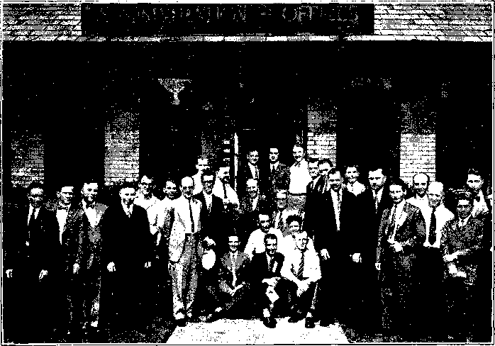people, and while a great auditorium is not so necessary as it was before the days of the radio, yet there are many people who like to see as well as hear a speaker when he gives a great address, one in which they are vitally interested.
And then the Ohio State Fair Grounds are admirable grounds for what might be called the physical setting of a big convention. There are ample buildings for the meetings that will be held in foreign tongues, and other buildings in
The Staff Appointed by Judge Rutherford to Look After the Comfort of the Conventioners.
THE CHAIRMAN’S REPLY
Jehovah the King Eternal has made it possible for his people to assemble here in the greatest convention ever held on earth. We come in his name and to him we give all praise and honor and glory.
Governor White, and the good people of Ohio, it is with pleasure I acknowledge your greetings of welcome in behalf of Judge Rutherford, president of The Watch Tower Bible and Tract Society, and its delegates from various parts of the earth assembled here in convention.
We recall the kindness accorded us during our convention here in 1924, which added to the joy of our return-
Many improvements have been made in the state. Your fine transportation facilities and good roads throughout the state made our trip to Columbus one of delight. I was favorably impressed with the natural resources and high state of agricultural development of Ohio. The diversified scenery, to one traveling through the state, is a real treat.
Its great lake, large rivers, beautiful mountains, and broad fields, are real cause for gratitude to the great Creator who made all these things in love for his creatures.
plenty for all the other purposes for which buildings are needed. The buildings and grounds are well kept up. There is ample shade. The drives and walks are in excellent condition. There is all the room that would be needed to park fifteen hundred cars without intruding upon the driveways. The grass is kept
mown; the flower beds are kept up; it is a very attractive area on the edge of one of America’s attractive cities. Columbus has many fine homes, and the State Fair Grounds are adjacent to the best section of the city.
In the physical lay-out of the grounds (Continued on page 2, Col. 1)
What a wonderful Creator we have! He has dealt bountifully in providing for man, and Ohio has shared well in its portion. The whole land is fast becoming a veritable paradise.
If man could but enjoy it forever in good health, at peace with God and his fellow man, his life would be complete.
It is Jehovah’s purpose he shall have that blessed opportunity. Men and women have longed for that time, and we are
(Continued on page 2, Col. 3)
President of the Watch Tower Bible and Tract Society and Generalissimo of the Convention.
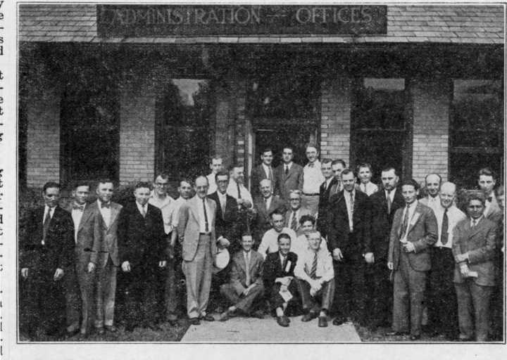The Staff Appointed by Judge Rutherford to Look After the Comfort of the Conventioners.
The Columbus Convention Will Have Its Closing Sessions Next Friday, Saturday and Sunday in 166 Cities in Every Part of the Earth. Here They Are.
JOKYO-FU
Q NELSON
SEOUL
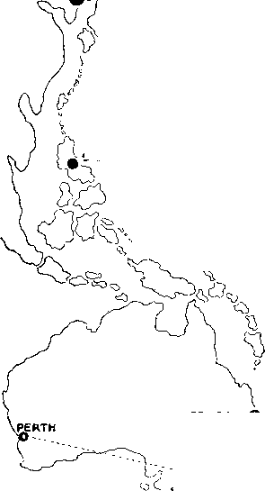BRISBANE O
MELBOURHI
^STRATHHE'W'
ADELAIDE©------- .W,'
VANCOUVER'©-----©-----------------O- -
&KAMSACK - -- - yop-^fOHO \ MEDICINEHAT .______
PENTICTON©----O ' ©" 'REGINA
CHICAGO©
HONOLULU _
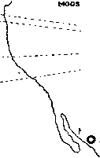MONTEREY
AUCKLAND
'ELLINGTON
IDUNEDIN
NAVAJOA
EDMONTON O._ ' -
O--._ PRINCE ALBERT© . '"©BRANDON PRINCE GEORGE '
C
X SASKATOON ~-
\ CALGARY --------------'' - -
FT. WILLIAM OTTAWA
V-'-‘---"O -A'7'?' ' ' -7 ’--©SYDNEY
TORONTO' MONTREAL
-©ST. JOHN'S
S' /“QKEMI
J KIRUNA « kuopio
.r iYaasa p kuopio / ■') Amoi ©JWAshvla
/ ST»0HSUH0OZ ‘L.-OJOENSUU ( \ [amSre~Plahti
BERGENO. OSLO JSKILSTTINA) ^^'(jjHELSINfiFORS / CSMM^E«d-A:*^KmLMl -^T9VIIPURI
W'*OSOR?RaJ?™0 ' \ ST- J°HNO<fHAL1FAX.
nrrnniT ‘ ° ©NIAGARA PALIS ©TRURO '
__DETROIT , London ___z
^oiaWaP0Uso\
o , ©BUFFALO -
CLEVELAND... - BROOKLYN -
- ---------
. PITTSBURGH------
' " ' COLUMBUS WASHINGTON
/ o
z'CINCINNATI s
G / ...'■arga^tallinn
( 'TlEWCASIlEO' XAL8ORCQ o'V'A^OYAXIoi WIHtMOpARMU TARTU 5 <<<51A5GOW UOHKOPIHfiJ ©- ©RIGA
/ ~ AARHUSft ' VLIBAU ~
jWARAlKfirpH o •q-' COPENHAfiEiV OM^£MOMtneLO. ©SIAULIAI '“"aHcesiiaA ^ ESBJEfWOP O^PRSOR/---© • KAUNAS
- # —• - -he^ekrTg
' Ht'NV0 /^O^OwB^^HMMEM-SmBURG ©STETTIN 9-- ' " ^'♦SmisstS1’!??8 \ / oBERLIfl iWntepsla^^ - - •LODZ )_ OLFEN O WINTERTHUR ^OKU"" me « -O-------^--•VIENNA
LISBON.. YVERDON •BERNE X> , W * ^>4 D0N •PINEROLO C8XZOKLAGENFURT
MADRID,
•ALEPPO .
BATHENS •RAMALLAH
ATZCAPOTJALro OVERACRUz
SALINACRUZ O ;
/ Xotapachula
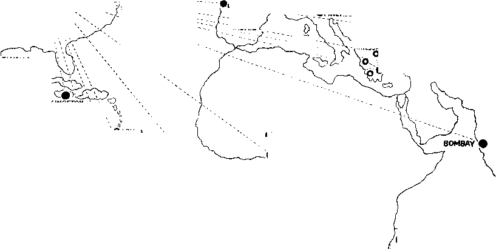KINGSTON
IBADAN
SAO PAULO •
JOHANNESBURG
O COLUMBUS
CONVENTION EXTENSION 0 BRANCH OFFICES AND CONVENTION EXTENSION
potgietersrust o
. > '©ARIMA
PORT OF SPAIN©4TB(N|0A[, \
\^'©SAN FERNANDO GEORGETOWN^
■TRESS ALOHICA-
/I .©TAMPICO
BUENOS AIRES •
• LAGOS
BLOEMFONTEIN LAOySMITH
CAPETOWN'^
. O'OURBAN
of the tens of thousands of messages of God’s kingdom, the only hope for the world, that they would be leaving in homes all through this part of Ohio. All parts of Ohio that can be reached by automobile in a day will be covered by these workers. We shall have more details about this later.
Up stairs, over the Book Room, is the sign painting department, and here, on Wednesday, Thursday and Friday four expert sign painters were making all kinds of signs such as would be needed to minister to the comfort of ten thousand guests, each of whom will wish to know where to go, and many of whom would be sure to go into some places they ought not to go unless carefully steered in the right direction.
Around to the south of The Ohio House, Building No. 2 will accommodate Russian sessions of the convention, No. 4, the Greek sessions of the convention, and No. 5, the Italian sessions. The rehearsals of music, and especially for the chain programs, are had in a portion of the structure that houses the Greek sessions.
Building No. 29 accommodates the Polish sections of the convention, No. 41, the Hungarian and Luthuanian sections (Hungarian in the main part of the structure and Lithuanian in the alcove), and Building No. 43, of rustic design, almost in front of the Ohio House, accommodates the Slovak section.
The Grandstand, which is Building No. 68, in its section No. 11 will accommodate the German-speaking friends, while in its section No. 2 the Ukrainian friends will be accommodated.
Finds Preparations Complete
(Continued from page 1, Col. 3) the central point of interest is The Ohio House. It is purposely painted white, and is the only building of that color on the grounds. It is located approximately in the center of the buildings, or rather a little to the front of the center. This entire building is given over to Judge Rutherford and his staff. The general oversight of everything that goes on at the convention will be centered at The Ohio House.
Just back of The Ohio House, to the northeast of it, is the Administration Building. It is just what its name implies. It is here that the chairman and the assistant chairman of the convention have their offices. Here is the cashier, the director of instrumental music and of vocal music, and a headquarters for the reportorial staff of The Messenger.
North of the Administration Building is the Coliseum, which houses the Information Bureau, subscription offices of The Messenger, and the various subdivisions of the Service and Colporteur Departments, which, in this convention, is one of its greatest features. Here you will find too, the Post Office, Telegraph, writing tables, rooming assignment, and other conveniences for the friends.
To the west of the Coliseum is the Restaurant and Book Room. The Restaurant is really thirteen cafeterias in one. Each one of the thirteen sections is complete in itself, equipped with eight waiters, who minister to the needs of the hungry. There are sixty people in the kitchen. It is estimated that at the thirteen counters and upon the 200 tables in this great room four thousand people can be accommodated at one sitting.
At one end of the great dining room there were piled on Friday morning thousands of paper bags each of which contains Judge Rutherford’s books and booklets. These books and booklets are now printed in forty-eight languages. Many of these tongues are represented in the literature now about to be placed in Columbus and vicinity, but, of course, as Columbus and vicinity have no great) foreign population there is less need for some of the tongues here than there would be in a place like Paris, where one of our great conventions was held less than two months ago. We hope every conventioner will call at the Book Room and take away with them combination No. 1, No. 2 or No. 3.
The piles of books looked very neat and orderly. It was an inspiring thing to think of the thousands of workers that would be taking those bags of books around, within the next few days, and
Between the Grandstand and The Ohio House is the Baby Nursery, located on the top floor of a two-story building, and equipped with cribs, sand piles, toys, bedding, mosquito netting and whatever is necessary to keep little folks busy and contented and safe while parents are elsewhere. Nurses are provided. The hospital is next door.
The story about the campers, the hundreds of house-cars and trailers, the camp of the front line soldiers in this great battle of Jehovah against all untruth and unrighteousness is a separate story in itself and will be told in a future issue.
You sometimes have company at your house, don’t you? And if there are to be lots of guests, there is plenty of excitement long before the guests arrive. There has to be. Now suppose there are to be a dozen guests. That would be quite a houseful. It would be necessary to make some unusual provisions, if the guests were to run to twenty-five, fifty or a hundred.
But suppose there were to be a thousand guests; the work would be multiplied tenfold; and if there were to be ten thousand (and it is anticipated that there will be that many or more at Columbus) the responsibility is still greater and provision must be made long ahead, looking to every possible contingency.
The Chairman’s Reply
(Continued from page 1, Col. U) confident this good news will make their hearts glad.
When we consider the wisdom of our 1 God reflected in the works of his hands I in the heavens and earth, it must be apparent to all that he never purposed his creatures to live here just long enough to learn to love the things he provided, form strong ties of friendship, and then to die, leaving it all behind. He has promised that some day it shall be different. That day is at hand. It is God’s will that all shall know about it, and it is our happy privilege, as his witnesses, to bear this good news to the people of Ohio, and to all peoples of good will throughout the earth.
Alighting on Ohio Soil after His Drive from the Headquarters of the Society in New York City.
Knowing the end from the beginning, Jehovah foretold of the radio and pro- , vided it as his means of conveying his message to the people.
It is a remarkable fact that radio was discovered at the very time God commands the good news of his kingdom shall go to all nations.
Next Sunday, by Jehovah’s providence, his message will be heard in the greatest broadcast ever arranged, reaching the people from Alaska to Australia and including every state in the United States, and covering Europe, Canada, Mexico, Cuba, Hawaii, British Guiana, and virtually every place where it can be heard by radio.
All the peoples of earth need God’s help. Jehovah is man’s real friend and benefactor. He has promised to establish his kingdom upon the earth forever, through his son Christ Jesus, and bless all the families of the earth. His promises are sure. It is God’s will that his people shall come together at this time to consider his purposes and with confidence declare them to others as his witnesses.
We are therefore assembled as children of the Most High, as one family in Christ, with one purpose to honor the King Eternal and as one man to obey his commands by joyfully doing the work he commands us to do. We are glad to have a part in the Lord’s work, and take this occasion to invite you, Governor White and all the people, to hear the message next Sunday and join in praising our God.
The conveniences you have so graciously placed at our disposal, this large Coliseum with its spacious grounds, together with the fine hospitality shown by the officers and everyone with whom we have come in contact, has greatly added to our comfort and happiness.
In behalf of Judge Rutherford and this entire congress, I thank you for your kindness and assure you, Governor White, this whole assembly agrees with me in declaring it is fine of you to come here and personally welcome us in this manner, and we appreciate it.

Alighting on Ohio Soil after His Drive from the Headquarters of the Society in New York City.
The Greatest Ever Held In Europe
Let’s Join the Party That Accompanied the Judge
“All ashore that are going ashore.” The deck steward gave his last call for all visitors to get off the boat; the gang planks were lowered and at 12:01 a. m. Saturday, May 9, the great ship began to slowly move away from the pier. The deep, bass, steam whistle gave a long blast as a parting notice to the city of New York that the SS. Rotterdam was once more leaving- for Europe. This time she carried Judge Rutherford and his small party of assistants to attend the Watch Tower conventions in Paris, Berlin, Copenhagen and London.
Life aboard the ship was a very happy one for our little party. Each morning Brother Rutherford invited us to have a study on one of the articles on Mordecai and Esther which had just started to come out in The Watch Tower. Every lesson left us on “pins and needles” of anticipation and expectation for the next morning’s study. If the trip had been limited to those morning studies, it would have been blessing enough, but the Lord had even more in store for us. , During one of these meetings, Brother ■ Rutherford, by way of illustrating how | the Haman class was conspiring against the Mordecai and Esther class, told us about a letter he had received from Germany before leaving Brooklyn. This letter threatened him with arrest and im
prisonment if he addressed the public and spoke against the clergy while in Germany. It so happened that a big public meeting was being arranged as one of the features of the Berlin convention. In spite of the letter he sent instructions to the Magdeburg office to go ahead with their preparations for the public meeting. Further than this he did not tell us what he was going to say or do. You can imagine the interest this gave us in the Esther articles as we learned how Haman plotted against Mordecai and the Jews and what happened to him. What would happen in Berlin? That was the question in our minds.
The trip across the ocean was a very delightful one. On Sunday, May 17, we arrived at Plymouth, where a party of friends met Brother Rutherford, who disembarked to spend a few days in London. On Friday of that week he went to Paris for the first big convention Paris had ever had.
Arranging for the European Conventions and the Columbus Convention and Extensions Requires a Prodigious Amount of Planning and Decisions. Here He Is Keeping Two Secretaries Busy with Preliminary Work.
What a convention that was! The Berne office, which made the arrangements with the assistance of the brethren at the Society’s headquarters in Paris, had engaged the Salle Playel, the newest and best equipped hall there, for the entire convention. With one large hall seating about 3,000, and two smaller halls seating about 200 and 500 respectively, it provided excellent accommodations for the various meetings. In all there were about 3,000 brethren at the convention from all parts of Europe, from Asia and from America. The total number to come from England was 778. Germany sent a delegation of 1,450 brethren and 551 Polish brethren reported to assist the 200 French brethren in giving a real witness to the King and Kingdom in
Paris. The final count showed that among the 3,000 there were 23 different nationalities represented. This made the handling of the meetings a very difficult problem. But fortunately all who were there could understand English, French, German or Polish, hence it was necessary to make arrangements for having the various lectures translated into only these four languages.
Brother Rutherford seemed to be absolutely untiring in his administration to the needs of these brethren who had traveled miles to hear the comforting news which he had to bring to them from God’s Word. One morning, for example, he spoke to the French brethren, and as he spoke, each sentence had to be translated by another brother into French. Talking in this manner is a great strain on the speaker. Having talked to them for a full hour, after only a few minutes interval he went into the large hall and spoke to the German, Polish and English brethren. This meant that two interpreters had to translate for the audience each sentence as he spoke it. It was amazing to us how he was able to do it, and certainly proved to us that the Lord aids one in accomplishing his purposes. At other times when the brethren of all the nationalities assembled together in the same hall, three interpreters translated his talks into Polish, French and German.
On Monday evening arrangements had been made for the public meeting. We had been looking forward to this with interest. You will probably remember, from The Watch Tower’s report
Three Thousand at Paris—From. Twenty-Three Countries. Count Noses, if You Like, but Don’t Overlook Those in the Spacious Balcony.
The Camera Wasn’t Large Enough.
Arranging for the European Conventions and the Columbus Convention and Extensions Requires a Prodigious Amount of Planning and Decisions. Here He Is Keeping Two Secretaries Busy with Preliminary Work.
ME55AGERES DE BONNES NOUVELLES SONT UNE GRANDE ARMEE P^
Their Visible Leader—About to Give Instructions to the Paris Division of “Une Grande Armee.”
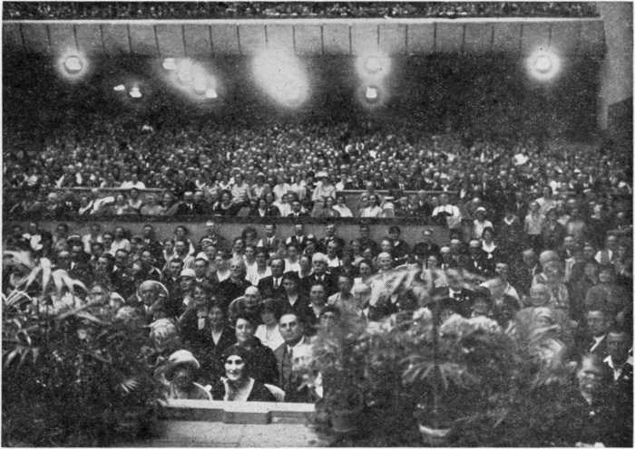Three Thousand at Paris—From Twenty-Three Countries. Count Noses, if You Like, but Don’t Overlook Those in the Spacious Balcony.
The Camera Wasn’t Large Enough.
The convention officially opened that afternoon with an address by Brother Rutherford. All of us were surprised at the large attendance at this first meeting. We had rather anticipated that this convention might not be so large, because of the hard time through which the German people have been passing, but when we came into the great Sport Palace, we beheld a crowd of fully 8,000 people there. Sunday’s meetings were attended by an even larger crowd. A conservative estimate of the number to attend the convention would be 10,000 brethren. In his address Saturday, Brother Rutherford made no mention of the threatening letter he had received, but greatly encouraged the brethren to go out into the service the next morning. He called for a show of hands of all those who expected to do this, and it was thrilling to see every hand go up. That the brethren actually did this was shown by the service reports which were received from 8,000 workers.
What a witness that crowd of 8,000
Brother Rutherford Addressing the Paris Conventioners in Four Languages at the Same Time: English, German, French, Polish
of the last time that Brother Rutherford addressed the public in Paris, that the meeting was broken up by a crowd of people who caused such a disturbance that those who wanted to hear could not. This time there was absolutely no disorder. The people came in in a very orderly manner, and never had our party seen a more interested and attentive audience than this one. They eagerly drank in the water of truth as it flowed to them from God’s Word, and thirsted for more. We knew that this was true, for after the lecture, we watched the crowd come out of the auditorium carrying the books and “parlezvousing” over the good things | they had heard. The report showed that 900 books and booklets were taken away by the public at that meeting.
Tuesday was service day. Bright and early the friends met at the hall to go out into the work. It was a real problem to take care of so many people who could not speak or understand a word of French, but it was done. Four brethren were on the platform to give instructions to the workers in four different languages. Various captains were given numbers, which they had attached to long sticks to hold them high above the heads of the people. Each worker was assigned to one of these numbers, and as the captain’s number was called out from the platform he came forward so that all the workers assigned to him could follow him out of the auditorium. Each group had a couple of interpreters to aid the captain in placing his workers. Some parties went to their territory in big sight-seeing busses, which had been engaged for that purpose and which waited outside of the hall. Others who were assigned near-by territory went by trolley, taxi, or on foot. Practically 100 percent of those at the convention at that time engaged in the service. During that one morning of service, the workers placed 1,329 books and 14,557 booklets, making a grand total of 16,776 books and booklets placed in Paris during the
entire convention, public meeting
eluded.
“How couldn’t guage?”
in
was this possible when understand or speak the you ask. Well, you see, it
you lan-
was
left and ice! and also
in the city of Berlin during Sunday Monday, the days set aside for serv-Not only did they leave the books booklets with the people, but they personally invited thousands to at-
like this. Each worker was furnished with a card which contained a short witness and the price of the books. We took this in our hand, knocked on the door, and as they came we handed them the card to read. When they asked us questions in French, we waved our hands, shrugged our shoulders and told them in our own language, which, of course, they couldn’t understand, that we didn’t have the slightest idea what they were talking about. This usually ended in their reading the card, if they had not already done so, and, as the total figures show, in many of them taking the literature. One brother told of a taxi driver he canvassed for the last two booklets he had. He understood the man to say, “No Bible,” after he had read the card. To this the brother replied with gestures, “Oh ‘messier,’ Judge Rutherford, Salle Playel (this being the name of the hall), American, radio, 200 stations.” The man looked at him in wonderment, repeated to himself what he had heard, reached in his pocket for his money and took the booklets.
Everybody had a happy time in giving Paris this witness. Besides that which has already been mentioned, Brother Rutherford spoke over the radio, his lecture in English being broadcast by station Vitus. It was followed by a translation into French so that many people throughout that country and surrounding ones could hear. The managers of the station greeted Brother Rutherford most cordially. Station Vitus has been broadcasting the Watch Tower’s electrical transcription programs, and hence the management was delighted to have Brother Rutherford speak over their station in person.
On Wednesday, the day following the Paris convention, our party left for Berlin, breaking the journey by stopping one night at Cologne, that ancient city on the Rhine, and another night at Magdeburg, with the Bethel family there.
Saturday, May 30, and Berlin at last! The convention which had been of such
tend the public meeting on Monday night. We were amazed at the final service report, which showed that 146,505 books and booklets were disposed of during the convention, public meeting included.
On Sunday afternoon the workers returned from the field to hear another most encouraging discourse by Brother Rutherford. On his way to this meeting
meeting and the time for seeing whether or not the Devil’s organization would attempt to make good its threat, finally arrived. As we came into the hall a brother informed us that some members of the Nationalist party had attempted to put up their banners but that these had been taken down by the brethren. This in itself looked as if the troublemakers were there, at least. The great hall was packed with people. Every seat was taken and many were standing. Another adjacent hall, connected with loud speakers, was also filled, making a total attendance of 16,000 or more. Some estimated the crowd at 17,000. The friends, a large number of whom had returned home so as to make room for the public, took the seats to the rear of the speakers’ platform and in the balconies, leaving the best seats on the main floor for the public. There were approximately 5,000 friends there. The rest of the crowd was made up of the public.
When Brother Rutherford came upon the platform a tremendous applause greeted him, which must have put fear into the hearts of the trouble-makers. From the very first the people eagerly leaned forward in their seats and closely followed the interpreter’s translation of everything that Brother Rutherford said. Instead of detracting from the interest, this sentence-by-sentence translation enabled the people to grasp the full significance of each word. Brother Rutherford opened with a general survey of world conditions and the need for some remedy. His first thrust at the hypocrisy of the clergy was not so pointed, his next was a little sharper,
Loading Up the Workers for Field Service—Paris Convention
little
incident occurred which illus-
particular interest to us was about
begin. What would be the public meeting?
the outcome
to of
trates the longing existing in the hearts of many of the people of Germany. While waiting in front of his hotel for his car to come, in his usual friendly manner he spoke to the hotel doorman, mentioning that he was a tall, handsome fellow. With tears in his eyes, the man replied, “There are not many big men like you and me left in Germany.” This gave Brother Rutherford the opportunity to speak a word of comfort to him, and later he left with hirti a copy of Life.
Monday night, the time for the public
and his next still sharper as he developed his argument showing what the Devil’s organization actually is and how it is working against the Lord and his anointed and endeavoring to keep the truth away from the people. Thrust by thrust, step by step, he led up to a climax. Then like a bursting bomb he told them how he had been threatened with imprisonment if he addressed that meeting.
You should have seen that audience! The critical moment had arrived. Would the Haman class show their faces and
IL
Here They Are—At Least All of the 3,500 D< Get in One Photograph. Yes, He Was There,
Brother Rutherford Addressing the Paris Conventioners in Four Languages at the Same Time: English, German, French, Polish
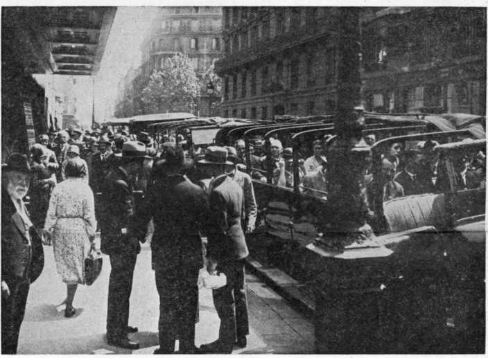Loading Up the Workers for Field Service—Paris Convention
cause a disturbance? Our eyes swept back and fotth over that vast audience for the first signs of disorder, but instead of disorder, from the section reserved for the public as well as every corner of the hall, came an overwhelming, deafening applause and many shouted out their indignation and their shame upon the clergy and conspirators. The audience was with him and against the conspirators. In a clear and logical manner the judge proceeded to tell them what was the only remedy, and the meeting ended with no disorder or attempted arrests. The public showed their interest by taking away with them nearly 12,000 books and booklets. Another great convention came to an end and the friends went home rejoicing.
The day following the convention our party returned to Magdeburg where Brother Rutherford remained at the Magdeburg Bethel until it was time for him to go to Paris. This second trip was necessary for him to complete the arrangements for a much needed house for the brethren who are looking after the work in France. While there he spoke over radio station Vitus for the second time. Because this second trip
Our party met together again in London, just in time for the opening of the London convention, which was held at Alexandra Palace. This hall is an immense structure located in a beautiful spot, high on the top of a hill from which an excellent view can be had of the city of London for miles around. It is surrounded with a lovely park filled with beautiful trees. The grass is lux-. uriant and there were no “keep off the grass” signs to keep the conventioners from sitting under the trees between meetings. The building itself has many different halls in it. The largest one known as the Great Hall, is so large that the Alexandra officials told us before the public meeting that no speaker had ever been able to attract enough to fill it. The convention meetings were held in one of the smaller halls, which comfortably seated the 3,500 brethren who attended.
The weather was fine and the brethren never manifested a better spirit. The long-tail coats, black ties and more or less ecclesiastical formalism which used to be in evidence had entirely disappeared. With hearty enthusiasm the brethren greeted Brother Rutherford’s1
was necessary it was impossible for him to attend the convention of the Scandinavian brethren in Copenhagen, June 5-7. Instead, two of our party, together with a brother from the London Bethel, made the trip. The same spirit shown by the brethren attending the other con-
talk on the 54th chapter of Isaiah, particularly when he told them that the time had passed for giving honor to any man and that all honor for the truth belongs to the Lord. After this lecture we heard many brethren say that they had never attended a meeting which they
Three Hundred Sixty
Scandinavian Brethren at the
Convention in Copenhagen
ventions was manifest
Judge Rutherford s Popularity with Londoners Packed Out the Great Alexandra Hall—The First Time It Was Ever Done by a Speaker
’orn.”) When the subject was announced some were so enthusiastic that, in accordance with the British custom, they stamped their feet, clapped their hands, and one or two called out “ ’ear! ’ear!” That talk will long be remembered by those who heard it. At its conclusion the friends were so encouraged by the increasing light on God’s Word of truth that they were more anxious than ever to do their part in showing forth the praises of Jehovah.
To tell about the London convention and not mention the field service would be omitting one of the biggest things; for the brethren came to work, and they did work. Practically all went into the work during the two service days, and as a result left 10,105 books and booklets in the hands of the people. This figure included the number placed at the public ; meeting.
And now to tell you about the public meeting. The Great Hall was packed to the overflow, fully 10,000 being there. Some were standing in the rear and others were turned away. Amplifiers carried Brother Rutherford’s voice to all parts of the auditorium. Again in a fearless and logical manner he laid the plain facts before the people for them to \ accept or reject. He reminded them of । public statements made by their leading ; clergymen which showed that they did ! not believe in the Bible and therefore could not be the Lord’s representatives, but in truth and in fact were agents of the Devil. He told them that he was not there to get the favor of any man, but to
lions of dollars in gold, which had been loaded on our ship, the Bremen, in payment of that part of Germany’s debt to the United States due on July 1, having to be taken off on account of the moratorium. But this delay in getting started was offset by the courteous treatment which we received while on board the ship. It pleased us to see how the officers and crew showed their appreciation of having the judge return home on their ship. When we went around to engage a table in the dining room, we found that they had already reserved one in the choicest location to the immediate right of the captain’s table. When we spoke to the deck steward about a couple of deck chairs, he told us that he was “holding them for Judge Rutherford in the ‘Ambassador’s corner.’ ” Another evening the captain himself invited Brother Rutherford to visit him in his private quarters and to bring his entire party with him. Only one other passenger on board was asked to attend. After this visit he requested Brother Rutherford to sign a private book which he kept for distinguished passengers. Many well-known men of the world had placed their signatures therein, but none were able to leave with their signatures such words of comfort and real good cheer as those which Brother Rutherford affixed. This was greatly appreciated by the captain, for he in turn presented Brother Rutherford with an autographed copy of a beautiful book of views of the ship. We found that all of Brother Rutherford’s books
there. All day enjoyed more; and we felt the same way
Saturday they spent out in the country about it, too, for a spirit prevailed which sections of Denmark preaching the King- warmed the hearts of everyone. Brother dom Gospel by witnessing from door to Rutherford told us afterward that he be-door, to gather together again in the ■ lieved the brethren there were ready to evening for a discourse. Again, on Sun- i go right down the line for the Lord and day morning, they went into the work, I his Kingdom.
tell them the truth. It was for them to “take it or leave it.”
It was truly a wonderful meeting, and, taken in conjunction with the other meet-
were in the ship’s library for the passengers to read.
All these courtesies on the second fastest ship afloat made our trip home a very
pleasant one.
The sea again was never
this time in the city of Copenhagen. As : As much as we enjoyed this meeting, a result of this witness 2,816 books and j we had another treat in store for us; booklets were left with the people. Here i for his next discourse was on the 9th 360 brethren from Norway, Sweden and | nhnntor nf FIzpItipI Dp cnbipet hpino-
Denmark attended the convention, and i all left with a greater determination: than ever to continue to press the battle to the gates.
chapter of Ezekiel, the subject being ford gave “The Man with the Writer’s Inkhorn.” brethren in
(It amused us to hear one brother who spoke with a broad, cockney accent call
it “The Man with the
Writer’s Hink
ings, the friends went away with the pleasant one. ____ _____ ______
feeling that the convention was the best; very rough and none of us were sick, ever held in England. ’ While we were sorry, in a way, to see
Another week was spent in London - • ' ' ’
following the convention, to take care of the many things which had to be done.
On Sunday evening Brother Ruther-
a farewell talk to the the London Tabernacle
the trip come to an end, we were glad to get back so that we could aid with the preparations for Columbus convention. From start to finish the Lord’s blessings in this trip to Europe were
clearly manifest, and
everywhere were greatly
and on Tuesday, June 23, we left for everywhere were greatly home. Our departure from Southampton I hearing and seeing their
was delayed about ten hours by the mil- more.
the brethren encouraged by president once
legates at the London Convention That Could Too! Quite Near the Center of the Picture.
Here They Are—At Least All of the 3,500 Delegates at the London Convention That Could Get in One Photograph. Yes, He Was There, Too! Quite Near the Center of the Picture.
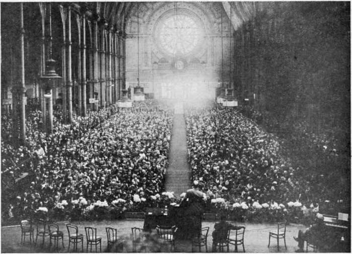Judge Rutherford’s Popularity with Londoners Packed Out the Great Alexandra Hall—The First Time It Was Ever Done by a Speaker
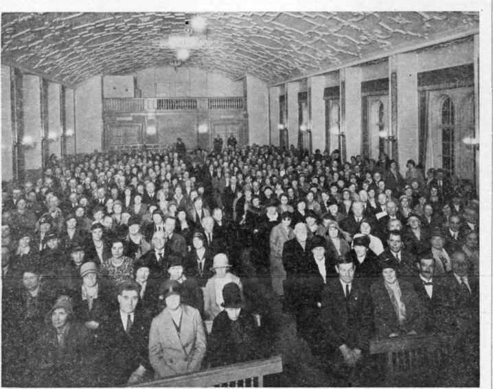Three Hundred Sixty Scandinavian Brethren at the Convention in Copenhagen
Somebody Paid a Hundred Thousand Dollars for Advertising the Resurrection of the Old Testament Saints. But Not Us. Come Again, Reporters
“All men have not faith,” and there is no use in expecting men to exercise faith I when they do not have it. At the present | time there is only a handful of people । in the world who really know that the ! Bible is the Word of God. Since the Bible is the Word of God, then we may depend upon it that it was especially written for us who are living just now, when Satan’s organization is slipping down into the abyss from which it will never arise. i
God has a people in the earth at this | time. These people are his people, and ; not the Devil’s people. They look like other men; but they are not the same. | They are governed in what they do by the Word of God. Their desire to do j God’s will as they find it recorded in his I Word is the all-consuming passion of' their lives; it means more to them than | all else in the world put together. j
We know who the people of God are.: They are, collectively, God’s “faithful ! and wise servant” in the earth at this ; time. Collectively this “servant” goes to make up the Watch Tower Bible & Tract Society. There is no other “ser- j vant.” God does not have fifty-seven; or even two different ways of doing his work in such an hour as this. i
It is the positive conviction of the “ser- i vant” that the Watch Tower Bible & Tract Society is being used and will be I used by the Lord to proclaim God’s name ; and Word and his judgments in the earth and to help God’s people, both those who are free and those who are in the Devil’s cages, to grasp the blessings and to see
What the Back and the West Side Look Like. Do You Think David Will Like It?
A View of the Front and East Side.
the duties and privileges of the hour.
Judge Rutherford, president of the Watch Tower Society, is one of the hardest-worked men in the world. Anybody can be a Christian in peace-time, but Judge Rutherford was one of the wartime Christians; and, for daring so to be, went to Atlanta Penitentiary under four sentences of twenty years each.
When he emerged he was in poor physical condition, and even now has the use of but one lung. Since his return from Atlanta, prudence and good common sense dictated that, working as hard as he constantly works, he should have the benefit of the most equable winter climate to be found. It is a matter of common knowledge among meteorologists (weather experts) that San Diego, California, is as near perfection for a winter climate as it is possible to get. About a quarter of a million people besides meteorologists have made the same discovery and make the city their winter home.
For years after he emerged from prison, Judge Rutherford went to San
Diego to work during the wfinter months, renting such quarters as could be secured. His physician, Dr. A. G. Eckols, of San Diego, urged him to make the city his permanent winter home; and in the latter part of the year 1929 some brethren, out of their own personal funds, arranged for the erection of Beth-Sarim, “the house of the princes,” of which several illustrations appear in this issue.
Before Judge Rutherford would accept and use the home, he insisted upon writing the deed that it shall forever be held in trust by the Watch Tower Bible & Tract Society for the use of the Lord’s (Continued on page 8)
Looks Pleased, Doesn’t He?
Just “Finished” the News Reporters
A View of the Front and East Side.
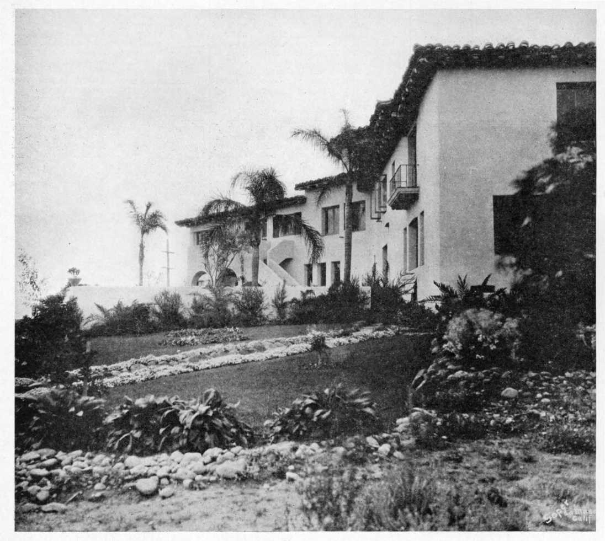What the Back and the West Side Look Like. Do You Think David Will Like It?
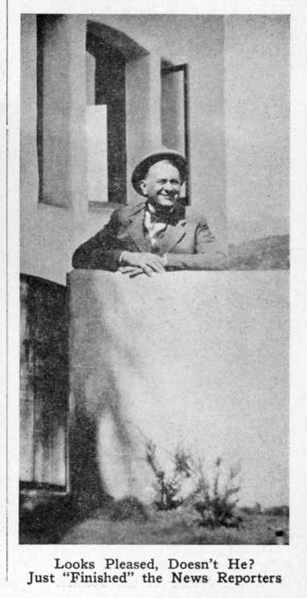Looks Pleased, Doesn’t He? Just “Finished” the News Reporters
The Messenger Takes Great Pleasure in Passing On to Its Readers Reports from the Brethren Brother Rutherford Has Appointed to Carry Out His Instructions with Reference to the Lord’s Work in Foreign Fields.
(First Installment)
Jehovah God states in his Word that this gospel of the Kingdom will be preached in all the world for a witness. We are pleased, therefore, to make a report of the activities in Australia, New Zealand and the South Sea Islands, which come under the jurisdiction of this branch.
Argentina is a vast country, about equal in area to all the Rocky Mountain and Pacific Coast states of the United States. Today it occupies much the same relation to the rest of the world that was occupied by the United States seventy-five years ago.
You think of the United States as having many residents of foreign birth, but in proportion to our population we have twice as many foreigners here as you have there. Thus, the foreign-born । population of the United States is given as 13 per cent, while the foreign-born population here is 25 per cent.
Yet, although Argentina is a, young country as respects the immigration period through which she is passing, she is an old country otherwise. The University of Cordoba, in Argentina, was founded in 1613, seven years before the
The Bethel Family in Buenos Aires, John Muniz (center), Resident Manager.
Montevideo and the Uruguayan republic is under the representation of Brother Carlos Ott, German. Next spring, God willing, we expect to extend the message to the republic of Peru.
if given 50 percent of the proceeds of his placements. The situation can be appreciated only by those who are in it themselves.
Acting under the advice and instructions of our beloved president our first aim is to keep the witness work under way, and where a colporteur cannot quite make a “go” of it we assist him to the extent that is absolutely necessary. Thus, by one means or another, we are getting the work done.
“Pilgrim Fathers” landed at Plymouth. Immigration into Argentina has come principally from Spain and Italy, though there are also many Germans among our new citizens. The state contributes; T, ,v , ,
about $1,000,000 in gold every year to L sometimes seems to me that the the support of the Roman Catholic re- Latms bave to be handled with kld ligion, but other religions are tolerated, i ghwes Work among them is difficult The constitution requires that the presi-! a*lde Jrom *heir Poverty and lack of dent must be a Roman Catholic. education. Nevertheless we have now
We have a good deal of illiteracy to i sevfnty fr?.ends wbo a™ taklfn^ a contend with, except among the German 1 ,°5 less active part in the witness work, , ' the work which we consider most iman . f » £ TTnnp-arian immi i portant. At the special drive in May we
grants ^are^llitara^e^S^^per^ent o? the out 2’709 books and booklets. This Spanish immigrants’ 28% ?Zr cent of theiis not a &reat thin^ but it is our great-Italffin and 17 per ’ celt* OPf the French i -t figure for one week’s work.
Among the German immigrants all but 9; Rosario de Santa Fe, the work is per cent can read and write, and among; represented by Brother Oscar Schwandt, the English imigrants all but 8 per cent.; German. The twin cities of Parana and In the country the farms are of vast | Santa Fe are represented by Brother size, averaging some 500 acres each, as ; Febx Remon, Spanish. The city of Bahia would be expected in a land largely I Blanco and the southern part of the Regiven over to stock raising and wheat public is represented by Brother Ricardo growing. The great distances, poor Glahn, Paraguayan. The cities of Men-roads, general lack of education, and pre- doza and San Juan, with the provinces ponderating influence of Roman Catholi-; the same name, are represented by cism make it difficult to work the coun-1 Brothers Maximo Gimpel and Ramon
■SSI
try districts yet, but some progress is Mercado, the first German, the being made. i Argentinian.
Meantime we have a great work to do in Buenos Aires itself, where 40 ner cent of all the immigrants remain after arrival in the country. This is a great city, one of the great cities of the world. We are doing something, but we need help. Pray for us and send us men and women of courage to help us. _
At the time this is written we are in the midst of our winter, so things are quite different with us from what they are with you. We are differently situated otherwise than as respects the weather. Yours is a rich country, while at this time Argentina is very, very poor. We work under great difficulties.
Our work began in 1924, with only one brother. Early in 1925, at his request, the Society’s president sent in two able colporteurs speaking the German language to work among the immigrants from Germany. These brethren were and are to this day good samples of fidelity to the Lord and his cause.
We keen no regular office staff. Of the two brothers with me, one, the German brother, works during the day as a tile setter, when he has a job, and thus pays his room rent and expenses. When he has no work he goes on with his canvassing. The other, Pedro Kasanowski, has a knowledge of the three languages Polish, Ukrainian and Russian. He also works
latter J
Carlo Ott, in Charge of the Work in Uruguay.
As fast as they are ready we are sending colporteurs out to the different cities. They canvass these cities, and if they find any interested they hold studies in The Harp of God; and if the interest continues they establish classes. If not, when the city has been thoroughly canvassed they are sent to another one.
Classes, when formed, are held in the rooms of the interested party; if this is not possible rooms are rented for the purpose.
The dear friends here all, as one, send I
A. MacGillivray, Resident Manager of the Australian Work.
During the past year there has been a considerable increase in the work, both in the number of pioneers taking part in the field service and a general awakening amongst the classes. The work is directed by Brother Rutherford from the headquarters of the organization at Brooklyn, and we endeavor to carry out the instructions received as near to the letter as we possibly can, and we find that in proportion as we do this the Lord’s blessing is manifested to a greater degree.
At the present time, May, 1931, there are 130 pioneers battering away at the Devil’s organization, and also a number of auxiliaries and class workers. The reports received at the present date indicate a considerable increase in the work for the year 1930-31.
During this year the work in the Fiji Islands has opened up, and also in Tonga, Samoa and New Guinea. Little , or no witnessing was done in these countries prior to this year, and it is marvelous to see how the message of the Kingdom is being received, not only by the natives, but also by many Europeans who make their sojourn in these islands.
The work as carried on in these islands and in Australia itself is not easy, by any means. The pioneers who operate in house-cars sometimes report that they find a distance of 100 miles between houses. Working under such conditions it is hard to put in the number of calls
during tained, among sians.
the day when work is to be ob-and at other times canvasses the Poles, Ukrainians and Rus-
In the evening both of these brethren assist me in wrapping packages for mailing, and in making ready for mailing the 500 magazines which we send out from here every fifteen days.
The distribution of literature here is
these house-cars
love to all, and in the name of our wish that the great convention will the most encouraging effect pos-Let us all hope that the Lord will the convention abundantly, and
their Lord have sible. bless
maintain our courage while we fight on the side of the Lamb.
per day; however, in Lord does sustain all wholly devoted to him, all their needs.
Very recently one of
every case the those who are and he provides
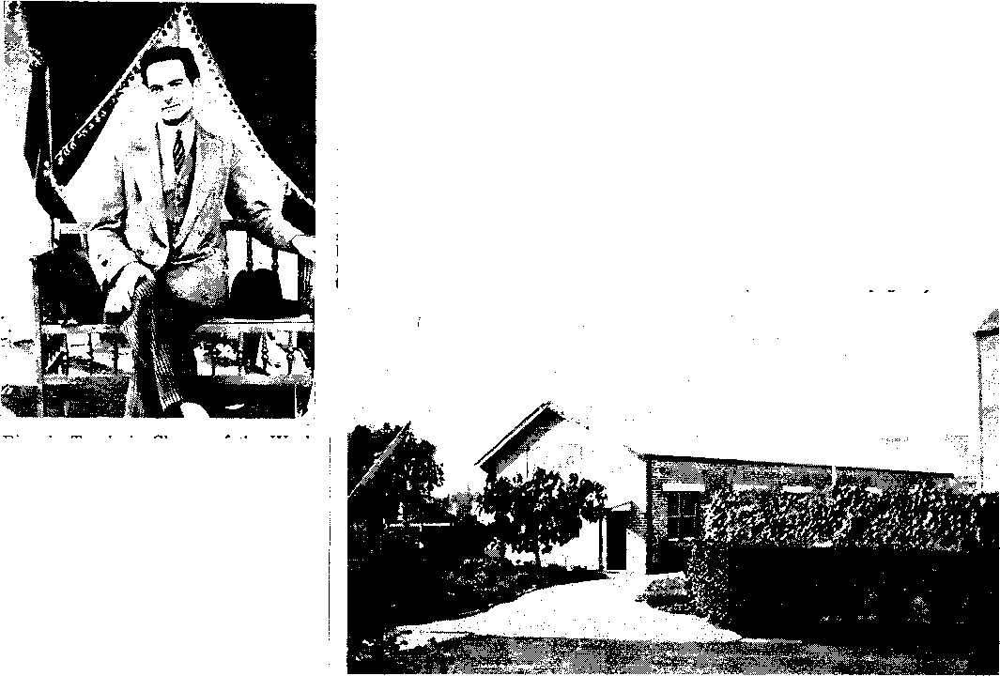The work in the
republic of Chile was
The Society’s Office in Sydney, Australia.
Charge of the Work
Chile. ।
Ricardo Traub, in in
with four pioneers aboard traveled from West Australia to Sydney, a distance of over 3,000 miles; part of this was over the Australian Desert. For several days no houses were seen at all, but when they
(Continued on page 8)
started last year, in the care of Ricardo Traub, German. Although so recently started, we already have some results. One expression heard by the writer when he was there in February (at which time eight were immersed) was that one of the immersed ones said when the truth came to him he was communistically inclined, and did whatever he could to serve the Devil and libel God. Henceforth it would be different with him; he would try to serve God to the best of
such a difficult task that a colporteur _
would not be able to make his expenses his ability, and he is doing so.
The Bethel Family in Buenos Aires, John Muniz (center), Resident Manager.
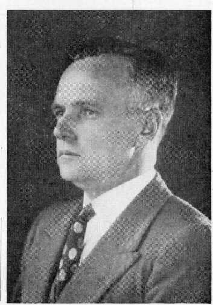A. MacGillivray, Resident Manager of the Australian Work.
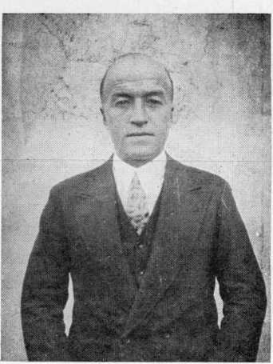Carlo Ott, in Charge of the Work in Uruguay.
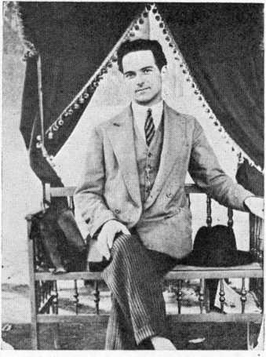Ricardo Traub, in Charge of the Work in Chile.
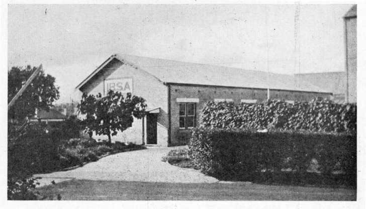The Society’s Office in Sydney, Australia.
His Bedroom, and the Famous Nightcap Which So Amused the Newspaper Men.
BETH-SARIM
(Continued from page 6) work in the earth, with the expectation that in due time Abraham, Melchisedec, Joseph, Moses, Joshua, David, Isaiah or some others of the patriarchs or prophets of olden times will appear and will be glad to use this home which has been prepared for one or more of them in the western edge of the new world.
The climate is the same as that of Palestine. The place is planted with date and palm trees, such as would be familiar and pleasing sights to these men. On the part of Judge Rutherford, the dedication of this home to God’s work and for the use of these men was a simple act of faith. To a few newspaper men this exhibition of true faith in God and in his Word has seemed to give occasion for a little display of semimirthful incredulity; but for the most part the newspapers have treated the item with dignity, and the story of Beth-Sarim has gone around the world, conveying to millions of people the thought that shortly David and others will no doubt be awakened from the sleep of death.
1J "
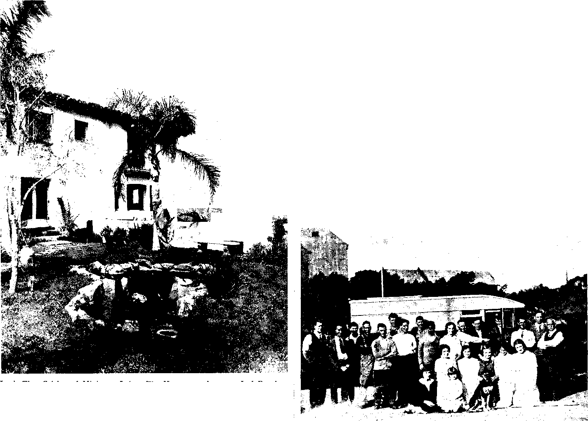Here’s That Celebrated Miniature
His Size) Would Make Quite a Splash!
(Continued from page 7)
Lake. The Newspaper Accounts Led People to Believe It Was Several Acres in Extent. Two No. 15’s (If We Remember Correctly
WITNESS WORK IN AUSTRALIA pioneers reported that even in the re" ’ / . „ / mote parts of the desert the people knew
came to a station and reported them- of the work being carried on.
Whatever the motive of the newspaper men, their action resulted in giving free world-wide publicity to a Bible truth, the resurrection on earth of the faithful Old Testament saints, publicity such as would have cost the Society thousands and thousands of dollars.
Another feature, an ominous one for those caught in Satan’s toils, is that the “evil servant” class, instead of being glad to see the preparation for and the use of adequate equipment for doing the Lord’s work, seem to have the spirit of Judas when he said, “Why was not this ointment sold and the proceeds given to the poor?”
The record shows that Judas cared nothing about the poor. What he really wanted was to get his hands on that money for himself. And the reason he wanted it for himself was not so that he
could use it to the glory of God. His j
thought in the matter was wholly selfish,! in their own language. We have yet a wholly indefensible. And the Judas | number of places to reach and plenty of class are like Judas himself. They are all room and liberty for those who wish to of the same stripe. ' ' .. .. ... -

: couple adventure with the privilege of service for Jehovah God.
The president has been pleased to assign Java to the Australian branch, and very shortly we are hoping to send representatives there.
The electrical transcription of Judge Rutherford’s lectures has been a great boon to this country and a wonderful blessing in sending out the message. These are so clear, plain and convincing that the people absolutely rejoice to listen in. We are hoping as time goes on to add a goodly number more stations to our present ‘going list’. Some of the Australian stations broadcasting the Watchtower programs have been heard in America.
This is a vast territory. If you were to take your stand in New York you would have the eastern outpost of our territory in London and the western about California, and in the north and northeast about the same distance. This will enable the friends to get an idea of the difficulties that confront those who are taking part in the work in these parts.
Take a map of the South Sea sometime and look at Tahiti east of us, Western Australia west of us, and New Guinea, Java and Fiji north and northeast, and you will begin to have an ap-
The Outside Stairs from the Patio to the Sun Parlor.
preciation of some of the work that is going on by your brethren in the Southern Hemisphere.
Here in Australia, New Zealand and the islands of the sea we are joining with you in taking part in the Columbus convention extensions by means of general assemblies and field service for everybody. We are looking forward to the report of this international convention with keen interest, and we pray Jehovah God that it may be the greatest witness that has ever been given in the earth.
A word in closing, taken from a report just received from the first pioneer to enter the Island of Tonga in the South Seas. After being there a few days he gathered around him a number of young native men and women and they continued all night discussing the message of the Kingdom.
After hearing the glad tidings they resolved to band together to make a translation of all the books and booklets so that their people who cannot read English may have the privilege of hearing the Truth.
This is a sample of what is going on in the various islands under our jurisdiction. Truly it is glorious to have the privilege of carrying the message of the Kingdom to these people. The work is plentiful and the laborers are still few.
(To be continued in our next issue)
selves these station owners sent word The Lord is raising up translators in
ahead that the Watch Tower folks were the different islands so that the mes- The Bethel Family at Sydney, Australia, Saying Goodbye to Two Pioneers Setting coming and the end of the world. These sage is being prepared for these people Out Across the Continent.
His Bedroom, and the Famous Nightcap Which So Amused the Newspaper Men.
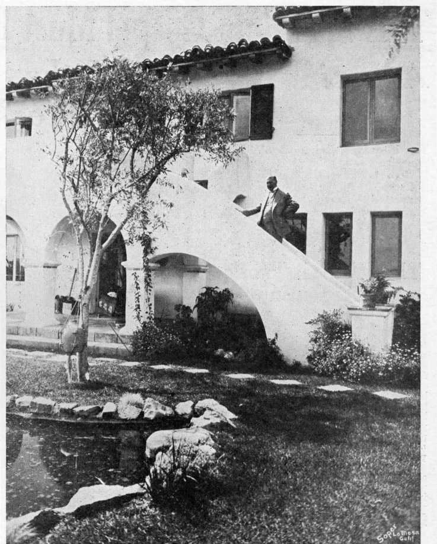The Outside Stairs from the Patio to the Sun Parlor.
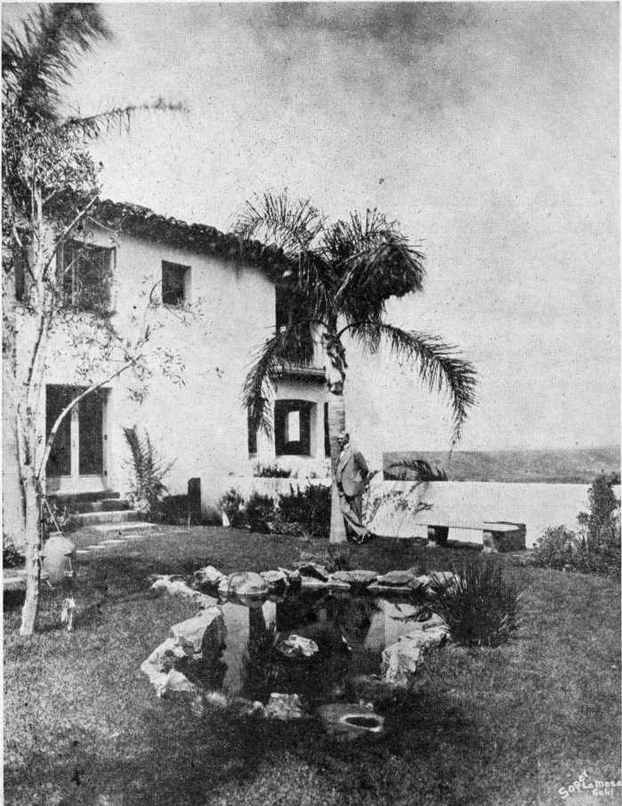Here’s That Celebrated Miniature Lake. The Newspaper Accounts Led People to Believe It Was Several Acres in Extent. Two No. 15’s (If We Remember Correctly His Size) Would Make Quite a Splash!
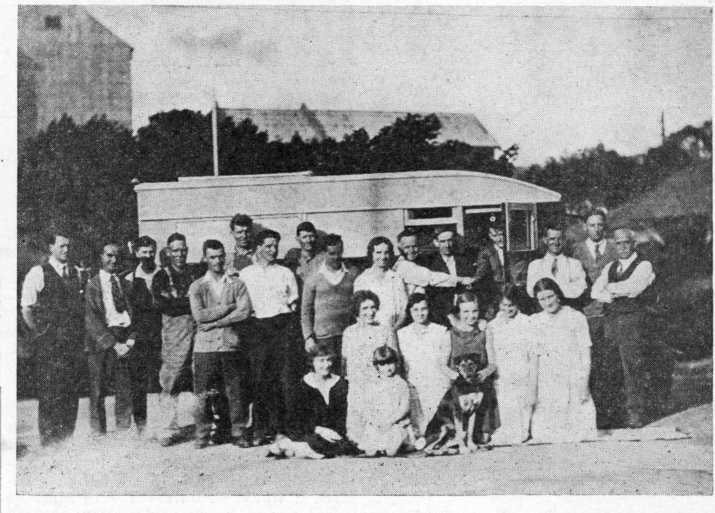The Bethel Family at Sydney, Australia, Saying Goodbye to Two Pioneers Setting Out Across the Continent.
CONVENTION REPORT
1931 INTERNATIONAL CONVENTION WATCH TOWER BIBLE AND TRACT SOCIETY
COLUMBUS, OHIO, JULY 26
164 Stations Linked by Wire and 300 Broadcast by Electrical Transcription
Our Lord had some great audiences when he was here in the flesh. We know that on one occasion he" ■preached to at least five thousand men besides women and children, for he fed that many after he had preached to them the good news of the Kingdom. We know that on another occasion he preached to at least four thousand men besides women and children, for he fed them too.
These things show us that our Lord had a remarkable voice. There is only once m a while a man here and there that can make himself heard by an audience that runs into the thousands, and when it gets into the four and five thousands he is quite lost in the involuntary hubbub that accompanies a great concourse of people.
Barely ten years ago the loud-speaker system was developed which enabled a speaker to reach any part of his audience, no matter how large it might be. This is done by amplifiers and loudspeakers, arranged so as to cover all parts of the auditoriums or grounds where the address itself is being delivered.
Judge Rutherford, Bible Scholar and World-Famed Radio Lecturer.
We Wonder What’s Up His Sleeve For 4 o’clock Today
At the same time the radio began to come in. Wonderful beyond description are the things that have been done and are being done over the radio in proclaiming the gospel of the Kingdom. The Lord is using it in the most stupendous way to break down prejudice and let the light of truth stream in.
First is the fact that the sixty-minute they are located and in the particular chain program, with Judge Rutherford’s portion of the work entrusted to them, own voice delivering the address from J For the coordinating circuit, 12 tele-the platform of the Coliseum in Colum-: graph coordinating circuits covering the bus, will be sent to millions of listeners ] country will be in use. For its own test-
throughout North America over the. ing purposes the telephone company’s largest wire-connected group of broad- J organization will have 20 wires in use.
Over a single radio station, if the peo- casting stations ever assembled for a pie are listening, a man might address ■ single program event in radio history, many times a million people at one time. ;
The 300' Transcription Stations
The Watch Tower Bible and Tract So-
Before such an opportunity
previous ■ • addition to the main pick-up point । ciety does not have a barrel that has no ■- - -‘Jin The Coliseum at Columbus the set-up ] bottom to it. It makes every dollar go J embraces 156 service points on the Bell J as far as possible. What it accomplishes
privileges of proclaiming the truth fade i
into insignificance. f d d i System lines and 8 private line points in ■ nrst Judge Kutneriord used one additlotl) making a total of 164 broad-
with its funds is the wonder and despair
station, now and then. That was a great privilege. Then it was our own station, WBBR; then several such stations were used more or less, and at length there were hook-ups, several stations tied together by telephone lines, all receiving and distributing the same message at the same time.
At Toronto, in 1927, the Watch Tower hook-up of 53 stations was, at that time, the largest in the history of radio; this was surpassed in 1928 at Detroit, where the Watch Tower hook-up of 103 stations was 26 more than any other up to that time.
What Is Taking Place Today
casting outlets for the full Columbus ; program. This of itself is much the
greatest hook-up in history.
broadcasting points, 147 are
Of these in the
United States, 15 in Canada, 1 in Cuba, i and 1 in Mexico.
To adequately care for the handling of this program through 165 broadcasting stations requires 24,700 miles of program circuits and 50,000 miles of co; ordinating telegraph circuits. At 250 J points along the way there are “boost! ers” or “repeaters” in which special । amplifying apparatus is employed to ! maintain the high standard of transmission of the program which is re
of its critics. There are financial limits to what it can do. It cannot hire all the broadcasting stations in the world at one time. They have other engagements; it would cost too much; the telephone and
telegraph much; it facilities technical
circuit alone would cost too would be beyond the present of even the most powerful organizations in the world to
What is taking place today is sum-; quired.
marized in a few words by the American At the time this Watchtower proTelephone and Telegraph Company in , gram is on the air there will be between its brief statement that “this particular 900 and 1,000 telegraph operators, network is the largest individual net- technical and repeater men, giving their work that has ever been on the air.” We personal attention to see to it that give some of the details. We know they everything goes smoothly in the par
will be of interest to our readers:
ticular section of the country in which
handle such an arrangement.
And so the Lord has provided the wonderful electrical transcription method for sending out a specially-made record of Judge Rutherford’s address from stations where, for one reason or another, the program cannot be sent out at the time it is given in Columbus.
Here, for instance, is the great Westinghouse station KDKA at Pittsburgh, with the associated stations WBZ and WBZA at Springfield and Boston. From KDKA a special transcription of the Columbus address will be broadcast at 2:15 p. m., July 26, and will be relayed
(Contimied on page 2, Col. 1, Top)
The conventioners at Columbus had a complete surprise yesterday afternoon, when Judge Rutherford unexpectedly appeared on the platform ahead of time to give them a few personal words of greeting. _ .
As he came down the aisle leading to the speaker’s platform the orchestra played and the great audience sang our greeting song, “Blest Be the Tie That Binds Our Hearts in Christian Love.” As he stepped out on the platform they arose enmasse and gave him the Watch Towei’ salute with their handkerchiefs.
It was an inspiring sight. It is estimated that there were nine thousand persons present, almost every seat occupied, with many standing at points of vantage. We give a verbatim report of Its words of greeting:
It has been some years since we had a convention here. A happy occasion was that! The Lord gave us many blessings, and without a knowledge of what we were actually doing the Lord used his people at that time to fulfil some prophecies. (A pause during which he tried out the microphones). I really came down here this afternoon to test out the microphones. For some months you have been looking forward to coming to this convention, and well you should. You have been expecting blessings of the Lord, and well you have desired them.
As I was saying before, some years ago we had a convention here, and although we were unaware of it, the Lord was using his people to have something to do with the fulfilment of prophecy which has made glad the heart of everyone who loves Jehovah. We have come for no idle purpose, and while, of course, I never know in advance what is going to happen, I believe this convention bids fair to be one of the most important of God’s people ever held on earth. We haven’t come here for a social good time. We haven’t come here merely to shake hands with one another and smile at one another, although I should be glad if you would do that to me all you like; but shake hands with others, if you wish for I haven’t the strength. We haven’t come here for idle gossip, because that has long since passed away with all those who are really devoted to the Lord. We have come here endeavoring better to understand what God will have us to do and do it with all our might.
I am glad to see the brethren with their coats off, because that means that you are here to work. If you sisters want to take your hats off, do that. There was a time when we thought you had to have your hat on in a meeting, but the Scriptures do not say anything of that kind. If you are going to preach or offer prayer in a meeting, then you
(Continued on page 2, Col. 1)
Judge Rutherford, Bible Scholar and World-Famed Radio Lecturer.
Millions Will Hear Judge Rutherford
(Continued from page 1, column 3) by short wave. WBZ and WBZA will also put on transcriptions.
At this moment we know that in the week beginning today there will be more than 300 of these electrical transcription stations broadcasting. This will bring the total up to at least 465 stations, which is inconceivably a greater presentation of a single message than was ever before undertaken on earth. As a matter of fact, based upon the best data we have at the present writing, this is more than five times as many stations as ever participated in any one broadcasting feature in history.
These 300 or more stations are in every part of the world, Europe, Australia, British Guiana, British West Indies, Hawaii, Alaska, Cuba, Canada and the United States. They will have a fifteen-minute transcription edition (electrical recording) of the Columbus Convention address of Judge Rutherford (in English) and will use it some time during the current week.
The people will get to hear what Judge Rutherford has to say. Six million folders have been printed and distributed from door to door inviting them to listen in. Some of you workers here at Columbus know where some of those folders went. . And the jjeojale of this part of Ohio will be listening in, whether they are on the Fair Grounds or not.
As a sample of the intensive manner in which publicity for a broadcast of this nature is projected on a nation-wide scale, the following is quoted from report of representative in St. Louis:
We have stamped 100,000 special radio folder announcements with name of stations broadcasting; also the time of program. Every one of the workers is behind this work and doing the utmost to advertise this hook-up. Distribution of these folders is taking place from as early as 4:00 a. m., all through the day and late into the night; the oldest worker being about 70, and the youngest 5.
To advertise this gigantic broadcast various and divers agencies are being employed. While through the streets of Columbus (Ohio) the “Sound-Truck” of Station WHK slowly winds its way with four horns atop its roof sending out in as many directions the invitation to hear Sunday’s program, the Goodyear blimp, with a special public-address system installed, is fulfilling the terms of a contract between its owners and the Los Angeles bureau of The Watch Tower by flying low over Los Angeles and nearby cities, so that announcement of the address On Sunday will be whispered occasionally when the announcer’s flow of breath lags.
To supplement the distribution of the
program as broadcast, for the benefit of thousands who do not as yet own receiving sets, provision has been made in parks and other public assembly places where loud-speaker installations will send the program to the gathered listeners. From Detroit (Mich.) comes this report: “We have engaged three radio automobiles equipped with amplifiers, and the three combined are capable of reaching fifty thousand people of more. We have scouted the parks and will place two at Belle Isle and one at Palmer Park. They will send to the park audiences, first, the chain broadcast; and subsequently the local station’s broadcast of the special transcription.”
In Boston (Mass.) arrangements were made with the city government to send the special broadcast to the thousands assembled on Sunday afternoon in Boston Common, by means of the public-address system in the Parkman bandstand. It is expected that between five and ten thousand will hear at that place.
In Alabama and Mississippi, where ownership of radio receiving sets is very low, arrangements have been made quite generally for such public gatherings to be served with this program by means of loud-speakers. At Mobile (Ala.), as an instance, arrangement has been made for use of the finest loud-speaker in Bienville Park; and a similar installation has been provided in Bay Minette (Ala.), in the Court House. Widest possible pub
If Anyone in North America Misses the Great Lecture Today It Will Not Be for Lack of Radio Stations
lic announcement of these arrangements has been made in each community.
In Cuba
Cuban station CMK, the largest in the island, and which each week broadcasts the transcription addresses of Judge Rutherford, has direct wire connection from Miami to Key West and thence by submarine cable to Havana, will broadcast the full hour’s program today, direct from the Coliseum in Columbus.
In Mexico
The largest station in Mexico, XED at Reynos, will carry the full hour’s program by direct line connection.
In Canada
The events in Canada leading up to this momentous occasion make quite an interesting story. It was last February that Judge Rutherford first made known the thrilling news that a general convention of the I. B. S. A. would be held at Columbus, Ohio, that the outstanding feature thereof would be the broadcasting world-wide of the message of Truth, and that Canadian stations would be included directly in the continent-wide I chain.
Immediately work was begun in arranging contracts with various stations in this country. At first it looked as if but four stations would be included in the chain, but the Lord arranged otherwise and the message is going forth over fifteen stations in Canada directly linked in the chain, and over many others by means of the electrical transcription “miniature”.
That the Lord is behind his people and directing them in all their ways is evidenced by the fact that, despite the wall of prejudice, arrangements were completed by which one or more stations in each province in Canada (Catholic Quebec alone excepted) were contracted with to be included in the chain hook-up. Among these was the Edmonton (Alta.) Journal station and the powerful gov-I ernment station CKY, located in Winni-I peg.
As the day of broadcast drew near the | interest therein grew until a number of ; stations offered to tap into the chain at no expense to the Society.
■ The enormous cost of running lines ! to far-away Sydney (Nova Scotia), on । the extreme eastern point of Canada, i made it first seem out of the question to । include that station, but great was the joy of the brethren there when word came forth from the head office that Sydney would be included in the chain. This made possible a coast-to-coast network in Canada reaching even the most remote sections of the country.
In Australasia
Stirred, in the gracious providence of Jehovah, by his intimate personal knowledge of some of the radio activities in the United States, the Society’s representative in Australia advises that on this day, in the largest broadcast yet arranged for Australasia, fifteen stations will participate in distributing the Columbus Convention address of Judge Rutherford; that land lines of total mileage of 5,000 will be used in connection with this broadcast, as well as a short-wave station. This program will be on the air July 26, at 7:45 p. m., Australian (Adelaide) time, equivalent of 5:15 a. m., Eastern Standard Time (July 26).
The Columbus Hook-up Is the Seventh
This is the seventh special Watchtower chain broadcast. Like five of the others that preceded, this network consists exclusively of lines leased for THE WATCH TOWER from the American telephone organization, no American commercial chain broadcasting system being in any way involved in the broadcast.
A number of broadcasting stations, appreciating that this is a non-commercial feature of highest public-interest value to their listeners/ not only hn've -e-UMvcod „ the required hour of comercial features (local or chain) previously scheduled, but have voluntarily offered to broadcast the program as delivered to them in the specian chain without making any charge for station time. Entire cost of delivery over lines of the telephone system to each station is borne by THE WATCH TOWER, and all arrangements with each station and with the telephone organization are made exclusively for THE WATCH TOWER by its own operating agency.
(Continued from Page 1, Col. k) can keep your hat on, for the apostle so states.
We have come here to bend our very best efforts to magnify the nam’e of Jehovah. This is our excuse and justification for being on earth at this time. The only reason we are here, having devoted ourselves absolutely to the Lord, our King, is that we wish to do that which is pleasing to the Lord, and not that which is pleasing to men. If everyone who loves the Lord is pleased with you, then you know that you are pleasing the Lord.
Tomorrow afternoon, at 4:00 o’clock, I expect to speak from this platform. I wanted to come down and see you a moment first and ask you all to kindly be here at that hour; not a few, but everyone who really loves Jehovah. I ask you to be here for the reason that tomorrow afternoon the convention will take up a matter for consideration which, in my opinion, is of tremendous importance to everyone on earth who really is devoted to Jehovah God and who wants to have part in the consideration of that. So please be here, everyone.
I am happy to know that we come to these conventions in these days for the purpose of enabling all to have some part in the service, some part in the consideration of what we have to do, and that you are here for that purpose. The Lord has been exceedingly good to us for the last seven years. He is always good to us, but he has spread his table abundantly with food in that time. All honor and all credit is due to him and to him it shall be given.
I didn’t come here to make a speech at this time and I wish the other brethren who have a part on the program to now come forward.
Yesterday morning at eleven o’clock the baptismal discourse of the convention was delivered by R. H. Barber in The Coliseum. Immediately after the discourse 104 men and 119 women were immersed at the Indianola swiming pool, at North Fourth Street and Eighteenth Avenue. From the discourse by Brother Barber we select a few pertinent points:
Jehovah made a covenant by sacrifice with Jesus. That which Jesus sacrificed was his perfect human life, given for the sins of the race. Jehovah invites invites a hundred and forty-four thousand others to unite with Jesus in this covenant. They too must sacrifice the right to live as perfect humans, in order that they might share with Jesus in his kingdom work.
Being imperfect, no member of the race I was acceptable as a sacrifice. Therefore Jehovah must first justify them. How is this done? A man learns that he is | a sinner ; accepts Jesus as his Redeemer and Savior, and unreservedly agrees to do God’s will. On the basis of his faith in Jesus, and his agreement to do God’s will, God justifies him, which means that he is right in Jehovah’s sight. Then he is accepted into the covenant with Jesus. If he responds to the call to the kingdom, his sacrifice is counted as a part of Jesus’ sacrifice. Thus Jehovah baptizes him into the death of Christ.
Water baptism is a symbol, picturing the fact that such a person has agreed to do God’s will unreservedly. His burial in water pictures the fact that Jehovah has buried him into Christ’s death. His lifting up out of the water pictures the fact that, henceforth, God counts him alive as a “new creature.”
Every convention today is a service convention. The remnant know that their work is a work of service, and they know what it is that the Lord wants them to do. From three to four yesterday afternoon there was a service discussion by regional service directors George Young, E. D. Orrell, L. Larson and J. C. Rainbow. We select portions of the talks on this occasion:
Jehovah’s servant is Christ Jesus and the members of his body. The servant bears testimony to Jehovah’s name and kingdom. Jesus, the head of the servant class, declared, “I must preach the kingdom of God . . . for hereunto am I sent”; and it said of him that “he went throughout every city and village preaching and showing the glad tidings of the kingdom of God.”
The apostles likewise witnessed “daily in the temple and in every house.”
Jehovah has now placed his King upon the throne. The Kingdom is here. Jehovah commands his witnesses to declare the Kingdom message, that the people may stand on his side and live.
The remnant, as part of God’s army, go forward from house to house and city to city declaring this Kingdom message. All over the earth, like “locusts,” these witnesses carry forward the witness of the Kingdom, vindicating Jehovah’s name.
The command from the throne is “Praise our God, all ye servants.” God’s witnesses, joining in this work of the hour, maintain their integrity, making glad the heart of Jehovah.
The “servant” class is now used to proclaim the imminent destruction of Satan, his wicked hosts invisible, and his wicked earthly agents; they must tell of the early removal of his entire evil system and of the way in which Jehovah shall be known to the people as their great God and Benefactor.
The witnesses of Jehovah now go forth joyfully giving the testimony in his appointed way, bearing the fruits of the Kingdom, and they have a glad part in the vindication of Jehovah’s name.
The greatest privilege of any living creature, spirit or human, is to be a servant of Jehovah, the Most High.
Owing to Satan’s rebellion, service for Jehovah on the earth has been done amidst the intense opposition of the Devil and those of his organization.
A Christian living in this day cannot keep silent and maintain his integrity with God, as the position we now occupy is in the LIGHT, with a clear view of the opposing armies. On the firing line is the place of safety and protection for the remnant, and thrilling indeed is the sight at present, in that we now see that victory is certain.
Only those of the ‘elect servant’ have the love of the truth and are willing servants, while some grow cold and indifferent, even oppose brethren and the method of proclaiming the truth. This should cause us to watch lest we fall into temptation, and to let no root of bitterness come into our hearts.
Soon the world will call upon the remnant for a message of comfort. Isaiah 60:3, 14 clearly reveals the fact that the Gentiles will come to thy LIGHT,’ also those that afflict and despise thee shall come unto thee and call thee, The city of the Lord, the Zion of the Holy One of Israel.
Very appropriately, the service discussion yesterday afternoon was topped off with a discussion by two other regional service directors, Anton Koerber and G. Y. McCormick. As a result of their experience and observation in the field they made the following general suggestions:
When accosted by police, use canvass, explaining that you are a minister of the gospel. If admonished to stop working, continue until arrested. Ascertain the charges, who the complainant is, and if officer has warrant.
If charge is legally filed postpone trial ten days; wire Society, who will advise you.
If trial is held immediately, then testify:
That you serve Jehovah, the Almighty God, and his Son Christ Jesus;
That the Watch Tower broadcasts the message of God’s kingdom and prints it in books, which you use as corrobora-
(Continued on page 8)
(Second Installment)
Yesterday We Took You to Visit the Brethren in South! America and Australia; Today We Jump Over to Europe. All Aboard!
The Witness Work In Austria
By Walter Voight
Walter Voight, Resident Manager.
According to the Treaty of Versailles in 1919, Austria has become a small country of hardly six million inhabitants. The former monarchy had fifty million inhabitants I
In Austria 94.4 per cent of the population is Catholic.
It was about ten years ago when the Society opened an office in, Austria to spread the Truth in this land and to give a witness to the honor of the name of Jehovah in this dark country, where the clergy keep particularly the country people in darkness. At that time a few classes were organized which have now increased to 22 in number.
The brethren are, very joyful and zealous and have distributed since 1924 one million books and booklets, most of them during the last few years. Aside from this, a large number of Golden Age copies and several million tracts and leaflets were put in the hands of the people.
We are receiving 6,000 copies of The
Golden Age of each issue for Austria. One can see that in Austria every family has one book or one booklet by Judge Rutherford. This great work was done by a comparatively small army of faithful soldiers of the Lord.
As the joy of the brethren has increased, the rage of the Devil has increased also; but his wrath is in vain, Jehovah has separated his people for his name and he knows how to preserve them.
Some years ago the Society wanted to be registered in Austria, but the Catholic priest Seipel was chancellor at that time and he turned down the request of the Society. Thereafter he lost his position, and the Society was registered last year.
Like other countries of Europe, the priests and preachers are the bitterest opponents of our work. They resort to lying, false witnessing, instigating arrests, and even mobbing to disturb our
I work and keep the people from getting I the truth.
| In Vienna itself we have the greatest ■ liberty. We called upon the chief of the ! city police and he told us that the law is on our side and that we should only call
। upon him in difficulties. Every case in Vienna has been decided in our favor.
In some sections where the brethren were held up by the police and were haled before the authorities, the brethren > were asked if our literature reaches ! those who have left the Catholic church. ! We answered, YES; and were told, “That’s good; now we will make a report which will make these dark men mad.” (The Catholic men in office are called the “dark” or “black” men by the people!)
Recently we used films and slides to illustrate our public lectures in many Austrian cities. The Devil tried to cause difficulties. When we had finished the preparations at a certain city, a decision of the authorities was handed to us that we could not give our illustrated lecture in that place, and other places where we were preparing to go were also included in this prohibiting measure.
We entered a sharp protest, through our attorney, and wrote that the authorities of this part of Austria are held responsible for all expenses that we had had in preparing for this exhibition. Then the decision was withdrawn, and people who became interested through the Photo-Drama have now begun to canvass with the books at several places.
The greatest difficulty with the authorities was encountered in Lienz, a city of 6,000 inhabitants, the capital of East-Tyrol.
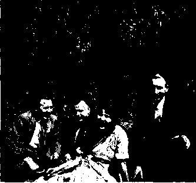The owner of the moving picture house, apparently at the behest of the clergy, had destroyed his own picture machine, although he was obliged by a contract to let us have his theater for the meeting. He had put up a poster that there would be no exhibition of the Photo-Drama because the apparatus was not in order. He had not counted with the fact that we had our own apparatus for the slides, and he then made a long face when we got things ready for the lecture. Seven policemen and a representative of the county government were present and
Vienna Locusts Ready for the Field. Can You Find Their Stings?
they tried a number of times to make protest against what was said. But the people were on our side and they laughed at the interference of the police.
The next night an official, who feared that we might say similar things to what we did when showing the slides about the Dark Ages, said to the speaker: “You must not say another word.” This in turn was made known to the public. Then the police forced the people to leave the hall. Four hundred, however, gave their addresses and, leaving the hall reluctantly, they said: “Now, we are going to leave the Catholic church.” A brother who was a policeman at that place was discharged, and he will now enter the pioneer service.
Since this happened in this dark corner where no one dared to preach the Truth before, we are having a large gathering every week. Whenever the Devil thinks he can cause difficulty, everything that he does is turned against him. By these happenings the brethren have been encouraged to spread the Truth with more zeal and energy than ever before.
In Austria there are now 22 classes, with about 600 class attendants, of wh:ch 233 are regular workers.
It is a joy to see the courage and the devotion of the brethren. We trust in the Lord that the opportunities for the witness work in this country will be still more favorable in the future.
By J. Knecht
In Belgium, as in other countries, some who had not received the love of the Truth were sifted out, especially during the years from 1918 to 1925, and now there remains a faithful remnant. Jehovah needs no one. He does not even need Belgian brethren to carry on the work here. Others have replaced the unfaithful. English, Swiss, Polish and French pioneers have come to do the work, and these are working in unity with the remnant here.
We now have ten pioneers, and others are about to enter the work. It is a real joy to see their zeal for the Lord.
A few days ago a Polish brother came to the office and said: “I am tired of the organization of the Devil and now I am going to serve the Lord wholly and wish to enroll as pioneer.”
Another Polish pioneer has kindled a fire of enthusiasm for the Truth in a whole section of the country. Whenever he enters a village, the priests run around like fools and their long black coats roll up the dust in the streets!
An English colporteur met a clergyman at a home who was very much excited. Threatening her with the police, he forbade her to work further. As well as the sister knew the language, she said smilingly: “I am not afraid of you or of the police.” Then the priest began to sweat for rage.
The mayor of Namur told the Swiss pioneers that they could not work there; but since his prohibition and a warning in the newspaper they are working with increased joy, because there is no law which can prevent their work.
Three auxiliary colporteurs between 60 and 70 years of age are working here, and one of them goes tq the market at Liege. This market is visited by many people and is very interesting. Our worker calls out the literature in 25 different languages. Many foreigners, whom we could not find otherwise, come and buy. His success is wonderful.
In the industrial sections of Belgium it is necessary to keep on hand books in 29 different languages. There are now three new Polish classes.
Belgium is wholly Catholic. The power and influence are in the hands of the clergy and they are responsible for the fact that a large part of the population can neither read nor write, but it is time to call out DELIVERANCE and many hear the message.
During the last two years the work in Belgium has increased much. The output in 1930 was four times as much as in 1929. During the first nine months of this fiscal year the total output of 1930 was overtopped by 10,500 books and booklets.
Bethel Home in Vienna.
The Society’s Office in Brussels, J. Knecht, Resident Manager, and the Rest of the Office Staff, His Wife.
Vienna Locusts Ready for the Field.
Can You Find Their Stings?
Walter Voight, Resident Manager.
The Bethel Family at Vienna.
Bethel Home in Vienna.
sms
The Society’s Office in Brussels, J. Knecht, Resident Manager, and the Rest of the Office Staff, His Wife.
For some time we have been able to use a broadcasting station once a week in Belgium. ,
There are five classes in Belgium, with an attendance of 51 brethren, half of whom are regular class workers.
The Belgian brethren send their greetings and wish to express their joy that they are united with all the anointed on earth.
By D. D. Neves
As you may know we are under a revolutionary government. In the beginning the people hoped that things would be better soon; but now we see the people continuing in their afflictions. There is a great crisis throughout the country. There is no remedy except the Lord’s kingdom, and this is at hand.
D. D. Neves, Resident Manager.
Our great privilege is to notify the people about the Lord’s remedy. The condition of the country does not permit the placing of many pieces of literature; almost all pieces of literature we place are booklets.
We have seven classes, but not all are organized for service. Four clases are witnessing from door to door, but not all members of these classes. However, in all classes we have some members working with the literature. Here in S. Paulo city we have two classes, Portuguesespeaking people are one class; the other are of Hungarian-speaking people; and both classes have workers in the service from house to house, with some results. A German class in Curityba is active in the witness with literature. Two classes in Rio de Janeiro have some members doing good service with the books. We hope henceforth to have all classes organized for service.
Some months ago I made a visit to several cities in S. Paulo state, where the people heard the message and bought literature. These trips would be very good if we could effect them in each state. Brazil is great, and traveling is expensive. We are doing our best and hoping in time to visit each city, giving the witness.
The Lord’s work has now its center in S. Paulo city, about a million population. Our branch is in a good district, but where the people are very poor. Here we rent a part of a house for our depot and
The Bethel Family at Sao Paulo.
Bethel Home in Sao Paulo, Brazil.
staff and where our printing press functions. One worker- lives in the same house, but the manager lives in another house, where the service of translation and dispatch of letters and literature is done. The printing press prepares the edition of the Brazilian Watch Tower, tracts and handbills.
Now we are four, and even so we can-
The Office Staff at Sao Paulo and the
WATCH
not do all the service as promptly as we desire. But the service is marching on, being better each day. All of us realize our opportunity to cooperate with you and the Lord, and we are very glad for all the blessings of the Lord.
Every Sunday some workers of four classes go out with literature from door to door testifying for Jehovah and his King. It is the most important service. Doing so we have opportunity to see directly the condition of the people. Some have no money to buy literature, then we give some tracts gratis. Others are against the Lord’s message. But others
are attentive toward the explanation and buy some pieces of literature.
We have actually about thirty class workers every Sunday in the field. All ’nterested ones are invited to go out in the service. Our purpose is to prepare classes only for service. Some are new in the service. Others find the service very difficult. Others are entering in. God is blessing all his servants who are confessing his name and glory to the people. The result is some become interested in the Truth.
Two thousand handbills are distributed every week, inviting the people to the public lectures every Sunday. Some newspapers also invite the people and give reports of the lectures. For the first time in Brazil a reporter came to the Society’s representative, asking information ai;out our service in the world, and our doctrines. All information requested was given and the newspaper published freely. Many were interested as a result of the report given in the newspaper.
A lecture was held about “Spiritism”; and the newspapers mentioned it as it were for spiritism. Our hall was full; almost all were spiritists. Some interrupted the lecture, but order was restored and the speaker continued unto the end. Some were interested from that day.
Now we are looking for the “International Serv’ce Convention Week.” I invited the classes throughout the country to be ready for that glorious time. May Jehovah bless you with many bless-) ings throughout the earth.
Printing Equipment for the Brazilian TOWER.
The Witness Work in British Guiana, S. America
By Fred Phillips, Resident Manager
As the countries of the world go, British Guiana is but a very little one. The total population of the country is but 304,412, of whom over one-third, or 125,204, are East Indians, and a like number are Negroes. There are 12,166 Portuguese in the country, and 4,558 whites of other nationalities. The remainder of th^ population are Chinese and mixed races.
For the last six years trade conditions in British Guiana have been deplorable. Exports in 1029 were less than two-thirds what they were in 1926, and the earnings of the people have so fallen i off that the imports are only about half । what they were six years ago.
; Georgetown, our capital, is only a lit-i tie city of 57,000 population. Most of I the interest in the truth centers in the colored people that make their home I here. Illiteracy among the East Indians is high, yet 60 per cent of all the people can read, and in spite of the prevailing poverty we are accomplishing something and the work is spreading to the sugar and rice plantations and to the gold mines that lie back from the coast.
We are putting out more than 5,000 books and booklets a year, and while that is not much, it is considerable for us, for we are but few. There are three colporteurs regularly in the field, and twenty workers. The average number of those who are weekly in the service is fourteen.
| One of our brothers has visited remote parts of British Guiana. At great personal inconvenience, and sometimes in actual danger, he has crossed waterfalls, traveled for days in a small open boat with the blistering sun overhead, , and tramped for miles along narrow
paths flanked with dense tropical undergrowth.
This was done that the workers in the diamond and gold mining districts of the Potaro and Mazaruni rivers, on the fringe of the Guiana forest, and the workers in the timber grants of the Pomeroon might have a witness to the truth. He also worked the head waters of the Demerara and Essequibo rivers. The regular workers are on the job in the city and near-by villages as often as possible, and thankful to our great God for the privileges which are theirs. We remember you all in prayer and ask to be remembered in yours.
The Witness Work in Canada and Newfoundland
By W. F. Salter
Ever since the year 1929 Canada and Newfoundland, in common with the rest of the world, have been gradually getting deeper and deeper into the mire, both economically and socially. The number of unemployed has been rapidly increasing until today tens of thousands are out of work and in need.
The situation is somewhat ironical; elevators are full of grain and the people are hungry; the factories are full of goods and the people are without these necessities; the rich are getting richer and the poor are getting poorer; and the more the so-called leaders of affairs try to adjust the situation, the more hopeless it becomes and the more it is manifest that the only hope is God’s kingdom.
While the general depression has brought about much oppression which is daily, yea, almost hourly, becoming heavier and more difficult for the people to bear, it is gratifying indeed to note, and worthy of praise to the great Jehovah God, that his people are kept under the shadow of his hand, in the secret place of the Most High, and are permitted to go on day by day giving his witness in ever-increasing measure.
The witness given in Canada and Newfoundland during 1930 surpassed that of any previous year, notwithstanding the fact that 1930 was the most trying year :n the history of these lands, and while the current year is one in which times are even more difficult, again it is wonderful to note that the Lord’s witness is much in advance of the corresponding period of last year.
Jehovah’s little army of faithful servants in this vast territory, which extends for more than 4,000 miles from east to west, has been carrying on with burning zeal the work he has graciously committed to their charge and they have boldly and fearlessly given, and continue to give, his witness against this present wicked order of things.
Walter F. Salter, Resident Manager.
During 1930 over 190 service conventions were held, at which the friends assembled primarily for the purpose of taking the message from door to door, meetings being held in the evenings for r discussion of the Lord’s Word that the brethren might be built up and encouraged. As a result a tremendous witness was given in the rural districts and even in the most remote sections of the country.
So enthusiastic were the friends over the conventions held last year that their response to a suggestion that a similar policy be adopted this year has resulted in arrangements being completed for at least 209 conventions. These are divided
I!!!!!
Bethel Home in Sao Paulo, Brazil.
D. D. Neves, Resident Manager.
The Office Staff at Sao Paulo and the Printing Equipment for the Brazilian WATCH TOWER.
The Bethel Family at Sao Paulo.
Walter F. Salter, Resident Manager.
A Corner of the Society’s Office in Toronto.
into four series, and a regional service director has been placed in charge of each series to serve as chairman and with general authority to direct the convention activities.
The work is so organized that a number of automobiles are in attendance at
The Society’s Atlantic Coast Boat Is an Icebreaker Literally and Otherwise.
each convention and these are used to convey the workers to the rural territory and to the towns and villages where it has been arranged for them to give the witness. To meet the demand for literature arrangements have also been made for a house-car to travel with each series as a vehicle for conveying a large supply of books and booklets, and it is also utilized in the service during the witnessing hours. Words can scarcely express the joy and strength the friends are deriving from this feature of the service as evidenced by their testimonies, both written and verbal.
In keeping with the onward march and growth of the Lord’s kingdom upon the earth the little army of colporteurs m this country is also increasing, and it is a source of much joy to note that there are now in the colporteur field in Canada and Newfoundland 165, as compared with 112 at this time last year. While this army is not great in number, it is a mighty power in the hand of the Lord in carrying on the work he has willed shall be done in this our day.
It seems very manifest that no phase of the Lord’s service is more richly blessed than the colporteur work, and the pioneer field in particular. It is a phase wherein those engaged are called upon time and again to put their whole trust in him, with the result that they have abounding evidence of his continued 1 protection and watchcare over them. .
A pioneer colporteur, who had been passing through some trying experiences in the field, recently wrote us as follows: “Neither of us knew a soul here, and of course we had only the Lord to depend on, which is at all times sufficient to any of the anointed, and I knew he was going to take care of us both. Both Sister ------ and I could see his guidance
in every move; it was so manifest even to the choosing of our room . . . Honestly, the more we have to depend upon the Lord for, the stronger we are in faith. In all the years I have been in the truth I have never really appreciated this as much as I have since becoming a colporteur.”
In connection with the activities of the colporteurs and class workers a great number of automobiles have been more or less continually in use; in fact, it would not have been possible to have ac-
complished such an extensive witness without them. But, in addition to this means of transportation, in order to reach those living along the coasts, it has been necessary to use ships.
Whoa, Molly! That’s All It Takes to Stop This Canadian Wintertime Express for the Colporteur’s Next Witness.
in no other way, for traveling by boat is the only means of transportation.
: What is true of that territory is likewise true of the long 7,000-mile coast of British Columbia. For this territory another boat was purchased, and splendid results have been obtained, many hearing the message for the first time. This particular phase of the service has naturally been fraught with great difficulties and carried on under most peril-
Here Is the Society’s Boat for Newfoundland and the Canadian Atlantic Coast Places.
ous conditions. The following is an in-teresfng item from the report of one of the boat captains:
“In many ways the work here on the British Columbia coast is unusual and truly of a pioneer nature. Many small places are unknown so far as the maps are concerned, a number of inlets and bays being uncharted or at the best very poorly so, and one can never say with i certainty where we will be on a given | date. In some waters it is not safe to travel after dark, which makes our days very short, an[l storms, too, delay our progress. On the whole, however, our Master’s guidance and protection have been marvelous in our eyes, and when the winds have begun to blow we have always found ourselves near a good harbor, with plenty of work to keep us busy until the storm had calmed. We find the people more and more rapidly lining up either for or against the message, and we have many friends. Generally speaking, they are very ready to listen and have a desire to investigate for them-

This Society’s Motor Boat Carries the Witness to All Canadian Pacific Coast and Alaskan Cities and Wilderness Places.
The Bethel Family at Toronto. .
Three years ago this branch of the । selves. Those who are able to get the service was inaugurated to cover the | Watchtower programs express their coasts of Newfoundland and Labrador, I deep appreciation of them. Recently I and a splendid work was accomplished, called on a man who had obtained the to the joy and comfort of the people. It i first three bound books from me some was a witness that could have been given months ago. He said he had read them

A Corner of the Society’s Office in Toronto.
, Here Is the Society’s Boat for Newfoundland and the Canadian Atlantic Coast Places.
The Society’s Atlantic Coast Boat Is an Icebreaker Literally and Otherwise.
Whoa, Molly! That’s All It Takes to Stop This Canadian Wintertime Express for the Colporteur’s Next Witness.
This Society’s Motor Boat Carries the Witness to All Canadian Pacific Coast and Alaskan Cities and Wilderness Places.
at least three times, and he took the rest of the set, a Bible, and a Golden Age subscription. Surely the Lord’s blessings on the witness work are very marked at this time and ours is a marvelous privilege to have part therein.”
In full support of his army the light and power of the Lord is ever manifest as he, as it were, goes on in advance, breaking down prejudice and opening the way for his messengers by means of the radio. It is gratifying to note that in Canada and Newfoundland there are now 21 stations broadcasting the message of truth. This service has been improved beyond expression by the recently changed policy of the Society of using electrical transcripts of Brother Rutherford’s own voice speaking forth with power and might the message of the hour.
While we cannot fully comprehend the full extent to which this mighty instrument of the Lord, which he has graciously placed in the hands of his people, is being used by him, we do know from the testimony of the public through the workers that a great and a wonderful work is being accomplished. The large number of listeners-in can to some degree be appreciated by the fact that there are radio receiving sets in almost one-third of the homes in this country.
It might naturally be supposed that everyone would rejoice to hear the message and to see it going forth, but that is far from being the case, it being still true that “the darkness hateth the light,” and as a consequence there has been and still is tremendous opposition to the Lord’s faithful witnesses.
Satan is relentless in his effort to stop the witness work, and time and time aga'n, through his dunes the priests and preachers, he has called upon the civil authorities to molest our brethren, arresting them and haling them before magistrates and judges. But it is a source of deen comfort and joy to note how the Lord has almost without exception given the victory to his people. Case upon case has been fought out and the verdict rendered, “Not guilty.” In some parts of the land, despite the repeated decisions of the judges, the priests continue the opposition through the police department.
This was particularly true in Montreal, Quebec, and it became so intolerable that the Society finally decided to institute an action against the City of Montreal for damages and d;d so on behalf of one of the colporteurs who had been arrested there. After many months of adjourning the case the City of Montreal recently offered to make a settlement out of court, agreeing to pay $75 as damages and $50 toward costs, which offer was accepted.
Marvelous indeei is it to note on every hand the signs of the rapid annroach of the end of all devilish things. We see the nation being gathered together to the Battle of God Almighty, and the witness that must be made be’ng made by God’s faithful remnant class, and the promise is that when that is finished then the end shall come, the church shall be delivered and mankind released from their bondage. And so his people pray with a full assurance of faith, “Thy Kingdom come,” knowing that ere long that kingdom will be fully established in power and great glory to the vindication of his word and name.
The Witness Work in Czechoslovakia
By the Resident Manager '
We here in Czechoslovakia are in one of the newest and yet one of the oldest countries in the world. Though Bohemia had its own king for many hundreds of years prior to 1620, yet in that year it was swallowed up by Austria and had no separate existence until it emerged as a republic in 1918, in the breaking up of the Austro-Hungarian monarchy, and took its present name.
This is the land of Huss, and whoever, like John Huss, has raised his voice against the Roman Catholic church, has been an object of persecution. In 1921, out of a population of 13,613,172, the number of Roman Catholics was 10,384,-833. Protestants were put down as 990,-
. , Sometimes it seems preferable to say
319. The remainder of the population ; “last things first” and to act accordingly, was made up of Jews, Greek Catholics,1 In giving a review of the British work Russian Orthodox and .others. This will j the outstanding feature is the visit of give you some idea of the problems with I Brother Rutherford to London and the which we are confronted. London convention
________ _____________ which was held in
In size Czechoslovakia is about the; connection with his visit. It has ever i
same as your state of Illinois.
,________ _________ the last convention position to do the work of the Lord as
parts which prior to the World War ; has been the best held, and this applies ’ ”■ ’ ’
were in Germany 97 per cent of the peo-pie can read and write, but in Slovakia proper, wh'ch was part of the Austrian empire, only 85 per cent can read and write, while in Ruthenia fully one-half are without education of any kind. This is what the Austrian Empire and the Roman Catholic church did to the poor people under their care.
Now it happens that in Czechoslovakia most of the consecrated live in districts where the standard of education is very low. As many of these friends are themselves unable to read or write, and oftentimes are living in conditions of utmost poverty, and do not have proper clothing besides their frocks, they are generally not in position to perform effective work.
Nevertheless, Jehovah has . richly blessed his work in Czechoslovakia. The number of workers has increased by 50 per cent. German brethren (from Germany) have come in as pioneers and have done excellent work. Other districts near the German border have been worked by German classes. Very frequently these German brethren have been arrested, but all the cases against them have been satisfactorily settled.
Ml K II
to
Just
The Bethel Family at London. See ’em Grinning? The Chief Had Finished Telling Them Something in the “Colored Language.”
The literature for Czechoslovakia is manufactured at the Magdeburg plant. Besides German and Slovakian languages, there are 745,531 Hungarians in Czechoslovakia, 75,853 Poles and some Rumanians. Some effort is made to reach all of these. The brethren continue to press the work with zeal, and the results show the Lord’s blessing. The people are waking up. Of late years there has been a determined stand for religious liberty. All this has been helpful to us in our work. The people are now ready to listen as never before.
The Witness Work in Great Britain
In the . seemed to be that
By J. Hemery, Resident Manager to the present case.
But there is a difference to be noted in respect to the recent convention: it is this, that there is no possible question that the convention recently held in London was the best and most profitable that we have had in this part of the field.
The circumstances of the convention,
the great expectancy, and the addresses given by Brother Rutherford, with the fact that there was an exceptional public meeting, all went to make the convention an outstanding feature. Undoubtedly the Lord blessed the convention as it passed, and he will assuredly bless the memory and the result of the gathering to the furtherance of his work.
But the London convention was really one of two that the British friends enjoyed at this time, for no less than 800 British brethren went to the Paris convention. This was a new experience, for nothing of the kind has taken place before.
Evidently it was the Lord’s will that the British friends should have these experiences and should realize the unity of those of other languages of like precious faith. The journey to Paris and the sharing of the work was a life’s event to many who went. It was much enjoyed and there was much enthusiasm. When the two trains which carried the i party from St. Pancras station (London) j to Tilbury had left the station, and the I
friends who had been seeing the party off were coming away, one railway man
said to a sister, “What is all this crowd?” She replied, “It is God’s organization.”;
What the man made out of the reply we do not know, but the answer, so unusual, indicates what was in the minds of the many who went. The crowd of 800 brethren went to Paris, not to enjoy the pleasures of a journey and of a
city strange to them, but to take a share in the work of giving a witness to the !
in the work of
city.
These things unity to which remnant in this
are an indication of the that part of the Lord’s country has approached.
Never in the history of the “Truth,” nor of the work of the Lord as it has been disclosed to his people in the past years, has there been such a clear perception of the purpose of the Lord in giving the truth, nor so purposeful a dis-discarded it, there is a determination more definitely expressed than ever to hold to the truth as it is revealed in the Lord’s appointed way to serve the Lord by it, and thus to seek to be obedient in all things to every manifestation of his will.
is now manifest amongst his people.
It is a pleasure to be able to say that despite the fact that there are things j
which would discourage, if faith were i small, such as the general poverty of many of the people, and the hard times which they experience, and the opposition of those who love this present evil world, both of organized religion and of those who, having had the truth, have
There are 260 classes and 100 sharpshooters engaged in the work. The number of brethren holding the necessary permits is 4,900. The weekly workers average 2,700, and it is now usual to have over 4,000 out on campaign weeks.
During the past twelve months the classes and the sharpshooters have placed about 613,000 pieces of literature, and have given well over three million testimonies. The classes have an assignment of about five million homes on which to call, and the reports which are being received lead to the expectation that this year will see at least four million testimonies given to these homes.
The average number of whole-time colporteurs in active service is 180. A considerable number of the brethren who have been engaged with us have left for other countries. We are glad to know that these who have had experience in the work are now being used in countries where the work is more difficult. All together, 55 colporteurs have left us for service in France and other countries.
In this crowded country, particularly in England, the colporteurs and the service workers are often in very close touch one with another. Between these services, including the auxiliary colporteurs, almost every house in the island gets a witness during the twelve months.
The west coast of Scotland is difficult territory, but the barren west coast of Ireland is still more difficult; but even these, including the wildest and most barren portions, have their witness. At the other extreme the centers of the large cities have had a special witness. The business houses have been canvassed by special sets of workers, and this work has proved very profitable.
This army of the Lord, which includes all the true brethren, and which is almost synonymous with those who hold permits, works as one unity and with one desire. Forgetting the things of the past they seek to do that which the Lord has laid before them, and while there is the looking forward in faith to the future, it is not that there is a looking forward to a reward which is to come, but to the privilege of being included amongst those who are to be faithful to the end.
The outlook for the future of the work is promising. Though the majority of the people are careless as to their responsibility towards God, and thoughtless about their own responsibility towards him, yet there is in these countries a great number of God-fearing people who are shocked at the attitude which the clergy of all denominations take towards the Bible.
Many of these will surely be touched by the witness which God is giving to himself by the books. Besides this there are greater numbers of those who are ready to purchase when the books are presented to them. We are confident that there is a great outlook for the books already published and for the further messages which God will surely send through his people.
In the immediate future we look forward to the radiation of the spirit of service which will come from Columbus. Arrangements are made for seven local conventions in the spread-out service conventions in connection with the Columbus week.
i For all these privileges we thank the j Lord, and with heart and mind expect, as I a part of the Lord’s army, to take a share with all others of like precious faith and service.
Last night, and Friday night also, several thousand conventioners remained after the concluding discourses of the day to hear the Watchtower programs broadcast every evening during the convention from the two Columbus stations, WCAH and WAIU.
Everything on this program, from announcing to music, is furnished by members of the staff of the Society’s radio station in Brooklyn, WBBR. Those who listened agreed that the music is of a superior class. Reports of citizens of Columbus, who listened in their homes, are that the reception was good and the program very good.
The Radio Convention Committee is trying to serve not only the conventioners but the general public of Columbus with the best programs on the air.
On Friday night J. C. Watt delivered a lecture on “Who Is Jehovah” and E. Keller used “Divine Prophecy” as his subject last night.
The Bethel Family at London. See ’em Grinning? The Chief Had Just Finished Telling Them Something in the “Colored Language.”
Our Thirty-six-Acre Farm “Watch Tower” in New York City Accommodates W B B R and Supplies the Food for the Bethel Family.
The Head Farmer in a Vantage Point for an Occasional Check-up of the
Watermelon Patch.
Come with us for a little while and see what the Lord has done for his people on Staten Island. It is impossible to consider what has happened there without realizing the Lord’s deep in, terest in and watchcare over his work.
Brother Rutherford was one of the first to foresee the value of the Radio as a means of proclaiming the truth. He knew that it must be away from the great steel structures of New York city and Brooklyn in order to get the best results, and yet it must be near enough to be of easy access.
If a place could be found on Staten Island, that would be the most desirable location. Though still suburban, or even rural in spots, it is in New York city, and will soon be tapped by subway lines projected under the Narrows, which will
Our Own Roadway Leading Back to the House.
about the two great shafts. To comply with regulations of the air mail service, these shafts are now illuminated with red lights at night, at the top, two-thirds of the way up, and one-third of the way up.
From the antennae which are stretched between those two masts more truth regarding God’s Word and God’s Kingdom has gone vibrating into the ether than from any other spot on earth. God’s blessing has been upon WBBR and its work. Today its programs are unequaled in musical and other features by any other station in the land.
Many of you have seen the radio book containing views of WBBR. You will find a lot more of them in this issue. You are interested in the sending plant of a great radio station; certainly. But you already know about that. In this we want to tell you of something else that we have at WBBR that you may not have heard so much about, and that is
Roses and Other Flowers Are Planted in Comers and Places not Good for Spinach and Cabbages.
about the big Watch Tower garden.
Of course, the first part of the woods to be cleared was that whereon now stand the WBBR administration and power buildings and the sending masts. But as soon thereafter as it could be done seven acres were cleared for a garden, and buildings were erected wherein are now housed 1,200 chickens, 150 ducks, some geese and other live stock. The buildings comprise six large chicken houses and three large round brooder houses.
Four members of the Bethel family work the WBBR garden, and in summer raise for the Bethel table great quantities of tomatoes, lettuce, spinach, rhubarb, Swiss chard, onions, white radishes, red radishes, beets, parsnips, kohlrabi, string beans, turnips, parsley, carrots,
Looks Like a Good Crop Is Coming On.

Tomato Vines Are like the Lord’s People: They Need Pruning that They Might Bring Forth More Fruit.
enable any part of it to be reached in an hour from the Bethel home.
At first no place could be found that was large enough for a radio station and small enough in price for the Watch Tower pocketbook. Having shown all the places he thought would suit, the real estate operator said, “I have just one more place, 36 acres, down in the woods at Huguenot Park; I do not suppose you would want that; but I can give you a very low price on it.” It was just what Brother Rutherford was looking for, and the deal was closed on the spot.
Some of the first settlers of Huguenot Park were Huguenots; hence the name. It is one of the oldest settlements on the island. The oldest church on the island is a Methodist structure standing at the corner of the WBBR property.
As one comes down from New York on the Staten Island Railway, the great wooden masts of WBBR (the highest wooden radio masts in existence, 225 feet) are visible five miles away. The forest beneath them looks like a hedge
Perhaps It’s Another Tower Article in the Making.
peppers, squash, white cabbage, red cabbage, sweet corn, leeks, celery, endive, oyster plant, egg plant, kale, cucumbers and grapes.
During the season, beginning with June, seventy-five bushels of this food is sent to the Bethel table twice a week. Last year the garden not only raised an abundance of the finest tomatoes for the two hundred hungry boys to eat in the natural state, but a surplus of 3,000 quarts was canned for winter use. The garden also supplied the family with all the cabbage it required for use in the fresh state, and 200 gallons of sauerkraut were put up.
At this point it may as well be mentioned that in the winter these same garden workers operate a garden in Florida, back from Miami, and once a week from the time the WBBR garden runs out until it is producing again this Florida garden sends seventy-five bushels of food, including oranges, preserves and other products peculiar to Florida, consigned to the Bethel at Brooklyn. This food leaves Miami by Clyde line steamer
The Head Farmer in a Vantage Point for an Occasional Check-up of the Watermelon Patch.

The House, from the North.
Roses and Other Flowers Are Planted in Comers and Places not Good for Spinach and Cabbages.
Our Own Roadway Leading Back to the House.
Looks Like a Good Crop Is Coming On.
Tomato Vines Are like the Lord's People: They Need Pruning that They Might Bring Forth More Fruit.
Perhaps It’s Another Tower Article in the Making.
every Tuesday and is delivered at the Bethel every Friday, crisp, fresh and in i good condition.
We wonder if the Watch Tower workers realize what a job it is to feed 200 young men that are handling books all day. Do you know that the rolls of paper which these boys handle weigh 1000 pounds and that the cartons of books which they handle all day weigh 45 pounds apiece? The making of books is hard work, and the boys need good food and plenty of it. And they get it at the Bethel.
While we are on this subject of food we just barely mention the bread. The finest, wheat is bought in car lots and kept in a big bin where it is as clean as the snow. When flour is needed to make bread it is ground on the premises, and the bread is the best in the world. It contains all the grain, every bit of it. It is whole wheat bread in the fullest sense, of the word. Nothing is cooked in aluminum. As a result of having the right kind of food, cooked in the right way, the Bethel workers are seldom or never sick.
Now just see what the Lord did for his people when he caused the purchase and improvement of the WBBR property
Above Meat Fine to Eat
and Feathers for Bethel Pillows.
Below-;—Just a Few of the Twelve Hundred Egg Factories that K^ep Workers Supplied with Omelet. the Lord seems to be saying to all of his people, If you can’t keep up with the procession, get out of the way and let somebody else fall in line who believes in the Lord’s way of doing things and is willing to do his part. If that part happens to be running a chicken house, then it should be run as unto the Lord. And the same with everything else, of course.
Below—The Bethel Family’s Competitor for the Milk Supply Gets His Share First.
Greets Conventioners (Continued from page 2) tive proof in your testimony as a preacher of God;
That the Watch Tower is incorporated l is a religious, benevolent and charitable >rganization and is exempt from taxa-’on;
That the books belong to Society until >laced;
That the cost of producing the books ’ more than is taken in, resulting in a large deficit made up by voluntary contributions;
That the work is done to glorify Jehovah and bring his blessings to the people.
Present the books in evidence. Use Watch Tower catalogue.
Always ask Jehovah’s guidance.
I If case is decided against you, ap-
at Huguenot Park. All the other big radio stations have had to follow WBBR’s example and get out of New York proper. Some have gone far out on Long Island, and some far out in New Jersey.
But WBBR remains within the city limits, easily accessible, and yet far enough away from the great steel structures to operate with entire satisfaction to its hearers. The property is increasing in value by leaps and bounds. Today it is worth five times what was paid for it, and when the subway is completed it will be worth ten times what was paid for it.
And meantime it is providing, from a garden in New York City itself, just the food which is needed by the bodies of the young men that are operating the best organized printing plant in the world. Does not that show the Lord’s blessing upon Brother Rutherford and upon the choice which he made of a location for WBBR? To us the answer is most emphatically Yes. We think yours will be the same.
The gardens at WBBR and outside of Miami are operated on a strictly business basis. They receive credit for everything shipped. The credits are the wholesale prices for the day of receipt, and if anything comes too loosely or too tightly packed the same deductions from the credit are made as would be the case if the goods were bought from outsiders. When the season is in full swing the
The Carrot and String Bean Sectors.
credits to the garden account run as high as $400 per month.
Besides the fruits and vegetables grown, there are receipts of eggs, butter, milk, chickens, ducks and geese, all very acceptable on the table in their season. The chicken houses are run on the same up-to-the-minute system as the gardens. Lights go on and the hens start to work at three o’clock in the morning. Their business is to lay eggs, and the longer hours they work the more eggs they lay. The chicken houses are lighted with glass which admits the sun’s ultra-violet rays. That makes the chickens develop rapidly and the results from a given amount of food are greater.
We don’t live in 1831; we live in 1931; and none of the 1831 methods are used in the Lord’s work today. In substance peal decision. If in your favor, go on your way rejoicing.
The Saturday evening discourse by J. C. Watt was based upon the Watch Tower of January 1, 1931, bearing the above title. You who have the Watch Towers in your home can get the whole vtory. We can give in this space but a ittle of Brother Watt’s remarks upon it:
Jesus was hated; not by the common neople (they heard him gladly), but by the influential factors, particularly the clergy, whose hypocrisy he unmasked and whose duplicity he exposed. He was a faithful and true witness. He sent forth his disciples to continue the witness he began, and which would be com-nleted by the remnant in our day. As his representatives, they must and will deliver it, and that without compromise.
The discourses Friday night by W. E. Van Amburgh and G. H. Draper were based upon the Watch Tower articles on the above subject which appeared in the issues of February 1,1931, February 15, 1931, and March 1, 1931. We give brief summaries of some of the points made.
The antitypical Zerubbabel is now building the antitypical temple and the glory of it will exceed anything ever known. And now, just before its completion, great joy and praise fill the hearts of all God’s covenanted children, as they present themselves at the anti-typ'cal festal sacrifice. “Let them sacrifice the sacrifices of thanksgiving, and declare his works with rejoicing.”
Speaker’s Studio at WBBR.
Main Studio at WBBR and the Watch Tower Orchestra.
Above Meat Fine to Eat and Feathers for Bethel Pillows.
The Carrot and String Bean Sectors.
CONVENTION REPORT
1931 INTERNATIONAL CONVENTION WATCH TOWER BIBLE AND TRACT SOCIETY
COLUMBUS, OHIO, JULY 28
Judge Rutherford Warns Christendom of Its Impending Destruction.
“Jehovah’s Witnesses”
Conclusive Bible Proofs Presented.
HEARD BY MILLIONS.
The only thing that remotely compares with what took place in The Coliseum at Columbus on Sunday, July 26, is something that occurred, probably in the plains of Mesopotamia, more than five thousand years ago, and that was merely a picture of what was to occur in the year of our Lord one thousand nine hundred and thirty-one.
There were only a few thousand peo-.....pie in the earth in the days of Noah, were"’small; the children were few and far apart; there was no need to roam; there was plenty of room for everybody in the neighborhood where the first man was ejected from the garden of Eden. When Noah warned the world of an impending flood he reached, directly or indirectly, about all the human family. And the good and evil angels knew about it. They knew that he was the divinely commissioned mouthpiece of Almighty God.
Noah’s declaration of the purposes of God came true. It was not because Noah uttered them; it was because they came backed with the authority of the Maker of the universe, the Creator and Sustainer of heaven and earth. And it was the Son of God who said, “As it was in the days of Noah, even so shall it be in the days of the son of man.”
If there was any doubt about just what that text meant in the past there is no doubt about it now. It was fulfilled at Columbus on July twenty-sixth, when Judge Rutherford told the whole world, Christendom, all the civilized nations, that because they have presumed to call themselves by the name of Jehovah God, and to call upon his name, and yet have declined to be governed by the laws which have come forth from the only fountain of authority in the universe, therefore their end draws on apace. The flood of God’s wrath, not a literal flood, but that which the flood represents, the righteous judgment of an indignant and
The Thousands That Could Not Get Into the Coliseum Were Accommodated in the Grandstand, Dining Room, and on the Grounds, Whither the Public Address System Carried Judge Rutherford’s Voice.
Judge Rutherford Hands Over His Speech to Representatives of the Press.
offended Deity, is about to sweep them away.
Try to picture the scene of Noah addressing all the sons of Adam and warning them that their end has come (unless they get into the ark of safety). Then, in a moment, swing your mind five thousand years into the future, into the great day of Jehovah God and see the antitype fulfilling before your eyes.
The radio was reserved by the Lord for just such a day; the loud-speaker was reserved for just such a day; the telegraph and telephone were reserved for just such a day. Before Christendom should fall, and be utterly destroyed, He would serve such notice, that future ages would know that every word of Jehovah God is true. What He says will be done will be done. And before He does it He gives such notice, that all are duly warned. Today we announce, for the first time in history, that this warning has been given to the world. Christendom totters on the brink of ruin. The Almighty God has decreed that “as it was in the days of Noah, so shall it be in the days of the
son of man.” •
Let us get a view first of the Columbus Convention as it gathered to hear Judge Rutherford utter the most important words he has uttered so far in his eventful life; the most important words, so far as Christendom is concerned, that it has ever heard or will ever hear.
There were fifteen thousand people on the grounds, all of whom could hear the address perfectly. More than half of these could see the judge as he stood before the microphone; the rest were in the grandstand, in the dining room, or gathered on the green sward of the intervening park areas of the beautiful Ohio Fair Grounds, where the convention is housed.
It was estimated that 8,500 were in the Coliseum itself, where twelve loudspeakers threw the judge’s amplified voice all about the great arena. Other loud-speakers were in the grandstand, others in the dining room, and others at other vantage points about the grounds. It was estimated that three thousand were in the grandstand, a thousand in
(Continued on page 2, Col. 1)
Our New Name
A Mighty Shout of “Aye” Accompanies Acceptance of Name by Conventioners.
A GLORIOUS SESSION!
What the peoples and rulers of the world, all who go to make up Christendom, the Devil’s organization, got at twelve o’clock, Sunday, July 26, the conventioners themselves received, from the same speaker, and the same platform, at four o’clock in the afternoon of the same day. . .. ...
From one o’clock, when the message to the public was finished, until four o’clock, when Judge Rutherford reentered the auditorium, the entire atmosphere about the Fair Grounds was charged with expectancy.
Not only were the conventioners thrilled with what they had already heard, but they knew very well that something of even greater importance to themselves was about to follow.
It would be out of all reason to expect that the Lord would have such an astounding message go out all over the world as that they are soon to be destroyed, the great governments, financial magnates, politicians, ecclesiastics, and others who make up Satan’s organization, and that the little band that heard and understood and approved would just hear and understand and approve and that that would be all there would be to it. They knew that at four o’clock they would be told just their place in the great drama that is being enacted.
Everybody at the grounds knew that Judge Rutherford himself was greatly impressed with the importance of the afternoon meeting. He had specially requested that every person on the grounds who was really interested in the noonday warning to Christendom be in their places in the Coliseum on time.
Fully twenty minutes beforehand every seat in the Coliseum was filled; an unusually quiet audience, even while waiting for the speaker to come in. The readers of Light could sense, by the eye of faith, that something of great importance in their lives was about to occur. They were not clear just what it was. But they would soon know.
They felt that whatever it would be it was just what they wanted for themselves. Because these people have learned that the only safe and happy place in all the world is to be in the little but courageous remnant that loves Jehovah God and wants His will first, last and all the time. They believed that before that discourse was over they would have some fresh unfoldings of that will.
They did not know what these unfoldings would be, but they felt certain they would be in some way related to the great warning of the noonday hour; their part, their position, their responsibility in connection with that warning would be made manifest. They had the right idea, for that is just what happened.
In the eyes of the world it is a great honor and a great responsibility when some one of its great men is inducted into office, and has the right to assume
(Continued on page 2, Col. 4 J

The Thousands That Could Not Get Into the Coliseum Were Accommodated in the Grandstand, Dining Room, and on the Grounds, Whither the Public Address System Carried Judge Rutherford’s Voice.
Here is a Portion of Judge Rutherford’s Visible Audience in the Coliseum Sunday Noon.
(Continued from page 1, Col. 3) and about the dinmg room, and the rest at places where they could stretch out on the grass or walk about while they listened. The loud-speakers in the grandstand, brought down from Cleveland radio station WHK for the purpose, could be heard a half a mile. Close by, in the grandstand itself, the volume was tremendous, almost enough to lift one off the seat.
Now we go outside with the judge’s voice. We have already told you about the big hook-up, but somehow, when you see a thing done, it all looks different from what you anticipated. The apparatus is pulsating with life. The area under the speaker’s platform was transformed into a beehive of scores of telephone and broadcasting experts and telegraph operators who were there to make certain that the biggest hook-up in history would be the best. And it was.
These experts said that never had any big or little program ever gone out on the air so perfectly. Everything was timed to the second and went off exactly as planned. The weather was perfect radio weather, and this is something that in the summertime we have no right to anticipate. The Lord just took out the static all over the Western world, and it may have been, so all over the planet for aught we know.
Never in its history has the professed enemy of the truth, the National Broadcasting Company, ever put on such a successful hook-up as was done for Judge Rutherford by the experts of the American Telegraph and Telephone Company. There is no doubt that the angels of Almighty God were on the job, seeing to it that the message went over big; and it did.
For the time being the Coliseum was transformed into a great broadcasting station. To make sure that nothing would prevent perfect projection of the program there was a duplicate layout of the whole transmitting apparatus from the point of origin to the main control point at Cincinnati. From Cincinnati the message went out to twelve different parts of the country, where it was again split up so as. to reach the transmitters of all the radio stations in the hook-up in those sections. The telegraph operators, in the Coliseum, knew every moment just how the message was coming out through every station, receiving reports every few seconds. But there was nothing to report. Everything went through perfectly.
We won’t take the space to copy the reception telegrams of congratulation and appreciation. They came in by the score.
The day was hot, but the judge paid no attention to that. As he proc’aimed the great truth which Jehovah God had put him there to proclaim his face shone with earnestness, and when he had finished the light of victory was in his eyes, not present victory, but the calm assurance that Jehovah God himself ■would make good the words he had been privileged to utter in his behalf. The message was God’s message, not man’s, and He will make the fulfilment come true.
The great audience that listened to Judge Rutherford was promised that they could have his address in printed form by writing to The Watch Tower. 117 Adams Street, Brooklyn, N. Y., or that some would come to their door with it. We have not the space to here set forth Brother Rutherford’s masterly argument which recognizes the present crisis of economic and political conditions, crime, misgovernment and faithlessness as due to the Devil’s being cast out of heaven and now making his final desperate attempt to prevent the establishment of God’s kingdom, now actually here.
The Messenger deems every word of his wonderful address so important it could not in justice to the regular Watch Tower publications, which will give the lecture in full, even attempt to review it in these columns at this time.
It is the “Warning” of that address that impressed and electrified every person that heard it at Columbus and must have made a tremendous impression on millions all over the world.
When Judge Rutherford had finished his great argument, with its conceding promises to the weary, long-suffering and waiting masses of good-hearted men and women that hope for the better day, he called upon all those who desire God’s, kingdom and who now take their stand on the side of Jehovah God and his King to rise to their feet and say “Aye.” The response in the Coliseum made the rafters ring. The sight of that great audience rising to their feet and shouting “Aye,” after that most extraordinary and solemn warning to all who have been falsely calling themselves by Jehovah God’s name, created an impression on the minds of those who were present that nothing in this world or the next will eyer be able to eradicate.
TO THE RULERS AND TO THE PEOPLE:
BE IT KNOWN: That there is but one true and almighty God, whose name is Jehovah the Most High; that there is but one Redeemer of man whose name is Christ and whom God has anointed and installed as King of the world; and that his kingdom is now come, and is the hope of the peoples of the world.
THAT SATAN, the Devil, is the great enemy of God and of man. For centuries he has been the invisible ruler of the world, and has brought great reproach upon the name of God and has led men into degradation; that the condition of suffering and distress now in the earth is due to the wickedness of Satan and his agents; that the t;me has come, as God declares, when Satan’s rule shall for ever end; that in 1914 Satan was cast out of heaven down to the earth; and within a short time from now Jehovah by Christ will destroy Satan’s power and organization in the earth; that before so doing, however, it is the expressed will and commandment of Jehovah God that his message of warning shall be delivered by his witnesses to the rulers and to the people in order that those who hear may have an opportunity <-o take tKeir stand on the side of God and his kingdom and thereby find refuge in the time of trouble; that the testimony of warning that must be given is, in brief, the following:
The leading nations of the earth which claim to be Christian nations, and which are therefore called “Christendom,” have defamed and reproached the name of Jehovah God, . and are a part of Satan’s organization and shall suffer destruct’on. The other nations called “heathen” have also reproached God’s name, are a part of Satan’s organization, and shall also fall. God has given Christendom more enlightenment and greater opportunities than the heathen to all of which Christendom has proven unfaithful, and therefore she shall suffer the greater punishment at the hands of Jehovah. Within a short space of time there shall come upon Christendom, which is called by the name of the Lord, the greatest tribulation that has ever befallen any people. Jer. 25:29-35.
To enable the people to better understand God’s reason for bringing this tribulation upon the nations, the history of the Jews was caused to be recorded in the Bible and is here mentioned.
The Lord has declared that what happened to the Jews typified and foreshadowed what shall come upon Christendom or the professed “Christian” nations of the World. The Jews were God’s covenant people, but they became unfaithful to their covenant and turned to idolatrous practices. God sent his prophets who warned the Jews of his purpose to destroy their nation because of unfaithfulness. The leaders amongst the Jews ignored the warning, scoffed at the testimony of God’s prophets, and then falsely prophesied to the people that no harm was coming to that nation. But shortly thereafter the Jewish nation was swept out of existence. That history is being repeated.
JEHOVAH planted true Christianity as a pure and noble thing, but shortly after the death of the faithful apostles of Jesus Christ the commercial and political rulers of the world, aided and abetted by the clergy, adopted “Christianity” and called it their religion, and then changed the ordinances of God to suit their own selfish purposes, broke the laws of God and particularly the everlasting covenant, and have brought great reproach upon the name of the Most High. Today the leading nations of the world are called “Christian” and they practice a formalism of religion which is called the Christian religion, whereas the leaders thereof deny the inspiration and truthfulness of God’s Word, deny the blood of Jesus Christ as the redemptive price of mankind, and deny God’s kingdom as the means of restoring and blessing the peoples of earth. “Organized Christianity,” therefore, is an integral part of Satan’s organization and is against God and his kingdom and hence must be destroyed in order that the kingdom of righteousness may rule the world
The World War came in 1914 with its attending distressing conditions, and in exact fulfilment of the prophecy of Jesus Christ, and furnished the complete proof to all Christendom that the world had ended and that Christ’s kingdom was at hand. (Matt. 24:33-4) These facts were especially called to the attention of the leaders of Christendom. Had Christendom then given heed to the counsel of God and stood in his Word she might have been spared from destruction. Not only did “organized Christianity” treat the counsel of God with contempt, but openly endorsed the Devil’s make-shift and called it “the political expression of God’s kingdom on earth.” Christendom’s leaders and commercial, political and religious prognosticators now freely predict that the present condition of suffering and distress is but temporary and will soon pass away, and that the nations ruled by unrighteous men will soon establish lasting peace and prosperity. Like the false prophets to the Jews, these present-day predictors prophesy falsely. (Jer. 28:1-17.) Let the people take notice that Christendom will never recover, but soon will go down in the worst tribulation that has ever befallen any nation of the world. Her destruction will not come by the poor people fighting against the rich, but will result from the punishment inflicted by Jehovah God and his King. Rev. 19:11-21.
Jehovah declares that there shall be such a great number of people slain in the time of trouble that the survivors will not bury them; but further states that some portion of the people will be spared, taken through the trouble and saved; and that the ones spared will be those who now seek to know and to cto God’s will.
The hope of the world is God’s kingdom and there is no other hope.
Immediately following the great tribulation Jehovah’s kingdom will establish peace and prosperity in the earth. All order-loving people should therefore be diligent now to learn of and concerning the kingdom of God and should take their stand on the side of his kingdom and give their allegiance to God and his King and thus put themselves in line for the everlasting blessings that shall come to those who are obedient and faithful to Jehovah and his King.
This testimony of warning is not given by another religious cult that is engaged in propaganda or proselyting. It is given by Jehovah’s witnesses. Those who give this testimony do not seek members nor solicit money. Upon all those who have wholly devoted themselves to his kingdom, Jehovah has laid the obligation to give this testimony of warning. The responsibility is upon these witnesses to give the testimony and warning and those who hear are responsible to God for what course they take.
WE DECLARE OUR ALLEGIANCE is wholly to God and his kingdom, and we delight to be his witnesses and to bear his testimony to the honor of his name. Our faith forbids and precludes us from engaging in war or in any other enterprise that would work harm or injury to mankind. We are for Jehovah’s kingdom of everlasting peace.
THE TIME is due for the vindication of Jehovah’s great name, and as his authorized witnesses, and in obedience to his commandment we do now solemnly declare this warning and deliver this testimony.
Within a very short time God will destroy all of Satan’s organization, which includes Christendom and all the nations that oppress the people and defame his name. Immediately following that great destruction, God by Christ will fully establish his government of righteousness in all the earth. Let the people therefore cease to give heed to schemes of reform brought forth by men. The kingdom of Jehovah God is the hope of the world. Let all who love righteousness give full allegiance to Jehovah and to his kingdom and receive his blessings.
(Continued from page 1, Col. 1>) and use some title which he has hitherto never had the authority to use.
Well, those jobs are but for a few years, or perhaps but a few days, and their glory soon fades. The ones that would listen to Judge Rutherford knew already what is going to happen shortly to those jobs, and the men in them; they were interested to know what their job was to be, what title they were to bear. Something new was afoot; they would soon know all about it.
When all was quiet, after the round of applause which greeted the president of the Society as he stepped out on the platform, it did not take him long to get into his discourse. He prefaced it by the remark that what he was about to say he regarded as of the most vital importance to every one within the sound of his voice.
Everybody that is really in the truth and that heard the noon discourse could perfectly weH believe that that was the truth. Nobody else in our day or in any other day has ever given to the whole financial, governmental and ecclesiastical world a message of its impending destruction because of its presumption and disobedience and misuse of the great name of Almighty God.
Here is a Portion of Judge Rutherford’s Visible Audience in the Coliseum Sunday Noon.
He went on to make it clear to his hearers that none within the sound of his voice had ever heard words that meant so much to them personally. It was astonishing how quiet the audience was. Hardly a person stirred. Nobody relishes the thought of failing to size up the great crises that are thrust upon them now and then, in the arena of life. They all wanted to see and hear and know and understand, each for himself, what it was that the Lord had in mind for them.
Brother Rutherford explained in a kind but most positive way that every one in the audience would know by the time this discourse was finished just where he stands; there would be no doubt of it, not the slightest; neither on his own part nor on the the part of others.
He even made the preliminary observation that no one else except those who are truly the Lord’s would even wish to occupy the places in which these would find themselves at the conclusion of the discourse. They would find themselves inevitably put in a certain place or definitely excluded from it; by the time the meeting was over each would know just where he belonged.
In this little survey we are making of the attitude of the audience and of the speaker we merely present the setting of one of the most remarkable addresses ever delivered in the world. The address itself we do not propose to give here, nor even to give a digest of it. Those who were present know what the judge said. And at the conclusion of the discourse it is the unanimous opinion of those who were present and heard it, and talk about it, that we have come to a new step in the Lord’s work and that for those who are faithful it is the most important meeting they have ever attended.
The fact of the business is that for the new work that is ahead of his people Jehovah God himself is giving them a new name. The speech was full of the proof of this statement. And, oddly enough, the evidence was multiplied by Jehovah himself that just at this time, just when the declaration goes forth that the Devil’s day is done, He would himself give the remnant their new name, and even told what the name would be.
Judge Rutherford went on with his argument that the time has come for us to separate ourselves from every name that would link us with others. God’s true people in the earth at this time are but a handful; they are God’s remnant. Very well! Let these take their stand by themselves. No one else will wish to stand with them. No one else has the right to stand with them. These are God’s messengers, God’s representatives, not man’s.
The greatest battle of all time is ahead of us. In this fight the Haman class the “man of sin,” is making great c7aims for itself in the temple of God. But its claims are not to pass unchallenged. Notice is served upon it right now that it can go ahead and build its gallows just as high as it desires; the higher the better.
At the conclusion of his address, which held his audience spellbound, the following resolution was unanimously adopted after a number of regional service directors and other prominent brethren had told how greatly they appreciated the privilege of saying “Amen” to its every statement.
Hereafter, if one asks one of these service workers who he is or what he is, or whom he represents, he will likely get a speedy answer, “I am one of Jehovah’s witnesses,” and that will settle the matter. It won’t be long before everybody will know just what that means.
The applause at the conclusion of the afternoon session was spontaneous and frequent and prolonged. God’s people know what their new position is; they know their title; they accept its responsibilities ; they do not fear the adversary nor any of his cohorts; they have full confidence that JEHOVAH GOD will give his true people in this fight all the support and protection they will need.
Whereas, about 1874, in fulfilment of divine prophecy, the Lord Jesus Christ began the work of “preparing the way before Jehovah” and to restore to his faithful followers on earth a clearer understanding of the fundamental truths taught by Jesus and his apostles and which for centuries had been made obscure by others’ teaching false doctrines; and
Whereas from and after that date, for a period of more than forty years, Charles T. Russell, a faithful follower of Christ Jesus and a servant of Jehovah God, led a company of his brethren in Christ in the preaching and teaching of the divine Word, and particularly with reference to the second coming of Christ, the setting up of his kingdom, and the
restoration of man to perfection on the earth; and to carry on said work orderly said company of Christians organized the corporations known as the Watch Tower Bible & Tract Society, the International Bible Students Association, and the Peoples Pulpit Association, and they used and now use these corporations for the publication of books, magazines and other Bible literature; and in the course of time said company of Christians became known by such names as, to wit, ‘Russellites,” “Millennial Dawn People,” “International 'Bible Students Association,” and other like names; and
Whereas shortly following the death of Charles T. Russell a division arose between those associated with him in such work, resulting in a number of such withdrawing from the Watch Tower Bible & Tract Society, and who have since refused to cooperate with said Society and its work and who decline to concur in the truth as published by the Watch Tower Bible & Tract Society, in The Watch Tower and the other recent publications of the above-named corporations, and have opposed and do now oppose the work of said Society in declaring the present message of God’s kingdom and the day of the vengeance of our God against all parts of Satan’s organization; and said opposing ones have formed themselves into divers and numerous companies and have taken and now bear such names as, to wit, “Bible Students,” “Associated Bible Students,” “Russellites teaching the truth as expounded by Pastor Russell,” “Stand-Fasters,” and like names, all of which tends to cause confusion and misunderstanding:
Now, THEREFORE, in order that our true position may be made known, and believing that this is in harmony with the will of God, as expressed in his Word, be it resolved, as follows, to wit:
That we have great love for Brother Charles T. Russell, for his work’s sake, and that we gladly acknowledge that the Lord used him and greatly blessed his work; yet we cannot consistently with the Word of God consent to be called by the name “Russellites”; that the Watch Tower Bible & Tract Society and the International Bible Students Association and the Peoples Pulpit Association are merely names of corporations, which corporations we as a company of Christian people hold, control and use to carry on our work in obedience to God’s commandments, yet none of these names properly attach to or apply to us as a body of Christians who follow in the footsteps of our Lord and Master, Christ Jesus; that we are students of the Bible, but, as a body of Christians forming an Association, we decline to assume or to be called by the name “Bible Students” or similar names as a means of identification of our proper position before the Lord; we refuse to bear or to be called by the name of any man;
That, having been bought with the precious blood of Jesus Christ our Lord and Redeemer, justified and begotten by Jehovah God and called to his kingdom, we unhesitatingly declare our entire allegiance and devotion to Jehovah God and his kingdom; that we are servants of Jehovah God commissioned to do a work in his name, and, in obedience to his commandment, to deliver the testimony of Jesus Christ, and to make known to the people that Jehovah is the true and Almighty God; therefore we joyfully embrace and take the name which the mouth of the Lord God has named, and we desire to be known as and called by the name, to wit, Jehovah’s witnesses.—Isa. 43:10-12; 62:2; Rev. 12:17.
As Jehovah’s witnesses our sole and only purpose is to be entirely obedient to his commandments; to make known that he is the only true and Almighty God; that his Word is true and that his name is entitled to all honor and glory; that Christ is God’s King, whom he has placed upon his throne of authority; that his kingdom is now come, and in obedience to the Lord’s commandments we must now declare this good news as a testimony or witness to the nations and to inform the rulers and the people of and concerning Satan’s cruel and oppressive organization, and particularly with reference to “Christendom,” which is the most wicked part of that visible organization; and of and concerning God’s purpose to shortly destroy Satan’s organization, which great act will be quickly followed by Christ the King’s
Convention Field Service Is Enthusiastic
Jehovah’s Witneses All Respond to Call.
With rare exceptions, every meeting these days is a service meeting; the conventions are all service conventions. Preaching, haranguing, wind jamming, oratory, have had their day. Service, real honest-to-goodness service, is the work of this day and a blessing to the server and the served. The Columbus convention of 1931 is preeminently a service convention.
No other convention was ever attended by so many service workers as the present one at Columbus. To sharpen their appetites for the real work ahead these service workers put out 250,000 radio folders announcing Sunday’s big hook-up in the territory adjacent to Columbus.
Now the service work proper has begun. In a small way it began Sunday, when 30,500 books and 43,500 booklets were taken away from the bookroom for disposition to the people of this vicinity, and some of them, quite a large number, were actually put in the hands of the public that came out to the Fair Grounds on Sunday to listen to Judge Rutherford’s great address on “The Hope of the World.” No special effort was made to get the public out to the convention grounds to hear this address, as it was thought they could be well served by the radios in their own homes. However, all who came were made welcome and given opportunity to obtain the literature.
The first disposition of literature was put up in convenient and attractive combinations, one of ten bound books and 9 booklets, one of seven bound books and 13 booklets, and one of six bound books and 9 booklets. Another great distribution to workers was made early Monday morning.
Seventeen counties in the heart of Ohio were set aside for the activities of workers at the Columbus convention. Th;s territory runs sixty miles each way from the convention city and embraces an area of about 144,000 square miles. This whole area is being literally drenched with the truth.
The workers assembled at the Coliseum for literature and territory as early as 5:30 Monday morning, and by 6:00 there was hardly standing room for those who were lined up waiting for their books.
Sixteen hundred cars were dispatched to the outside territories. Many of the experienced workers had so perfected their plans the n;ght before that they left direct for their field of action without coming in to the Fair Grounds in the morning. '
So expeditiously was the great number handled that a few minutes after 8:00 a. m., the entire Fair Grounds were deserted of workers. At this time the parking field was entirely deserted, not a car being left in the space.
To cover the city of Columbus arrangements were made with all the taxicab companies the night before, and early Monday morning it could almost be said that every taxicab in the city was engaged in carrying the workers to their assigned territories within the city.
It is anticipated that while the convention is in session the city of Columbus will be covered twice, and possibly more. So many workers assembled at the convention, and such a large number remained after disposition had been made of those for whom cars could be provided, that advantage was taken to give Columbus one of the most thorough goings-over it has ever had.
Workers in the city were instructed to
bringing to the obedient peoples of earth peace and prosperity, liberty and health, happiness and everlasting life; that God’s kingdom is the hope of the world and there is no other, and that this message must be delivered by those who are identified as Jehovah’s witnesses.
We humbly invite all persons who are wholly devoted to Jehovah and his kingdom to join in proclaiming this good news to others that the righteous standard of the Lord may be lifted up, that the peoples of the world may know where to find the truth and hope for relief; and, above all, that the great and holy name of Jehovah God may be vindicated and exalted.
keep a careful record of all places where residents were away or not up at the time they called, and to make a special point of getting these on the second trip.
Experience has shown that, in actual practice, territory can be worked the very next day after it has once been done, because new faces are seen on the second trip, and interest which is created on one day can be closed on another. In the recent past some comical results have happened where, by chance, one worker followed another only a few hours apart. The first worker placed hardly anything; the second placed something in many of the places where he called. The only way is to keep everlastingly at it.
Other Sessions on Sunday and Monday.
For a full report of the points made by H. H. Riemer in address “Goodness to His Servant,” delivered at 10:00 o’clock Sunday morning, July 26, see the Watch Tower of January 15, 1931.
For a full report of the points made by Anton Koerber in address “Kingdom Fruits,” delivered at 10:50 o’clock Sunday morning, July 26, see the Watch Towers of July 1, 1930, and July 15, 1930.
For a full report of the points made by A. H. Macmillan in address “The Prize,” delivered at 7:00 o’clock Sunday morning, July 26, see the Watch Tower of November 1, 1930.
For a full report of the points made by W. F. Salter in address on “The Man of Sin,” delivered at 3:30 p. m. Monday, July 27, see the Watch Towers of September 15, 1930, and October 1, 1930.
For a full report of the points made by T. J. Sullivan in address on “Refreshing His People,” delivered at 7:00 o’clock Monday, July 27, see the Watch Tower of April 15, 1931.
From “Instruction on Organization,” by E. D. Orrell and J. C. Rainbow at 2:00 p. m. Monday, July 27, we select the following points:
Jehovah’s wonderful works of creation testify that everything in his vast realm is done in order and with proper organization.
From time immemorial the Logos was the chief officer of Jehovah’s organization.
Since his work was accomplished on earth at his first advent Christ Jesus remained inactive in heaven as far as proceeding against the enemy organization was concerned, well pleased to await his Father’s good time for the vindication of his name.
In 1914 he was bidden, “Rule now in the midst of thine enemies,” and the ousting of Satan and his demons from heaven followed.
In 1918 he came to his temple for judgment, and those approved by him on earth weer made a part of his organization, authorized to act under the instructions of the King Christ Jesus as the witnesses of Jehovah in the proclamation of the Kingdom.
From points in the discussion of colporteur work by R. S. Emery, D. E. Morgan, H. M. S. Dixon, W. B. Akin and A. L. Paschal, at 4:15 Monday p. m., July 27, we select the following points:
Money cannot buy people to do in a commercial way the things that God’s people are eager to do without pay. As a monument to the truthfulness of that statement there stands upon the earth today an army of faithful men and women whose efficiency in approaching the children of men has no equal. Having nothing to sell, we are fishermen, and not salesmen. Written in the lines and paragraphs of these beautiful books is God’s own story of the origin and destiny of man. The makeup of a good fisherman is patience and endurance. There was a time when salesmanship could place our literature with the goats. That time has passed. The truth is forcing everybody to take his final stand. The child of God hurries on, seeking for the sheep. It is the sheep that are receiving the message today. It is our duty to present our message to them in the best way of which we are capable, and it is our plain duty to work every piece of territory clean to the last house, that we may reach with the message those that the Lord would have reached. The sheep are His sheep. It is our duty to seek them out, and they are found in the most unlikely surroundings.
The Overflow Crowd in the Grandstand on Sunday.
Another Entire Day Today in Europe and Then Off to Other Comers of the Earth Tomorrow.
Poul Reinseth, Resident Manager
Poul Reinseth, Resident Manager.
Denmark is such a tiny little spot on the map that it is very often overlooked altogether. How many of the readers of The Messenger, do you think, know where it is and what it is? In most cases, I am afraid they do not even know where to look on the map to find it.
This, however, is a mistake, for God knows this beautiful little country and has even here taken out a few to be witnesses for him as a people for his name and a part of the remnant. And, you know, the remnant is not so big that we might venture to overlook any part thereof.
If you want to find it, I will help you. Now then, take your map. If it is made in America and isn’t very big, you might not find the name at all; but start round about the north pole, and then perhaps you will find the name Scandinavia. That’s it. Or rather, Scandinavia is three countries, Norway, Sweden and Denmark, and Denmark is that part of Scandinavia which generally isn’t made out very clearly on the map.
Denmark is that group of small islands which ought to appear south of Norway and southwest of Sweden. Besides the islands there is a little peninsula, which on the map more often than not is shown as a part of Germany, although our forefathers have sent many Germans to a premature death to keep this peninsula as an integral part of the kingdom of Denmark. So, you see, we are not getting very much recognition from men or honor in this world, and that ought to be a good start.
In bygone days an American brother paid us what at first seems to be a somewhat doubtful compliment. He said about the Scandinavians that they very soon become “civilized,” when they come to America. Of course it makes a Dane smile, as the Danes are used to thinking of themselves as one of the best educated peoples in the world. Even small countries have their pride, and ours is in our pigs, butter, eggs, and high cultural level.
After all, it was a real fine compliment; for what are “civilization” and “culture” but a definite set of habits, and it speaks well for a people that they are able to “acclimatize” pretty quickly when they come to a new country.
Now some of us, although still staying in Denmark, have come to a new country, Zion, and we want to be acclimatized as quickly as possible by getting the same set of habits peculiar to the people of God, the remnant. We have got a new language, too. Words such as service, work, proclaim, praise, vindicate, sing, words we didn’t know some few years ago, now come naturally to our lips.
Indeed, we realize what a joy it is to know God and live. And now we are trying to do our former countrymen, the Danes, a good turn by telling them about this new, promised land, the Kingdom, and about Jehovah God and his King.
To get the message out we are using all means of transportation, railways, steamships, motorboats, row boats, automobiles, bicycles and, what is generally known as “the horses of the apostles,” our feet. Only the air we have not conquered so far.
We are neither using aeroplanes nor the radio in getting the message out, and that is a great drawback. We have tried hard to get in over the radio, but it is barred to us. In Denmark the radio is a government institution, and it is reserved for the state church (Lutheran) as far as religious broadcasting is concerned, to the exclusion of all others. It seems to be their last stronghold, and I doubt if they will be able to hold it much longer; we are fighting them all the time.
The Society’s Offices in Copenhagen Are Located on the First Floor of Both Buildings. Houses the Northern European Staff and the Danish Office Force.
Last month the vice-president of the radio board asked me to pass the information on to him as soon as I learned that Judge Rutherford intended to visit Denmark, as he would like to do something to get this unusually interesting man to speak over the radio here. He would then procure a special permission
The Bethel Family at Copenhagen.
from the minister of the interior, so that he could speak in spite of the church. Can’t you see the Devil and his henchmen quivering!
I need not tell you that the clergy hate us. We would, indeed, be ashamed ol ourselves if it were otherwise. In a book recently published by a well known clergyman about the sects in Denmark there is something good said about all the different denominations, only when he comes to the Watch Tower folks he says that about them there is nothing good to be told. Nevertheless, they admire and respect us in spite of themselves, or perhaps rather envy us. One clergyman said in a radio lecture from his pulpit:
“In this country as well as the world over there is to be found a large group of men and women who study their Bibles, but never go to church. They oven go from door to door telling the people that Jesus already has come to establish his kingdom here on earth . .. Would that we in our church had a faith like these people, so sure and steadfast.”
To this we can only say, Amen!
One of the best ways to get around to the people is on bicycles. Every Dane is born on a bicycle, so that is a good help to get the rather big territory, allotted to the classes, covered. Also the colporteurs are using bicycles with great success; only we have absolutely too few colporteurs yet.
Generally speaking, we are not so well off that we own our own cars, although there are a few who use their private cars regularly in the service work, but it is quite common for a man to have a driver’s license just the same. This enables us to make big drives in automobiles, for in this country you can hire an automobile without a chauffeur for a day, half a day or an hour pretty cheap. In this way, of course, we can cover much more territory. But still we have quite a job in reaching the people out on the many small islands. It takes some time merely to get there and come back; but it has to be done. To illustrate:
One fine Sunday morning seven brethren from the office staff wanted to attack and conquer a small island called Ouroe, in Isefjorden. First, then, they hired a car, which they drove themselves. Then, after a long ride through a beautiful landscape with glimmering seas and lovely woods they arrived at a ferry, only there was neither ferry nor ferryman.
The only thing to do, then, was to return to the nearest village, from which by phone they could get in touch with the boatman, who lived on the island. After the price had been discussed and reduced, he came at last with a boat not very much bigger than the proverbial nutshell, so small, anyhow, that they had to sit very quietly not to go over.
Had it been difficult to get there, they could in return not stay very long if they wanted to be taken back the same day; five o’clock in the afternoon was the latest the ferryman would venture out; but as often in such cases, the brethren were paid well for all their exertions. When they left the nutshell motorboat the second time, not only were all seven alive, but beaming over with joy after having placed 314 books and booklets in that short time. They found their hired car in good order, as they had left it, and returned home the same way they had come, a happy lot.
A Division of Jehovah’s Witnesses Lined Up for Rural Work in Denmark.
Forty Carloads Bright and Early Sunday Morning! Sting Them Plenty, Brethren!
Poul Reinseth, Resident Manager.
The Bethel Family at Copenhagen.
The Society’s Offices in Copenhagen Are Located on the First Floor of Both Buildings. Houses the Northern European Staff and the Danish Office Force.
A Division of Jehovah’s Witnesses Lined Up for Rural Work in Denmark.
Forty Carloads Bright and Early Sunday Morning! Sting Them Plenty, Brethren!
1
the drives and the service conventions. Whenever you have a drive in America, we have it here also; there is unity within the gates of the well builded city, Jerusalem. Especially our general convention in Copenhagen once a year is a feast of joy and exultation. It is grand to see, as shown in the picture, forty cars, packed with happy, enthusiastic friends, leave the convention grounds all at the same time in the morning; but their joy when they return in the evening, victorious after the battle, passes description.
So you see that even in far-away and wee little Denmark the service work is being carried on, by the Lord’s grace, the work of vindicating Jehovah’s name, and the history of the Golden Age has begun to be written as the Acts of the Remnant.
By W. H. Baxter.
Out of the world trouble of recent times emerged many new nations. Estonia is one of these. For centuries the people of that land had been oppressed by cruel tyrants who held them in a degrading servitude. The public use of their native tongue was restricted for a time; and such education as these peasant peo-
W. H. Baxter, Resident Manager.
pie could have was given to them in a foreign language, and often by foreign teachers.
February 24, 1918, marked the birth of a new nation, when Estonia, like other Baltic states, was recognized as a republic. By this means the way was opened for the Lord’s message to reach the
A Sample of Estonian Colporteur Territory.
Unloading Ammunition Just Arrived from Our Factory in Switzerland.
All in a Day’s Work for the Danish Office Staff.
Estonian: for him to hear and to read of the true deliverance in his own language.
In 1926 a local manager was appointed and an office opened in Tallinn, the capital city of the country. A few German brethren then began to work as colporteurs; but their activities were confined to the German-speaking people living in the towns. However, the Millions book and other booklets were soon translated into Estonian, and the organization of the work was begun.
In the six larger towns meetings were held. The people flocked to hear, and many hundreds of booklets were distributed. The Estonian is an inquisitive person, so that the message, being something new, causes him to look with curiosity upon it. Advertised public meetings are always well attended by appreciative audiences.
In most cases the speaker at any kind of meeting has been or is one who may be advertised as Londonist, which means that he comes from Britain. During their fight for national freedom the Estonians were assisted by that passing world power, and so there has grown among them a respect for England, Englishmen and their language.
This friendly feeling has helped somewhat to make an opening for the truth. Usually, the colporteur from England is given an attentive hearing. Often a purchaser who is amused by hearing an Englishman attempting to speak a language which is expressed by the use of fifteen cases will relieve the situation by conversing in English.
Estonian is one of the most difficult languages to learn properly. This feature presents one of the chief difficulties in carrying on the work. It is hoped that Estonian men may soon be found who will stand to defend their country from error with the same boldness that marked their sacrifice for its liberty
With this end in view, a lecture toui was recently arranged to embrace the more important towns. Brother Dey, manager of the Northern Europear work, as the speaker, was received everywhere by delighted audiences. Subsequent meetings show that the interest has been deepened, and even one or two campaign with the Freedom for the People booklet was then being conducted, and with the additional workers it was a huge success.
reports of the lectures.
All the lectures are delivered in English and are interpreted, sentence by sentence, into Estonian. Interpretation always takes away from the freshness of the presentation made, but fortunately there are very able interpreters who are now using their ever increasing knowledge of the Bible and of the English language to really good account.
Since the publishing of literature carrying the Kingdom message is important, six booklets and the Millions book were quickly prepared. It was then possible to canvass the general population of the whole country, which consisted of only 1,117,400 inhabitants.
Much good pioneer work was done by colporteurs from Finland. Actuated by love for the truth and for their southern kinsfolk, they come to make the work in Estonia as prosperous and as great as it is in their native land.
In the year 1928 The Harp of God, the first large book, was sent out. It is a very attractive book, containing clearly printed pages and the familiar illustrations within its bright green paper covers.
At the end of that year and the beginning of 1929 several brethren came out
from England to help. A
Some who haven’t Estonia’s best interest at heart voiced their disapproval of that message through the leading newspaper of the capital. As is usual in such cases, the Kingdom message was given free publicity while the instigators of the advertisement exposed themselves.
Three regional service directors were appointed, who with the coming of spring took up their duties in country districts. The Deliverance book then appeared, and this gave much encouragement to the brethren. Later in the same year Volume I Studies was published, and Creation followed six months later.
Reconciliation and Government books have been translated, but they are not yet ready for distribution. At present manuscripts for the Prosperity Sure and Last Days booklets are being prepared.
Each fortnight the leading article of The Watch Tower is rendered into Estonian. By means of a hand duplicator several copies are then made. These “Vahi-Tornid” are sold at the regular weekly meetings to the friends in four different towns. Copies are also sent to America.
Due to bad roads and poor traveling facilities the colporteurs have to do much walking. Because of this there are still large areas in which many have not yet had the message in printed form but who may have heard it by radio from Tallinn Station. Determined efforts are being made by pioneers to reach these isolated ones. The people are mostly
The Society’s Office in Tallinn, Estonia.
poor but, if interested, buy freely.
Sometimes an intending purchaser has no ready money and seems disappointed at not being able to obtain a book. But the colporteurs know the way out of such a difficulty. Eggs, butter, a characteristic meal of black rye-bread raw salt herring and thick soured milk, or a night’s lodging (in a hay loft, perhaps) with food are fair exchanges for that which gladdens the heart. And so the hungry are fed.
For two years the radio station in Tallinn has been broadcasting the Truth. Each Sunday afternoon for half an hour the message has been sent out in English and Estonian. So that it may reach all who can hear the message is now given in Estonian, Russian, Finnish, and Swedish. At first, owing to atmospherics, the broadcast could not be heard in a district situated only 93 miles to the south. This has now been overcome by the use of a relay station in the university city of Tartu.
Although there are at present only sixteen consecrated brethren in Estonia, very happy conventions are held. Usually, the annual gathering is in July or August. At that time friends <from Helsingfors, Finland, take a four hours’ sea journey to swell the happy throng. As a result of these assemblies the brethren and many interested ones have come to see more clearly the purpose of God and to appreciate more keenly the honor he has conferred upon those who love him.
The Lutheran Church is that division of the Devil’s organization which has fastened itself upon the people here. There are also as many adherents of the Greek-Orthodox section: there are Methodists, Baptists, Adventists, and now the Salvation Army, with its collection boxes. One may meet followers of eastern cults: those devoted to Buddhism or prisoners of Islam.
Estonians in the past have been at the mercy of foreigners who had no love for them, and from these they have learned their religious lessons well. Everywhere things pertaining to God
and his word are respected. While there is a growing tendency towards skepticism, especially among the younger people, there are those who have more than a mere respect for or tolerance of the Truth.
Undoubtedly the Lord will deal with these to cause them to gather out the stones of stumbling; to take the bewildered prisoners by the hand of friendship and bring them forth; and to lift up a standard which shall lead all men to life, liberty and happiness.
The field of the witness work is newly planted in Estonia; some have sown, and some are watering; some are picking out the weeds and the old roots, as with gladness and song the work goes on which only the Lord can prosper.
By Kaarlo Harteva.
Not only is Finland a little isolated geographically, being bounded on two sides by the Baltic Sea, but additionally its language differs very thoroughly from all other languages spoken in Europe, save Estonian. In spite of its isolation, however, knowledge of the truth has found its way also to this old world corner.
Religiously the Finnish people have differed from other nations in this, that they have had only one supreme being whom they have worshiped. They have had no idols. This was before “Christianity,” so called, was brought into the country. Catholicism came first, but soon had to retreat before Lutheranism. As a result there came many gods and many idols.
The great war hindered very much Jie work which had been going on prior thereto, and by the spring of 1918 it ilmost entirely ceased. Not only did :he disruption of the work at headquarters in America depress it, but the terrible civil war here made us feel that the church could expect her career on the earth to end soon.
But the Lord’s time had not yet come, and the friends escaped the perils of burning houses, bombardments, prison camps, and other dangers as by a miracle. The angel of the Lord encamped around them and delivered them, and with extraordinary joy they reassembled and not only witnessed to the wonderful protection of God, but told also of those opportunities which they had had in those very difficult conditions for the proclamation of the Kingdom message.
When the work in America got into new swing, very soon its influence was felt in Finland. A great impetus was given to it by the visits of American brethren, which helped much the feeling of oneness, and afterwards through the further step taken by the president of the Society, dear Brother Rutherford, when all countries here were connected under the leadership of the Northern
Kaarlo Harteva, Resident Manager
European office. Since then the work has progressed wonderfully.
Beautiful Finland, “the land of a thousand lakes,” though larger than Great Britain, has only three and one half million of inhabitants, or less than half as many as London or New York. The work therefore requires great energy and zeal on the part of the friends. The roads in some places are far from good; and in winter, almost impassable.
For these reasons there have been and are in Finland many colporteurs who always have been compelled to take up
i Unloading Ammunition Just Arrived from Our Factory s in Switzerland.
All in a Day’s Work for the Danish Office Staff.
VJ. H. Baxter, Resident Manager.
The Society’s Office in Tallinn, Estonia.
A Sample of Estonian Colporteur Territory.
Kaarlo Harteva, Resident Manager
ordinary work for part of the year in order to renew their clothes and cash, so as to be able to go back to the field. Only a very few have been able to keep continuously in the work.
The Linotype and Composition Room.
In spite of all these difficult conditions, there has been spread in Finland a considerable amount of literature containing the Kingdom message. Books have been distributed to the number of 1,600,000, which means over two books for each family; magazines, about 2,500,000, which is about 3% magazines for each family; and tracts, about 3,500,000, which means five tracts for each family. At the lectures there have been more than 2,000,000 listeners, so that practically every adult in Finland has had an opportunity to learn of the Kingdom, not only in book form, but also orally.
That the people have been willing to listen to the truth has been apparent and a known fact. Often in Helsinki, the capital of Finland, there have come to a single lecture approximately as many people as, according to statisticians, have visited all the churches of Helsinki together on the same Sunday.
Right—The Bethel Family in Helsinki, Finland.
Left — This Building Houses the Finnish Office Staff and Our Own Printing Plant for Finnish Work.
The low wages paid reduces the purchasing possibilities of the people. In spite of that the Lord in his love and wisdom has directed matters so that a powerful witness has been given.
How much easier would the work be if there would be in the world only one kingdom and one language. Yet the difficulty of the work affords to the saints of the Lord an excellent opportunity to show the depth of their love for and willingness to serve their great Creator and best Benefactor.
In order to lessen the printing costs, there has been installed, by the president of the Society, our own printing plant at the office in Helsinki. The friends have very willingly borne their share in making possible this great expansion in the work so dear to us.
The sound of the printing machines, which is in our ears as pleasant music, has terribly touched the ears of the adversary, and he would willingly have pushed out our machinery and us also from the house. However, the Lord has until now graciously protected us so that no expulsion has happened.
As a great spur to the work in Fin-
land has been the radio. Surely we have needed it. For some time we received no new books, and our strength and possibilities have been so little, that we have not been able to print these books at our own printery while the printeries of the Society in other countries have been too busy. This has meant going always around with the older books, which is a little monotonous. The radio, however, has- stirred up quite a lot of new interest.
Many years ago we were able to use the radio in bringing the message of truth to the people, but then the conservatives got such a big power that, in spite of all, we did not get even a little opportunity for using the radio. However, the Lord would show that he can
Right— Look at
This Bunch of Happy Finnish
Field Workers.
Here’s
Hoping They’ll
All Be in at the
Finish of the
“Devil’s Bunch in Finland.”
open the door of opportunity whenever he will, and so we were able to make an agreement with the Tallinn radio station in Esthonia, which is about sixty miles from Helsinki, across the Finnish bay.
This station can be heard in many places in South Finland with a crystal receiver, and with a lamp receiving set all over Finland. It is heard also in a great part of Northern Europe and in Russia. But in order that we should not need every time to travel to Tallinn to hold the lectures, we were able to make an agreement with the State Telephones, which undertook to transmit our lectures to Tallinn.
Now there was not needed anything else than to procure a microphone for the office and a special amplifying apparatus, and so it is possible to send the radio lectures from our own office. A great wonder happened before our eyes. We sat in our office here quietly speaking into the microphone and yet we were heard all over Finland. The attempt succeeded so well that the office in Helsinki has on this account received letters not only from all parts in Finland, but also from other countries. So lectures in Finnish, Swedish and Russian are being sent regularly on Sundays from the office in Helsinki.
The First Unit in Our New Finnish Printing Equipment. Something the Devil and His Crowd Don’t Like.
The astonishment of our enemies was very great when these lectures began to sound, and when many prisoners hitherto prevented from listening to the truth sat at home with the ear phones listening to the message. And although many of them have said “it is awful,” they yet have not been able to refrain from listening again and again. They have said: “Oh, oh, what terrible things they say!” and again they have listened.
Some who did not investigate the matter more closely thought that we had our own broadcasting station in Helsinki, and wondered how it was possible, as the State alone has the monopoly in our country. At the same time they reproached business men for not being as clever as the Watch Tower workers. The priests, however, knew that the voice was coming from the broadcasting station in Tallinn. They tried to incite the foreign minister in Finland to take the necessary steps in conjunction with
Right—The Bethel Family in Helsinki, Finland.
Left — This Building Houses the Finnish Office Staff and Our Own Printing Plant for Finnish Work.
Right—The Bethel Family in Helsinki, Finland.
Left — This Building Houses the Finnish Office Staff and Our Own Printing Plant for Finnish Work.
land has been the radio. Surely we have office and a special amplifying appara-needed it. For sonre time we received tus, and so it is possible to send the
|| IM ■
•* * ■
The Linotype and Composition Room.
The First Unit in Our New Finnish Printing Equipment. Something the Devil and His Crowd Don’t Like.
the foreign minister in Esthonia to prevent the “rubbish,” as they were pleased to call our lectures, from getting on the air. Again we saw the priests inciting the worldly powers against the truth, just as the Jewish clergy did in Jesus’ day. But the truth proceeds invincible and compels more and more people to take their stand openly either for or against it.
We are very thankful for the great advantages and opportunities which we have had in the Lord’s service, and our desire is continually to use all the opportunities given us by the Lord to his honor. At the same time we wish to express our great esteem and love to the headquarters and the president of the Society. Our desire is to stand shoulder to shoulder in the great battle, in which we gladly wait for the complete overthrow of the Devil’s organization and the triumph of Jehovah’s organization, that all right-minded creatures may be able unhindered to serve and worship their great Creator.
By M. C. Harbeck, Resident Manager
France covers an area of 551,000 square kilometers of territory and has a population of 41% millions.
The country is divided into 89 departments or sections: 43 of these are being worked either by colporteurs or by classes, but 46, or about one-half, are still to be worked for the first time. At present there are 59 organized classes in France, with an attendance of about 1,670 brethren, half of whom engage regularly in the house-to-house work.
Before the recent convention 80 pioneers and 5 auxiliary colporteurs were working in France, and this list has been increased to about 100 since the convention.
During the last five years 152,849 books and 1,222,634 booklets were distributed.
While there were a few classes in existence in France for some time, the organized effort began in 1924, and this work in France did not begin with the French, but with the Polish brethren whom the Lord had led out of Poland into France in order that they might give a witness there.
The Society had an office in the north of France, at Lens, where many Poles live. Later, the office was transferred to Strasbourg, and in April, 1929, at the time of Brother Rutherford’s visit at Paris, the office was removed to Paris. That was the beginning of a greater work in France.
The classes were organized for service, and the French classes began to work with the Polish brethren. The Poles did not work only amongst their own people, but with cards on which the canvass is printed they canvassed also the French population.
Then we prayed that the Lord might send colporteurs into France and our prayer was answered. Most of the colporteurs came from England and from other countries, and without knowing the language, they are using the cards and are having wonderful success.
In 1930 eight times as much literature was placed in France by the classes as in 1928.
1930 was a special year for the work in France. On February 15, the Society was able to enter into a contract with the Paris radio station Virus, and this station has thus far broadcast 140 French, 35 English and 9 Polish lectures.
There are two stations in France broadcasting the Truth, the Paris station Vitus and the station at Strasbourg. Both stations are to be increased and the managers of these stations have expressed that they are with us in the battle against the clergy. They said, “The Society pays regularly for the lectures, but the preachers, instead of giving money, are taking money from us.”
The city of Paris is being worked by several colporteurs. One of these wrote recently:
“A lady listened as I spoke about the literature, and called me in, and then I was able to give a witness to two men and three women at the same time. I was enabled to leave all the books, and then the lady gave me a hundred francs besides and said: “That is for your work, and if you find some poor, give them some literature gratis.’ ”
Some wrote from Morocco:
“Dear Sir.
“Permit me to write the following and give you my change of address.
“I must tell you that I find The Watch Tower wonderful. It is not long ago that I received it for the first time, namely, about six months, but I found at once that this is the right way which leads back to the Creator. These six months during which I read your literature, I count the happiest of my life. Prior to this I was a zealous Catholic, but my eyes have been opened and now I see clearly Satan’s organization.”
Many people are listening to the radio lectures, which have also been heard in England. Recently a Parisian wrote this letter:
“I listened attentively to the lecture which was given yesterday over the radio station VlTUS; and permit me to express my appreciation of the speaker, whose name I could not remember. R^dio station Vitus giving such lectures will some day be proud of having been used for such a wonderful purpose and this at a time when religion and science, in spite of progress, are so inconsistent. Hurrah for Vitus!”
Every day the colporteurs in Paris and other parts of France are meeting people who have listened to the radio lectures, and daily people are calling at our office in Paris and obtain the books in answer to the announcement from the Vitus station.
Another great blessing during this year was the fact that Brother Rutherford bought a property near Paris for the living quarters of the Paris office workers and for the colporteurs working in Paris.
The wonderful days of the convention at Paris have passed, but in the memory of all who were there, arises a triumphal arch, not like Napoleon’s monument celebrating bloody conquests, but for a sign that in the history of God’s people a victorious Truth-battle was fought.
Beautiful buildings in Paris recount today the glorious past of France; and other stone witnesses, for instance, the Bastile, tell of the terrible days of thr revolution when the glory and splendor of King Louis XIV. passed away as a flower which is suddenly swept away by a storm.
As a historical coincidence we mention that the famous revolutionary Court, an extraordinary court for the inquiry and punishment of the counter-revolut'on-ists, was inaugurated March 10. 1793. and was abolished May 23, 1795. Exactly 136 years later, on May 23, 1931, there was also an extraordinary court in session in Paris; not a court to render hu man and therefore imperfect verdicts, but an assembly to announce to the rulers and to the people God’s judgments against Satan’s evil world.
Above these dark colors, representing the oppression of the people during the past, there now arises our “Arch of Triumph” which is seen in the living, warm and refreshing colors of the rainbow. We behold the messengers of peace with their trumpets as they proclaim God’s kingdom for the vindication of his name and for the salvation of the groaning creation.
Since the convention many letters were
The Witness Work in Germany
By Paul Balzereit, Resident Manager.
Of the condition of the Lord’s work in Germany only eight years ago, and of what has happened since, Herr Balzereit of the Magdeburg office says, reminiscently:
“When the president came to Germany in 1923 the office of the Society was in Barmen. The little house which was rented there could in no wise afford sufficient room for doing the work in even the most primitive way. The printing, which was started there, was done under conditions which greatly hampered the output. For instance, the cutter for Watch Towers and booklets was operated in a bedroom on the first floor, and the other work for the bindery was received at our Paris office and many come personally to the office to obtain the books. This international convention in Paris has become a historical turning point for all who are walking in the light of divine prophecy, and they have a vision of the triumphal entry through the gate of righteousness to greater victories for the Lord and for the work of our almighty God.
The New Portion of Our Extensive Printing
Plant in Magdeburg.
No, This Is Not Eden! It’s Only a Little Corner of Our Large Garden that Supplies the Magdeburg Bethel Family with Fine Fresh Vegetables.
done in a large chamber where several members of the Bethel family slept. Like in barracks, the beds of the workers were placed in tiers, one above the other, two or three high. There were no electric lights. Presses were operated by hand.
“At that time the president gave instructions to acquire a house at Magdeburg. This was done. More printing and binding machinery was purchased, and when he next visited us we had our printing plant installed in the cellar and were turning out considerable work. He immediately made arrangements for the purchase of adjoining property and the erection of a new, up-to-date building, with good light. The printery was in-
Brother Rutherford Checks Up the Bethel Family at Paris.
The Chief Inspects the Cleaning of “Kopf Salat”, Just Gathered from the Garden. It Takes Only Four Bushels for a Meal!
The New Portion of Our Extensive Printing Plant in Magdeburg.
No, This Is Not Eden! It’s Only a Little Corner of Our Large Garden that Supplies the Magdeburg Bethel Family with Fine Fresh Vegetables.
Brother Rutherford Checks Up the Bethel Family at Paris.
The Chief Inspects the Cleaning of “Kopf Salat”, Just Gathered from the Garden. It Takes Only Four Bushels for a Meal!
The German Bethel Family, 150 Strong, Alongside the Dining- Room Wing of the Bethel Home at Madgeburg.
A Partial View of the Magdeburg Office.
Top Floor of the New Factory Building.
The New Bethel Home in Magdeburg. Built by Our Own Brethren and Just Finished Last Month.
Flatbed Presses Print Colored Work tor the (jerman Edition ot uur literature.
stalled on the ground floor, typesetting and plate making on the second floor, the office on the third floor, and on the roof arrangements were made for sun and shower baths for the workers.
“In 1929 arrangements were made by Brother Rutherford for a new Bethel home. The materials for the new building were obtained by using the old materials, brick and wood, left on the ground by dealers in building materiaL who had been forced out of business. The result is that where once stood the dirty, sooty walls of an old factory, in which men sighed and sweated and were discontented, now stands a happy home, i where broad staircases lead through I long and pleasant halls to well-lighted pretty and comfortable rooms. There is a large dining room and a broad, well-kept garden in the rear. As nearly the whole length of one side of a street is on the Society’s property, the municipal board has changed the name of the street from Alter Muhlenweg to Wach-turmstrasse, or “Watchtower street.”
One who fears, reverences and loves Jehovah God cannot read of what he has done for the honor of his name in Germany since the World War, without trembling at the goodness of the Lord as manifested toward the German people in these last days.
Until the World War the truth made very slow progress in Germany. The Germans were too sure of themselves, and too proud of the progress they were makihg in material things. The war humbled to the dust the best educated, most capable people on earth, stripped them of every possession, and left them without any hope except earth’s only hope, God’s kingdom.
We try, in a few words, to convey an idea of the progress which has been made in ten years, but it is so great as to be almost unbelievable. Certainly it is difficult of description and condensation into the space allowed us for the purpose.
The following table shows how rapidly the distribution of books and booklets in Germany has increased since the Elisha work got well under way. In the summary we are reducing everything to bound books, counting six booklets as the
A Section of the Book Bindery, Where 5,000 Bound Books and 12,000 Booklets Are Turned Out Daily 270 Days Each Year.
|
equivalent of one |
bound book. | ||
|
Year |
Bound Books |
Booklets |
Equivalent in Bound Books |
|
1923 |
221,565 |
711,342 |
340,122 |
|
1924 |
407,791 |
1,309,360 |
626,018 |
|
1926 |
813,134 |
2,515,524 |
1,232,388 |
|
1930 |
1,234,658 |
3,000,000 |
1,734,658 |
(Germany Continued in next Issue)
The German Bethel Family, 150 Strong, Alongside the Dining- Room Wing of the Bethel Home at Madgeburg.
A Partial View of the Magdeburg Office. Top Floor of the New Factory Building.
The New Bethel Home in Magdeburg. Built by Our Own Brethren and Just Finished Last Month.
The Rotary Press Section of Our German Printing Plant.
Flatbed Presses Print Colored Work for the German Edition of Our Literature.
A Section of the Book Bindery, Where 5,000 Bound Books and 12,000 Booklets Are Turned Out Daily 270 Days Each Year.
CONVENTION REPORT
1931 international convention WATCH TOWER BIBLE AND TRACT SOCIETY columbus, ohio, july 29
Is Subject of His Stirring Message.
Proves that the Remnant is Now Traveling on the ‘Highway.’
It was an eager and expectant throng of fully seven thousand people which filled the Coliseum (and there were a thousand more in the dining room, listening in on the loud-speaker) yesterday afternoon and awaited the message that would be given them by Brother Rutherford.
All knew it would be a very important one: the tremendous ■world-wide message of Sunday noon, carrying with it the warning that the whole of the Devil’s visible organization, governmental, financial and ecclesiastical, is about to be destroyed by Almighty God, had so fired Jehovah’s witnesses at this convention that they were in just the frame of mind and heart to heed and absorb what would be given to them on this occasion.
Never was a setting so perfect as this. On Sunday afternoon they had, as with the shout of a mighty army, accepted their new name, the great Creator’s own name for them, Jehovah’s witnesses. Since then they had been coming to see clearly the responsibility the taking of that name involved. Now what was to come?
As Brother Rutherford, step by step, with clearness and many corroborating passages, laid before his audience the beauty and the harmony of the thirtyfifth chapter of Isaiah as having been in the course of fulfilment since the coming of the Lord to his temple in 1918, again and again tremendous applause greeted him.
That here was a man giving the correct meaning of the great prophecy, there was not the least doubt in the mind of anyone present. It was a most inspiring address. At the conclusion, the entire audience, as one man, rose to its feet, many shouting their approval of what had been said.
The full text of the discussion will appear in The Watch Tower. Some of the salient points we give in this issue of The Messenger.
“Jehovah’s time to vindicate his name is at hand. That period of time the Scriptures definitely define as “THAT DAY.” It is the day in which Jehovah is assembling his invisible host for the great battle of Armageddon. That host is invisible to human eyes. There is, however, a division of the army of the Lord on the earth which he is using, and will use, not to fight with carnal weapons, but to serve as his witnesses and to sing forth his praises. This force he designates the remnant because the company is made up of the ones who love God. The members thereof he has appointed and anointed as his witnesses. A large company made a covenant with God to do his will. A few are taken out therefrom, and concerning the few it is written that they must show forth the praises of Jehovah. Thees are members of ‘The Servant’ whom Jehovah has appointed to lead the people. For these reasons the remnant must be at the front singing the praises of Jeho
vah and pointing the people to the kingdom of God. Every human creature that will in due time receive everlasting life must join himself to Jehovah’s organization. The people must now be informed. Jehovah’s witnesses must do that work.
“By his prophet Isaiah, Jehovah describes ‘a highway, and which is called the way of holiness,’ That means the way of complete devotion to Jehovah and his kingdom. The ‘highway’ is not limited to the period of restitution or millennial reign of Christ. That ‘highway’ is not contrasted with ‘the narrow way’ as we have often thought. It is the way out of Satan’s organization and leads unto Jehovah’s organization. The remnant must walk in the narrow way of life and immortality, and to do so must travel by the ‘highway.’ Christ Jesus took the lead over the ‘highway.’
“Jehovah’s witnesses are now separate and distinct from all classes of mere professed followers of Christ. On the way of holiness the remnant must be and is wholly devoted to Jehovah God.
“Prior to the coming of Christ to the temple of Jehovah the faithful were compelled to travel with the Babylonians. Not so now! The separation has taken place. The remnant is at the front and to them Jehovah says: ‘Be strong, fear not.’ The elect servant of God, which includes the faithful remnant, must be

“Tell Me, I’m a Listenin’”
Judge Rutherford Has a Small Interviewer.
upon the great ‘highway’ because God ‘has given him as a covenant to the people’ and furthermore says: ‘Behold, I have given thee as a witness to the people, a Leader and a Commander to the people.’ (Isa. 42:1-6; 55:4). The gateway to the Kingdom is now open and Jehovah gives command to the remnant, saying: ‘Go through, go through the gates, prepare ye the way of the people; cast up, cast up the highway; gather out the stones, lift up a standard for the people.” Isa. 62:9,10.
“The people of the nations of the earth are in sore distress. Far greater suffering is ahead. There is no hope for the world aside from the kingdom of God. His kingdom will lift the burdens from suffering humankind, reveal the majesty and glory of Jehovah, and make clear the way to everlasting life. Truly this is the time of rejoicing, because the day of the vindication of Jehovah’s name has come.
“The Lord has caused a Declaration of Warning to the people and to th^ rulers of the world to be prepared and the light of hope to be held out to the peoples of good will. This good news must now be delivered to the people. God’s witnesses are the privileged and happy ones to deliver that message. Therefore the remnant must be at the front, marching over the ‘highway,’ fully and completely devoted to Jehovah” Half Million Booklets, “The Kingdom, the Hope of the World” All Ready for Conventioners.
Plans Made for Distribution of Millions to Public for Nickel Each.
There never was a more total surprise than the booklet surprise that was sprung on the conventioners by the announcement made at the conclusion of Judge Rutherford’s address Tuesday afternoon.
Following Brother Rutherford’s address on the subject “Remnant to the Front,” the chairman made the following announcement:
You have heard the trumpet call from Jehovah’s Word assembling the remnant to the front. The standard of the Lord God is lifted up. It reaveals, not the way of selfishness, but the way of complete and unselfish devotion to Jehovah and his kingdom. At last we have come to see clearly that God’s will is not merely to take some to heaven and to restore others to human life, but that His purpose is to vindicate his holy name and to grant the crown of life to those who really love him and who unselfishly devote themselves to him. This is therefore a time of joyful work, and as we work we will sing the praises of the Most High.
When you heard the reading of the Resolution, which was broadcast throughout the land at Sunday noon, your hearts were thrilled. When you heard, read, and unanimously adopted the Resolution concerning our new name, you were fired with a zeal peculiar to the house of the Lord God. There is something more for you to do. To me falls the happy lot of making the announcement which will gladden your hearts again. I am directed to say that the public address, delivered and broadcast Sunday afternoon; the Resolution then adopted by the seen and unseen audience; the Resolution concerning our new name, together with a clear-cut statement concerning the Kingdom and its earthly representatives, are now in booklet form, the copy of which I exhibit to you. (Holds it up.)
Look at the front outside cover. It pictures Christ the King of kings, crowned with glory and majesty, leading his army into action and to complete victory. It discloses the oppressed lovers of righteousness hailing with joy the onward march of the Prince of Peace. It contains the cheering message of and concerning God’s kingdom.
Already there is upon the convention grounds here 500,000 copies of this booklet. I am authorized to say to you that these shall be placed in the hands of the people for the small sum of five cents per copy. We wish that we might give them to the people, but evidently it is the Lord’s will that the people shall show their interest for the kingdom by making some small sacrifice at least. The amount derived from these booklets will be used to publish others, and the deficit will be made up by your willing and voluntary contributions.
The purpose is to publish or quickly distribute this booklet to the nations of Christendom. God’s witnesses will do that work. You want to begin right now. These booklets are put up in cartons of
(Continued on page 2, Col. 1)
“Tell Me, I’m a Listenin’” Judge Rutherford Has a Small Interviewer,
Feeding the “Ten Thousand”
Good, Wholesome Food Provided at Cost
When these thousands of conventioners came together to Columbus they were hungry for all the good things they have so far received at the Coliseum. They had good appetites, as members of the new creation, for the food convenient for them. Especially they reveled in the double portion which came to them on Sunday, when the whole day was given over to feeding at the Lord’s table.
But there is some circumstantial evidence that some of these saints brought along something besides what we might call spiritual appetites. We judge this from a note from the manager of the dining room at the Fair Grounds in which he says that up to Sunday noon his guests had so far disposed of 16,000 sandwiches, 1,100 gallons of coffee, 11,000 quarts of milk and buttermilk, 100 bushels of fruit, 10,000 pies, 1,000 half-pint cups of salads, 300 gallons of ce cream, 900 gallons of ginger ale and 3,000 bottles of whistle.
Here Are the Boys That Get It Ready and Serve It.
My, What a Crowd! It’s Lunch Time Again*
The Convention Dining Room Seats 3,500.
Of course, in the summertime, nobody eats very much. We hate to think what would have happened to the food supply of Columbus if the convention had been held in cold weather and the guests had really been hungry. Wonder what that ‘whistle” item is. Suppose it is all right, but it sounds odd. Now is it a bone dry 100% WCTU beverage? Who knows?
Oh yes! The dining room is 300 feet square, or about a block and a half each way. And there are 46 big dining tables in it and 206 very much biggei ones, besides the 13 cafeterias at the beginning of what, for euphony’s sake, we will call the line of march, or say, the bread line, the sandwich line.
One remarkable incident in connection with the dining room is worthy of more than passing note. One brother ir Texas wished to attend the convention There was but one way open to him. He is a tomato grower. The tomatoes must
(Continued on page 3, Col. U)
Splendidly organized and equipped for service is the convention hospital staff under Dr. A. G. Eckols, which includes the capable physicians Rollin Jones, E. L. Burch, L. E. W. Jones, Agnes Smith, W. E. Nelberger, Jessie Hall, D. Guldberg, Paul Cold, W. E. Treder, J. A. Williams and N. G. Williams, C. B. Harbauer and R. S. Nester.
Nurses at call were the ladies Bushman, Bock, Hanson, Freschel, Hannan, Brown, Peterson, Winchell, Manhalter, McWilliams, Babbitt, Carvest, Bittner, Ylouen, Pygott, Hanford, Kirkland.
Everybody that has needed “repairs” has been ministered to promptly. It is lot possible to have ten thousand people gathered together away from home in lot weather without some having to have
Many Conventioners Will Remember These Folks with Gratitude. Thank You, Doctors and Nurses.
It is only once in a great while that the young men and young women employed at the Bethel get a chance to take attention.
There have been some burns, some cuts, carbuncles, wounds, sprains, bruises and dislocations; even tired and sore feet have had a specialist to give them ittention. And a dentist offered his services!
Dr. Eckols and staff appreciate the cooperation of the Red Cross in supplying cots, sheets, mattresses, pillow cases, blankets and first aid supplies; the Ormerod Drug Store for a service characterized by promptness and neatness, and the Wiemer Radio Company for providing doctors, nurses and patients with radio receiving apparatus for enabling all in the hospital to hear everything going on in the Coliseum.
Dr. Eckols says: “It would be impossible to find a finer or better equipped hospital any place than the one we have right here on the grounds.” care of babies, but when they do get the chance it is a big chance. There are babies galore, babies to right of them, babies to left of them, babies in front of them, babies in back of them, babies all over the place, at the convention nursery.
You know the Lord said that if anybody would give up children for his name’s sake and the gospel’s he would have a hundredfold more in this present time. Well, one of the Bethel boys has the job! And the Bethel sisters are backing him up. And they make good little mothers too.
The manager of the nursery says whimsically that" hispostissuctran in-teresting sight that he had to put up a sign of “No visiting,” and then adds that he has another sign marked “Quiet,” which is not at all times observed by all the inmates. We wonder just what he means by that, but no doubt some of the real fathers and mothers who are at the convention can explain about that.
Incidentally, the nursery manager is a young man who speaks in parables and dark sayings. He says that the nursery cannot undertake to feed warm milk to all the infants offered to his tender care, or to provide extra mudguards or spare tires for the department. Trying to clear the fog out of this statement he goes further into detail by a writing which saith: “Yesterday a baby was found wandering around badly in need of a change of raiment; so a nursery attendant took away the coat (?) from him that had and gave to him that had not, after which he was content.”
The young man also says that the nursery is equipped with sand pits, tables, chairs, playthings and a number of cribs for the babies who want to sleep. A few were troubled somewhat at he absence of their mothers, but they vere soon quieted. Again the young man s indefinite, for he does not state how his was accomplished soon. He says ;hat the young mothers pro tern for the babies-delegate-at-large seem to be hav-ng a good time and seem to be having their hands full. He thinks if the parents leave the babies in their care for five solid hours at a stretch they can then come and get them and all will be happy, the nurses, the parents, and even the manager himself.
Another Surprise Sprung
(Continued from page 1, Col. 4) fifty each. You will want to take a carton in each hand to balance yourself as you walk in the ranks of the army. Go to the ticket booth with three dollars, get the special ticket, hand this ticket over and take your hundred copies of the booklet and go into the field and place them in the hands of the .people. This campaign will begin tomorrow and be followed the next day. We hope to place this entire 500,000 in and about Columbus in the next two days and if there are any left over place them on the way home.
Brother Rutherford authorizes me to say that if anyone of God’s witnesses who are here and who have not at this time the necessary three dollars, please sign one of the slips that will be presented to you at the ticket booth, receive a three-dollar ticket, and as quickly as you dispose of your booklets you may remit the three dollars to the office at Brooklyn, if you do not dispose of all of them at this convention.
When the announcement was finished a thrill like an electric shock went through the whole audience. And the Bethel family were as much thrilled as anybody else, because, except for a few, they knew nothing about the whole surprise. And if they did know at all, their knowledge was of the most meager sort.
As soon as the meeting was dismissed there was a great rush of workers for the books. There were a hundred boys at the book stalls to pass out the packages, and at 6:00 p. m., as we go to press, fully 300,000 copies of the great stock had been handed out and it seemed quite certain that the entire stock would be cleared out by the time it would be needed for the Thursday morning and subsequent drives.
A Comer of the Nursery. Happy Without Their Mammas for a While, but What a Load off the Nurses when Mother Comes!
Many Conventioners Will Remember These Folks with Gratitude. Thank You, Doctors and Nurses.
Here Are the Boys That Get It Ready and Serve It.
My, What a Crowd! It’s Lunch Time Again.
The Convention Dining Room Seats 3,500.
A Comer of the Nursery. Happy Without Their Maminas for a While, but What a Load off the Nurses when Mother Comes!
Sessions in Other Tongues Are Held Each Day of Convention
As those who have read all the issues of The Messenger so far are well aware, this convention at Columbus is international in the fullest sense of the word. There are representatives here from many foreign lands and considerable numbers of these speak only foreign tongues. And, too, many of those who speak only foreign tongues are American citizens who have not yet had convenient opportunity to master the language of their adopted land.
ITALIAN
GERMAN
GREEK

POLISH
At Columbus itself the programs of the Ukrainians, Poles, Slovaks, Hungarians, Italians, Lithuanians, Russians, Germans and Greeks are as complete as those of their English-speaking brethren. For certain of the meetings, since almost all of these have some knowledge of English, they are expected to meet with their English-speaking brethren in the main auditorium. For other of the meetings they meet by themselves in the auditoriums of which mention was made in a previous issue, and then they have meetings in their own tongues exclusively. This works out perfectly, in actual practice. All have the inspiration that comes from being present at the larger general meetings, and yet have the closer contact that they get with speakers in their own language.
The German convention concludes at Cleveland July 31 to August 2, inclusive, as does also the Greek convention. The Polish convention terminates on the same days at Cleveland, Detroit, Pittsburgh, Chicago and Buffalo. The Italian convention terminates at Pittsburgh and Buffalo. The Colored convention termi-held,'and there they are. This convention is certainly a great blessing to these dear brethren. In recent years they have had many severe trials. Brethren that they trusted proved not to be lovers of God in the superlative degree, but turned out to be lovers of their own selves and were sifted out. These are some who stood that great test, and, despite the difficulties of language and foreign birth, are full of zeal and ready to obey Him who is our Captain. It is an inspiration to meet them.
nates at Washington; the Ukrainian convention terminates at Chicago and Detroit; and the Lithuanian convention terminates at Chicago.
Some of the most telling service work among English-speaking people is that} done by those who have difficulties with the English tongue. Many Americans who have good hearts listen attentively when they hear some son of God of foreign birth out of the good treasure of his heart try to bring forth something for their own good. They can see the manifest sincerity and love for God and man back of it all.
Well, in a previous issue we told you where the Ukrainian meetings would be
There are about 300 Polish representatives, active, zealous, courageous, and not afraid to fight the Devil and his organization. They keep step with the present truth, appreciate it, love it and are willing to die for it.
There are about 40 at the Slovak convention. Not so large in numbers as some of the other foreign groups, they are equally zealous, and in complete harmony with the work now in progress. They are standing shoulder to shoulder in the battle for the vindication of God’s name.
The Hungarians are a lively bunch. There are about 75 of them, with hanny faces that it is a treat to see. The oneness of spirit among all the foreignspeaking brethren is one of the happy things of the hour.
There are about 100 Italians at their meetings. California, Colorado, Indiana, Illinois, Massachusetts, Pennsylvania, New York and New Jersey are represented. These state that this convention is one of their finest gatherings. They are greatly enjoying their share in the service work.
The Lithuanians are having a good time. Though numbering only fourteen they have among that small number six who are colporteurs. If we English-speaking brethren were like that, what a stir we would make in the world!
The Russians, the people from the land of the North, started their convention with 50 in attendance. It would do your heart good to see their faces. They have found the only thing in life that is worth while, the truth concerning Jehovah God. For this truth they are glad to offer all they have.
Nearly 200 German delegates are present. They have one of the coolest places on the grounds. Every once in a while a beautiful race horse goes past the Grandstand at a dignified pace. One of their speakers gave a nice little comment on the thought that as lovers of Jehovah we have a perfect right to admire any of the superb works of our Father’s hand; and a race horse is such a work. It isn’t wholly a disadvantage being a “Deutcher” and having your meetings on the edge of a race track. The Germans all speak English.
There are Greeks in large numbers, and nearly all speak English. But they are having some fine meetings, both at the lunch room, where a goodly number are. operating, the cafeterias, and also in their assemblies. They are manifesting much zeal. About 100 is the usual attendance at Greek meetings.
Feeding the “Ten Thousand”
(Continued from page 2, Col. 2) pay his way. He could find no ready market for them. He loaded a big truck with them, drove straight to Columbus and sold them to the dining room management. The Lord honored his faith and gave him his heart’s desire.
An envious onlooker claims that the convent4 oners eat, not as do the Americans, three times a day, but as do the Britishers, every few minutes from sunrise to dewy eve.
UKRAINIAN
HUNGARIAN
SLOVAKIAN

LITHUANIAN
RUSSIAN
ITALIAN
GREEK
POLISH
UKRAINIAN
HUNGARIAN
SLOVAKIAN
LITHUANIAN
RUSSIAN
Electric and Other Modem Cooking Appliances in This Big Kitchen at Magdeburg
Germany—Continued
(From July 28 Issue)
Another measure of the effort put forth by the German brethren is in the circulation of The Golden Age, the growth of which, in Germany, is in accordance with the following table:
Year Circulation
1924 4,200,000
1926 6,480,000
1930 8,600,000
The German Golden Age is published twenty-four times a year. There are now 450,000 copies published of each issue, which would make the total circulation for the year 1931 not far from 10,800,000 copies.
The German people are interested in something besides moving pictures, jazz, accounts of murders and robberies, the stock market reports, baseball scores, prize fights and funny sheets. In America the average man considers it a personal insult if you wish him to make use of any part of his body above the ears. It is not so in Germany; the people are accustomed to think and are now willing to read literature that will make them think.
If you wish to see the kind of literature in which the average American is interested, come to New York and we will show you on the subways millions of people reading “literature” at which an intelligent ten-year-old boy would turn up his nose. Their minds have been so stupefied by the Devil and the agents of the Devil that they hardly know what their brains are for.
In the following table we show the workers, colporteurs and others responsible for the above results in the years named:
Stocking Up.for Jehovah’s Witnesses in Germany.
Who’s That Looking Out the Window of the New Bethel Home?
Year Colporteurs Class Total Workers Workers 1924 123 6,000
Another measure of the zeal of the German brethren is the number of arrests for engaging in the proclamation of the good news of the Kingdom. So many false arrests were made that, beginning with the year 1926, it was necessary to establish a legal department to take care of these infractions of justice and Christian liberty.
The following table shows for the years stated, the number of new suits begun against our brethren, the number of instances in which the courts declared can form any adequate conception, even from the above plain statements of fact, of the effort the German brethren have put forth in order to keep their covenants with the Lord. As far as the German office and factory are concerned, please remember that all this volume of work has been turned out while the plant was being evolved from two rooms into its present dimensions and from less than a dozen workers to more than 160.
them not guilty, and the number of instances in which they were fined because
|
of failure to take proper action at the right time. | ||||
|
Year |
New Suits |
Not Guilty |
Fined | |
|
1926 |
897 |
421 |
25 | |
|
1927 |
1,169 |
313 |
40 | |
|
1928 |
1,660 |
729 |
33 | |
|
1929 |
1,694 |
430 |
30 | |
|
1930 |
434 |
566 |
43 | |
|
At |
the |
close of |
the year 1930 |
there |
were still 943 suits pending, carried over from previous years.
We wonder if the brethren in America
300 Horsepower Is Developed by These 4 Diesel Engines.
This has been done in a land which was bled white by the world war and has been burdened with an infinitely heavier burden of reparations than was ever previously laid upon any nation. The German people have had next to nothing to buy with. As a people they have been and are almost on the verge of starvation. Not only do the people not have money, but millions of them are in the most terrible bondage to the Roman Catholic and Lutheran churches, and one is almost as tyrannical and bigoted as the other.
Under the circumstances, we can only tremble at the goodness of the Lord in what we see revealed in Germany. “Of the increase of his government there shall be no end.” Praise God for what is taking place in Germany.
By A. K. Karanasios
With joy and thankfulness to the Lord for the privilege of being a unit of the Lord’s servant class on earth I am informing you that in accordance with the plan for the International Service Convention Week, there is made an arrangement for three days’ conventions in four towns in Greece. Things are not favorable for more under the present conditions. Yet all the classes will do their best for the whole of the ten days of the service week to give an intense witness for the Lord.
The work in Greece was organized in the year 1922, and since then the Lord has blessed it more than we thought or hoped, if we take into consideration the conditions and prejudices here. Especially with the house-to-house work the Lord taught us that when he arranges something in the. work through his organization, he arranges it for all countries, manners or customs.
The work in the Branch here is carried on by the manager, who does all the work of the office, helped by a brother who is doing the work of receiving the books and filling the orders of the classes and colporteurs. There are two regional service directors, who visit the classes and guide and help the brethren in the work.
The colporteur work is carried on with difficulty because of the conditions prevailing here and the expenses which accompany it, and which the brethren cannot confront. There are only a few

A. K. Karanasios, Resident Manager.
brethren -who spend most of their time in the work. The remainder of them are working in other lines to make up the expenses. There are also about twenty organized classes doing the house-to-house work, and many of them organize expeditions to territories where there are no classes to do the work.
Though we are handicapped by restrictions and other difficulties, as, for instance, the lack of easy travel, because of the absence of roads, and other facilities, still the Lord blesses his work and his little army who does it. I am quoting from a letter of a colporteur who was doing work in a mountainous territory. He writes:
“In this territory the work is difficult. I have to work after a long travel on foot loaded with the books and my heavy overcoat which I use as a covering at night. Here I have to solve the problem of food, my usual meals consisting of fried corn bread and black olives, with occasionally an egg and some dried codfish. In the villages I have to fight with the dogs, and I am confronted with the problem of lodging at night. The day before yesterday I slept in a schoolhouse, with a mat instead of a mattress, and my overcoat for covering. People are extremely poor and cannot afford to buy books. Still they gladly accept the message, although the priests use every means to persuade them to drive me out of the village. Still my heart overflows with joy for the privilege granted me to be a witness to the name of the Lord.” .
This year Greece has suffered and still suffers much because of heavy rains, inundations and hail which destroyed most of the crops and other products; so a general crisis is over all the country. People are in distress financially, and by reason of this as well as the growing opposition by the clergy and the local authorities (who seize the books and so prevent the work) the work of witnessing is held a little back, but the brethren are determined to go on with the work turning the battle to the gate.
We have also a penal law, about one hundred years old, which prohibits proselyting, and the clergy take advantage of it to have the brethren accused and arrested. Though the clergy have lost much of their prestige among the people, still they exercise influence over the judges in order to sentence the brethren. We have had many such occasions.
In the courts, at the trial of the brethren, there are present priests and preachers giving false witness against the brethren in order that they may be condemned. Some of the brethren had to pay as much as 200 Dol. fine. Other brethren were sentenced to 14 months imprisonment without being given an opportunity of defending themselves.
Particularly the clergy are enraged since we began to print and distribute the radio addresses of Judge Rutherford, which are making the people to think about what they hear about the witnessing of the servant class.
I quote from the letter of a colporteur, who writes:
“Notwithstanding the sickness of my wife, of which I wrote to you in my previous letter, I decided to visit the town —:—- to give the witness to the name
Electric and Other Modern Cooking Appliances in This Big Kitchen at Magdeburg
Who’s That Looking Out the Window of the New Bethel Home?
A. K. Karanasios, Resident Manager.
Stocking Up for Jehovah’s Witnesses in Germany.
300 Horsepower Is Developed by These 4 Diesel Engines.
The Society’s Office and Bethel Home in Athens.
House Car for the Witness Work in India.
porteurs and a few isolated class workers, working direct with the Bombay office.
How thrilled we were when we received instructions for the “special surprise week!” Arrangements were immediately put in hand for service conventions to be held at Quilon (Travancore), Khanewal (Punjab) and Rangoon (Burma). How we wish that Brother Rutherford and others could visit some of these gatherings! Our numbers are small, but there is the same zeal for the Lord as is found at the larger conventions.
Come with us to Travancore. “A land of hills and valleys, and drinketh water of the rain of heaven,” a land of rice fields and palm groves. The people are “black but comely,” and just as much
A Group of Jehovah’s Witnesses Working Madras, India.
a study? Can’t you just see the refreshing joy that the water of life has brought to their parched souls? These same people are joining with you this week in giving the biggest witness to the fact that Jehovah is God and that Christ, his anointed King, is now taking to himself his kingly authority, that has yet been given.
Only those who have experienced the joys of “house-car” work can properly appreciate the pleasure of it. Of course there are times when one has to crawl underneath and mess about with a grease-gun that will not inject grease, or knock the skin off one’s knuckles when the spanner slips, but these are the joys of the motorist. .
Except for the months of June to September, fine weather can always be relied
of the Lord. I visited five villages and placed 30 books and 100 printed radiocasts. People here suffer much and are in want of bread itself. While I was doing work with another brother we were arrested by a detachment of gendarmes under the lead of an officer who were sent to arrest us, and we were compelled to walk a long distance back to the town, carrying about 200 books and booklets. At our arrival there the public prosecutor ordered that we be put in prison, where we remained for three days illegally. After our deliverance the accusation was brought against us that we were carrying out proselyting by selling Bibles translated in the vernacular, which is forbidden by the constitution and, consequently, we were “using illegal means.” This is not true, because in our bookcases we carried no Bibles, but it was invented to accuse us; now I am awaiting to be tried in four different places. My books were seized until my trial. I trust that the Lord shall use all this to his glory and for a wider testimony.”
One judge told the brethren who were on trial that as long as he acted as judge he would condemn them as many times as they were brought before him.
Notwithstanding all this we will go on with the work of exalting the name of the Lord, because we know that in doing this we are doing his will and are keeping his commandments and so we have his approval. The general uncertainty and disappointment of the people have opened their ears, and although unable to buy many books they hear gladly the good news and accept thankfully the printed radiocast offered to them. They see clearly now that their wise men have failed them totally and they have lost faith in them.
The name “Chiliastis” (Millennialist), attached to us by the clergy, is well known all over Greece, as well as our work, and the books of Judge Rutherford are appreciated and read by men of every standing. The witness is given to everyone, from the judges of the highest court to men dwelling in huts.
The difficulties, instead of cooling the zeal of the brethren, make it more intense, because they know that they are witnesses to the great name of the Almighty and give to the people, not theories of men, but the eternal truth about God and his beloved Son, and expose before the men the hypocritical organization of Satan. They will lift the banner before the people and point them to the gates of the princes.
By F. E. Skinner.
The Indian branch office of the Society is located at 40 Colaba Road, Bombay. It is not a very imposing building, but it is the most important building in Bombay because it is the place from which radiates the message of the kingdom of Jehovah to India, Burma and Ceylon. In a well-equipped store room located on the ground floor there is accommodation for about 30,000 books, besides booklets, a motor garage, and workshop for the maintenance of the cars.
The Bethel family consists only of the local manager, his assistant, Brother George Wright, and Samuel, the native household worker, but in view of the fact that the office work does not. call-for more than one worker, Brother Wright or the local manager is always away on tour in the house-car.
All the work of packing and dispatching books and of office routine is done by the one left in charge, who also does the work of a colporteur in the city. On the
F. E. Skinner, Resident Manager.
second floor of the same building a suite of three rooms serves as office and living apartments.
For convenience of the local vernacular work the Society maintains a depot at Kottayam, Travancore State, South India. This is under the immediate supervision of Brother Joseph, a zealous brother of long service. From this depot is supplied all the Society’s Ma.ayamm literature, besides local requirements of English books.
A similar depot has recently been equipped at Khanewal, Punjab, North India, to meet the needs of the local Urdu-speaking peoples. This depot is under the supervision of Brother Shad, a brother recently acquainted with the truth, but zealously proclaiming it amongst the people of his province.
No separate depots are maintained in Burma or Ceylon, but the work in these countries is carried on by pioneer col-
Colporteur Difficulties in India in Monsoon Season.
A Convention of Jehovah’s Witnesses in the Desert in Punjab, India. |
blinded to the truth by the evil influence of organized religion as anywhere else, out in their midst is a handful of the Lord’s “remnant” who are “pressing the battle to the gate.” It is hoped that some of the friends from Ceylon will be gathered with us in Travancore for this special witness for the kingdom.
Now take a trip northward for some seventeen hundred miles into the arid desert of the Punjab. What a different scene! Here an almost treeless expanse. Irrigation canals carrying water to the parched ground where poor, half-starved creatures struggle to raise sufficient crops to keep them alive.
Some parts of the Punjab are extremely fertile. Some are little better than desert, and it is on the fringe of this desert tract that the message of truth, like a river, has brought cheer and refreshment to the hearts of many. Instead of rice fields soaked in water, and lofty palms and woodland dales, there is a broad expanse of scorched vegetation struggling to live. And the people are affected by their environment.
Instead of a continuously warm climate in which the poorer people can live comfortably all the year round in huts of plaited grass the poor Punjabi gets baked in summer and frozen in winter and needs more protection.
But the message of truth has penetrated the hearts of these people and in the accompanying photo you can see them enjoying a convention. Aren’t their faces upon in India. This greatly adds to the comfort of living in a house-car. We carry two camp cots and enjoy the magnificent canopy of heaven for our bedroom ceiling.
In spite of India’s enormous size it is often difficult to find a night’s camping ground in privacy. We have sometimes camped miles away from any apparent village, only to find a small crowd congregated in the early morning waiting for the fun of watching two Englishmen get out of bed, wash, shave, dress, cook breakfast and depart.
Motoring in India is quite good on the whole, except for the interminable dust. Rivers are more often unbridged than otherwise, but in the dry season this presents little difficulty. In the monsoon season it is often quite a different matter, as the accompanying illustration will show.
On this occasion the river was in flood and there was no alternative but to try the method shown, or go back. We got across all right. It cost us $4.00, and in the middle of the stream we were entertained to the most hideous yells in the form of prayers whilst the boatmen petitioned their gods for protection.
In this car two brothers travel, carrying with them a lantern outfit with selections from the old Drama slides, besides literature and necessary equipment. It enables us to reach the nooks and corners of the country in a more efficient way and at less cost than if we had to rely upon public transportation.
So with all the varied experiences of house-car work, it stands out as being by far the best means of reaching the people, and if anyone has it in mind to supply us with another one no one will be better pleased than the ones who have the privilege of using it.
The evidences that the seeds of truth sown in India during the last few years are bearing fruit are increasing every day. Quite recently requests have been received from various parts of the country for a representative of the Society to visit the local Indian Christian community.
There is a growing discontent on the part of the Indian Christians against the orthodox missionaries and when the message of truth exposes their false teachings they are quick to appreciate the truth.
The Society’s Office and Bethel Home in Athens.
House Car for the Witness Work in India.
A Group of Jehovah’s Witnesses Working Madras, India.
A Convention of Jehovah’s Witnesses in the Desert in Punjab, India. j
F. E. Skinner, Resident Manager.
Colporteur Difficulties in India in Monsoon Season.
This is the best record for any special service week. And we are making a good preparation for the coming Watchtower Week, May 8 to 17, and the special Surprise Week, July 24 to August 2, with great joy.
The enemy’s organization is entirely helpless before the grand march of our great Jehovah’s anointed King. We heartily rejoice with all dear brethren in the Lord in this most wonderful privilege to serve the Most High and to be witnesses for his glorious name.
The Witness Work in Jugo-Slavia
By M. C. Harbeck, Resident Manager.
Jugo-Slavia is a country with about 14 million inhabitants. Three quarters speak Servian and Croatian, about one million speak Slovenian, and the rest are German, Hungarian and Roumanian.
The majority receive the Truth gladly, whereas there are a few who are still under the influence of the clergy and are therefore intolerant against other convictions.
However, as Matthew 24:14 must be fulfilled, the Lord, in Jugo-Slavia, as elsewhere, did not tarry to gather unto him another people for his name, i. e., a nation who really loves him.
Since 1925, when the witness work began to be organized, it has increased continually. And now the Lord has opened the door even wider as he helped us in the registration of the Society in Jugo-Slavia, which means greater legal liberty for our work. Not only that. Jehovah has also filled our “storehouses” with food, giving us, through the Society, his organization on earth, the means to publish literature in our own languages. The Where Are the Dead booklet has been translated and published in Slovenian and Croatian, the Slovenian and Croatian issues of The Harp of God are being finished now, and the book Greation is being translated into Slovenian and Croatian.
Therefore, all the necessary preparations for a big witness are made, and the friends are willing and eager to put forth their best efforts in the vindication of Jehovah’s name in their part of the field. During the last year 23 class workers put more than 5,000 books and booklets in the hands of the people. We pray that the Lord may give us more workers, because the field is large and the laborers are few!
By J. Akashi, Resident Manager.
The Korean branch of the Society was opened in 1913. Under the mismanagement the work was practically dead. The printing shop was used for their living purpose by the so-called “truth people.”
When the Japanese branch was opened at Tokyo the manager visited Seoul, Korea, and found out the reason of the mismanagement of it. The Korean branch office and its printing shop were closed by order of the Society at once, and the Lord’s work is reorganized under another Korean brother.
Since then the witness work in Korea is progressing very rapidly. Now there are ten Koreans who are working as colporteurs. We have The Harp, Millions, Where Are the Dead? and Comfort in Korean, and many Japanese books and booklets were placed in the hands of Korean people by Korean colporteurs. Now the Society has published Judgment and Oppression in Korean, and is preparing to publish Government in Korean. Korean brethren are rejoicing with these new books.
Korean people are extremely poor and there are millions out of jobs. It is very difficult to make witness among them, but the remnant goes forth to them just the same.
The Lbrd’s work in Korea is progressing very healthily and the faithful ones are rejoicing more and more in their wonderful privileges.
By the Resident Manager.
in Riga. It was then that the Lord’s work began to be organized. There were, however, only one or two local workers, and some German colporteurs were brought from Germany to give the work the needed help. German is spoken and understood by quite a number of people in Latvia. The work of organization made great progress.
The German colporteurs were forced, on account of agitation by the clergy, to leave the country, but by this time native workers were able to step into their places and fill the breach. Thus within three years the work was organized on a native basis, a really wonderful achievement.
Toward the end of 1928 a consignment of 40,000 “Briviba tautam” (Freedom for the People) arrived and the work of spreading them was begun. This booklet contained the very message for which the Latvian people had waited, but the very message which those who control the people were anxious that the people should not have. The spreading of this booklet resulted in an organized opposition from the clergy through the government. The government was constrained to make use of the strong existing censorship to exclude the truth literature from entering the country. These books are now not allowed to come into the country, but they come in; they are also not allowed to be distributed, but they are distributed.
The Latvian colporteurs have no easy job. The people are very poor and often are entirely without money. It is often necessary for the colporteurs to barter the books and booklets for eggs, bread, potatoes, vegetables, etc. They have a limited selection of books and booklets to present to the people. They have a climate of extremes to battle against, intense cold in winter and heat in summer. They must brave the dangers of frostbite, and slither about in the snow while playing cat and mouse with the police.
The clergy have great power in Latvia. They are afraid of being exposed, lest they lose their selfish power over the people. Realizing that the Truth in Latvia has become a living force, they use their influence with the government with the object of suppressing the truth. As a result of this the government has officially banned all the books and booklets of the Watch Tower Bible & Tract Society.
These religious bodies are able to use the present government to further the ends of organized religion because they require the support of religion to keep them in office. However, this government’s life is short, and the next election will see a change. The next government is sure to oppose the religious rulers.
So governments come and go, and their power is only temporary. But God’s organization, now represented by his devoted and anointed people, will abide forever. It has brought the Truth to Latvia, and this message of truth heralds the dawn of the new day for the peonies of Latvia.
The Lord’s anointed in Latvia send greetings to their brethren scattered throughout the world.
The Witness Work in Lithuania.
By J. A. Williams
Lithuania, formerly a part of the old Russian Empire, lies to the north of Poland, to the west of Russia, and to the south of Latvia. East Prussia lies to the southwest. It covers an area of 22,000 square nrles and has a population of 2,500,000. These figures include the territory of Memelgebiet, annexed by Lithuania after the World War.
The Lithuanians are, on the whole, a good-natured people. The older folks suffer from the double disadvantage of having lived under the rule of czardom and the influence of the Roman Catholic clergy. The latter still exercise considerable influence over many, especially in the country districts; but they are gradually losing their hold over the minds of the people, many of whom are beginning to see through the duplicity of these pious frauds.
Comparing the Lithuanians with the Irish, another “catholic” race, it is true to say that the latter are far more under the domination of the priests than the former, who are not afraid to read and to think for themselves. There are, of course, exceptions. It is good to see that the clergy are losing favor with the Government, too.
The latter has taken away some of the privileges enjoyed until recently and has reduced the allowances paid to the priests. Some of the priests have expressed their views on the matter from their pulpits, which has led to their being fined and, in some cases, forbidden to leave their districts.
There is some talk of doing away altogether with the allowance now paid to
The Watch Tower workers of Latvia are few in number but are making their voices heard in their native land. They are glad of the facilities of The Messenger to make themselves known to brethren in other parts of the world.
In July 1926 a representative of the Watch Tower Bible & Tract Society was sent to Latvia and an office was opened
Immersion Services in the River Kankow, Korea.
Korean Pioneers in Western Costume.
The Society’s Office in Riga, Latvia.
Korean Pioneer Colporteurs.
Left—Three More Korean Pioneer Colporteurs.
Below — Jehovah’s Witnesses in Seoul, Korea, with Brother Park (extreme right), Local Representative. Field Workers, Every One, Except the Kiddies.
Immersion Services in the River Kankow, Korea.
Korean Pioneers in Western Costume.
Korean Pioneer Colporteurs.
The Society’s Office in Riga, Latvia.
Left—Three More Korean Pioneer Colporteurs.
Below — Jehovah’s Witnesses in Seoul, Korea, with Brother Park (extreme right), Local Representative. Field Workers, Every One, Except the Kiddies.
the clergy. Recently the Lithuanian representative at the Vatican was withdrawn. Evidently the political wing of the Devil’s organization in this corner of the world is beginning to “hate the whore.”
Until the year 1927, Memelgebiet was tinder the direction of the German office of the Society. As far back as 1912 it was visited by a colporteur, and after
that date
several fairly large classes
classes in the country, but we might say they existed only in name. In the latter part of 1929 Brother Rutherford arranged for a branch office to be inaugurated at Atzcapotzalco, D. F., Mexico.
Of the nine classes above mentioned only four of them remained by 1929. In 1930, however, the work changed for the better and the following classes were organized: three in the Federal District and nineteen in the rest of the country.
There are at the present time sixteen pioneer colporteurs, nine auxiliaries and
dollars a month, with their food, and a bed in the kitchen.
During the summer excursions are made by cycle into the country districts, but the people are then busy and have very little money, frequently none at all! Therefore an extra effort is made to reach them during the winter months, although weather conditions are usually very bad. Sometimes the mud on the roads reaches to the ankles, and when the snow falls the roads are often impassable.
The work in Lithuania, as distinct from Memelgebiet, commenced towards
Calles was visiting those places. The authorities received orders to watch the people closely, as someone might try to kill the general. As the brother went from door to door he was arrested and put in prison. The authorities claimed that working with the books was only a pretext to cover the crime he intended to
commit, municate days was
He was not allowed to com-with any one, and for three not given anything to eat.
sharpshooters in this country, and
two

Reach
J. D. O.
Morales, Resident
Manager.
instructions
recently upon receipt of
Jehovah’s Witnesses in Memel with the Omnibus They Hire to Their Distant Field.
J. A. Williams, Resident Manager.
were formed, which continued until
it
became clear that the Lord was calling a people for a purpose other than that of polishing them up for a seat in heaven. Gradually the numbers began to dwindle, and now very few of the original members of the classes remain.
In the town of Memel, only two of the original members of the class have stood firm. But others there, as well as in other parts of the Gebiet, have stepped into the breach, which they have more than filled, not so far as numbers are concerned, but from the standpoint of unselfish zeal and enthusiasm.
If you look at a map of Memelgebiet, you will see that the territory is long and narrow, and that the town of Memel lies at the top. This means that the friends there have to go a long way, at times, to reach their territory. Journeys are made during the autumn, winter and spring by omnibus. In order to justify the expense, which is considerable, the friends make a long day of it, leaving sometimes as early as 6:00 a. m. and returning at 9:00 p. m. That means rising at 4:30 a. m., for many.
Financially, conditions both in Lithuania and Memelgebiet are very bad. Many people are glad to earn 5 lits (50 cents American money) per day, and plenty do not get that. Even then work
the end of 1924, and a year later came under the direction of the Northern European office. From that time until the end of March this year 50,000 books and booklets have been placed in the hands of the people.
This total is not a very high one, but there have never been many workers in this land. At the moment of writing, there is not one full-time colporteur in Lithuania. A very few isolated friends show that they have an appreciation of the Kingdom message by endeavoring to pass it on to others.
Up to the present it has been difficult to get right into the country, and much of the work has been confined to the towns, which are largely populated by Jews. In Kaunas, the “provisional capital,” as it is called, quite a large number of books and booklets have been placed.
Few of the Lord’s army in Lithuania and Memelgebiet ever get to a big convention, but we have happy conventions of our own from time to time, which have been more especially enjoyed since the real purpose of conventions has been understood.
We unite in sending our best wishes to all assembled at the Columbus convention.
By J. D. O. Morales.
From 1914 to 1929 the work done by the classes in Mexico progressed very
is not always certain.
There are ser-
little. It
is true
that there were nine
from Brother Rutherford two regional service directors have been named.
Brother F. Carreon was sent from Mexico to work in the state of Veracruz. At the beginning of 1930 he was in the port of Veracruz. He distributed pamphlets as he worked, and many were interested, especially the members of a certain denomination who took these pamphlets to their superintendent, a Mr. Perez. This Mr. Perez met Bro. Carreon and a discussion started, at the end of which Mr. Perez admitted his defeat.
A friendship started between the two. They continued studying together and by the end of the week, Mr. Perez, as he says, had learned more than in the past ten years as a member of different protestant denominations. He then went to his church and gave the witness to ministers and members. The ministers were surprised and defeated in their own synagogue; Mr. Perez was told to get out, which he did, but not alone; sixty other
members followed him. Shortly after a class was organized.
Brother Carreon has organized classes in like manner.
Bro. Adolfo A. Guzman, of the
there-
many
Tapa-
chula class writes us stating: “The work in this part of the country steadily grows day by day. A pastor of Tuxtla Chico passed to our ranks, with all his congregation, and now has charge of our class in that city.”
Many cases like this have taken place in the last months.
A pioneer colporteur was working in Montemorelos, at the time ’ ~ -
that General
He was then told that he would be shot at sunrise. Not being able to obtain justice he put his case before the Lord. Next day he was taken out, as he thought, to be shot; but what was his surprise when he found out that he was put at liberty instead. The officials could not understand why it turned out to be that way, but the brother did.
Great opposition has been met during the last two years. Of course, this is to be expected, and it does not surprise us in the least. It is due to the activity shown by the anointed in proclaiming this Kingdom message and to the reorganization of the classes for better service. The work, however, marches grandly on.
There have been over 70,000 testimonies given during the past two years.
While Bro.'A. Zapata was in Jalapa, Ver., organizing that class he was challenged by a minister of one of the Protestant denominations to a series of three debates in which he would prove that the Watch Tower people had been and were preaching an error all along. Bro. Zapata, according to the report we have, did not know what to do, but the brethren asked him to accept, as much good would result to the listeners. He accepted.
During 1930 and 1931 over 38,000 pieces of literature have been placed in the hands of the people.
There will be seven conventions in the following cities during July 31 to August 2: Mexico, D. F., Veracruz, Ver., Tapa-chula, Chis., Salinacruz, Oaxaca, Tampico, Tamps., Monterrey, N. L., and Na-vojoa, Son.
in Kaunas, the capital of receiving as little as three
vant girls Lithuania,
Pioneer Colporteurs in Mexico City.
The Society’s Office in Mexico City.
Jehovah’s Lithuanian Witnesses Loading Up.
The Office Staff in Memel, Lithuania.
This Lithuanian Pioneer Has Good Prospects.
The Office Staff in Mexico City.
J. A. Williams, Resident Manager.
Jehovah’s Witnesses in Memel with the Omnibus They Hire to Reach Their Distant Field.
J. D. O. Morales, Resident Manager.
Jehovah’s Lithuanian Witnesses Loading Up.
Pioneer Colporteurs in Mexico City.
The Society’s Office in Mexico City.
The Office Staff in Memel, Lithuania.
This Lithuanian Pioneer Has Good Prospects.
The Office Staff in Mexico City.
CONVENTION REPORT
1931 INTERNATIONAL CONVENTION WATCH TOWER BIBLE AND TRACT SOCIETY
COLUMBUS, OHIO, JULY 30
WHAT A FEAST!
The outstanding feature of the Columbus convention is the way in which the conventioners have been stirred to the bottom of their souls; first by the two great Sunday discourses, the like of which was never before uttered; then by a personal application to each of his new name, Jehovah’s witness; then by a new unfolding of the 35th of Isaiah; then, at the conclusion of Judge Rutheford’s, address this afternoon on “The Man with the Writer’s Inkhorn” everybody saw just why the Columbus convention is the most important one ever, saw just where they fit into the Lord’s arrangement of things, and all about it.
The tremendous applause that followed Brother Rutherford as he finished was not only a personal tribute to him as the visible leader of God’s remnant on earth, and as the one who worked so faithfully to make this the grandest convention ever, but it was also an ay.pvossion of the great personal satisfaction that comes from clearly understanding something that until now has always been shrouded in mystery. Every one who heard the address today got that satisfaction as to who “The Man With the Writer’s Inkhorn” is. He knows now; there is not the least doubt in his mind.
The applause was a burst of delight, of joy, of satisfaction, of happiness as we see a most wonderful move being made by Jehovah God toward the vindication of his name, and ourselves tied up in the whole thing in such a way that we cannot refrain from thanking the Lord, who is the Giver of every good and perfect gift, with all that is within us.
The summary of Brother Rutherford’s concluding address will make all this clear to our readers:
The prophecy of Ezekiel has long been one of the sealed parts of the Bible. That prophecy is now due to be understood because the Lord Jesus is at the temple of God and the heavenly things are open to those who are devoted to Jehovah. Others may now have an understanding of this prophecy even though they do not fully appreciate the meaning thereof.
Jehovah selected the Israelites as his people, put them at Jerusalem, and put his name there. Jerusalem therefore became a typical organization and to foreshadow other things td follow. The Jews were the covenant people of God and were under obligation to be obedient to God’s will. The leaders
was used
NEW PRICES OCTOBER FIRST
Well! What a Convention of Surprises the Columbus Convention has been, from the time it got under way down to the very end. (And when we look ahead and think about all those Columbus extension conventions in Cleveland, Buffalo, Detroit, Chicago, Indianapolis, St. Louis, Cincinnati, Pittsburgh and Washington, and the one hundred and fifty-five more scattered all over the earth, it does not look much as if there ever would be any end.)
Three of the greatest surprises of all were saved for the last afternoon of the last day. Everybody has been wondering what they could be, after the release of the half million booklets. Surprises cannot go on forever. There has to be an end somewhere.
Well now, we saw those three question marks on the program, didn’t we? What would they be? The first one was that Brother Rutherford himself was back there on the platform, telling us all something that
we wanted to know. .
That was a good surprise, a happy surprise for us all, to get that straight about “The Man With the Writer’s Inkhorn.” Aren’t you glad to understand it. Of course you are, just as happy as you can be. Well, no, not quite. What could add to it? Oh, just add a lot to it; explain a whole lot more about Ezekiel s great prophecy of the very day that is upon us.
Very well! Here is the second surprise—Vindication. Shall we have a chance to sit and listen to it? No not now! But we have the greater chance, the greater blessing, of taking it right away with us. Who would have thought it possible that we should have at this convention ten thousand copies of Vindication, beautifully bound, beautifully illustrated, perfectly explaining the first twenty-four chapters of Ezekiel’s prophecy? What a gift! What a surprise! What a blessing! Thank God for every page of it. We will eat it up, this little edition of ten thousand, so quickly that there will be nothing left of it. Look The bookstall is denuded of every copy, with-
and see.
in a few minutes from the time the an-
amongst the Jews, to wit, the Pharisees and doctors of the law, and who constituted the clergy of that time, were unfaithful, became monstrous hypocrites and turned the people of Jerusalem away from God and their covenant and led them into sin. Time and again the Jews were warned of God’s purpose to punish them, and he did punish them and they repented in a measure. They became so idolatrous that God announced his determination to destroy the city. He caused Ezekiel to prophesy against the city of Jerusalem concerning its destruction. That prophecy was a notice of warning and was given a short time before the city was razed. Amongst the Jews were men who claimed to represent God and who denied the prophecy of Ezekiel and persecuted him and whom the Lord declares to be false prophets.
Jerusalem foreshadowed or was typical of Christendom in general, and particularly represented the Protestant wing of Christendom. The other tribes of Israel built their city at Samaria, and they more particularly represented the Catholic wing of Christendom. The Protestant part of Christendom being more fully enlightened than others, and having greater opportunities to know God, and having become so grossly wicked, the punishment of Protestantism is to be greater, as the Lord’s Word declares, than that of others. The warn-
ing the
given by Ezekiel to Jerusalem, and destruction that followed, foreshad-
ows that Jehovah would have his witnesses give a warning to Christendom shortly before its destruction.
Jehovah executes his commandments by and through Christ Jesus his Chief Executive Officer. The 110th Psalm shows that Jesus was commanded to wait God’s due time for the ousting of Satan from heaven and the destruction of his organization on earth. Many scriptures picture the Lord Jesus appearing at his temple for the purpose of judgment and the execution of judgment upon the enemies of God. “The Lord cometh with ten thousand of his saints to execute judgment upon all.” (Jude 14, 15). “When the Son of man shall come in his glory, and all the holy angels with h:m, then shall he sit upon the throne of his glory.” (Matt. 25:31). These scriptures prove conclusively that in the execution of the divine judgments the Lord Jesus uses his host of angels that do his bidding.
Ezekiel had a vision of the approaching of six men with destroying weapons and one man with a writer’s inkhorn. Ezekiel heard a loud cry saying: “Cause them that have charge over the city to draw near.” This language shows that
the cry was a command given by Lord Jesus to the ones to whom he
the had
delegated the authority to destroy Christendom, to approach. The six appeared with their destructive weapons unsheathed and ready to proceed with action. The scripture relating thereto in Ezekiel 9:2 reads: “And behold, six men came from the way of the higher gate, which lieth toward the north, and every man a slaughter weapon in his hand, and one man among them [among the six] was clothed with linen, with a writer’s inkhorn by his side, and they went in and stood beside the brazen altar.” Six is a symbolic number denoting incompleteness, while the number seven symbolizes completeness. Jehovah’s organization is one and is complete. The six men armed with destructive weapons and the one clothed with linen constituted seven, and represented the entire organization. The six represent the invisible part of the organization under Christ, and the one man with the writer’s inkhorn represents the “faithful servant” class on the earth. The six picture the invisible part of God’s organization, while the one pictures the visible ones on earth. These six are described under another figure of speech as “the armies
(Continued on page 2, Col. 1)
nouncement is made.
And now what? Is there yet another, a third surprise, with yet other blessings in store? Oh, yes’. Another very great and wonderful surprise and blessing, not only for us, but for all peoples, nations and tongues: new prices on the books that make them beyond all comparison the most wonderful books in price, to say nothing of covers, pictures and contents, that were ever provided in the history of the human race. The new prices are not in effect yet, but soon, very soon. What a treat! What a blessing! Read all about these two last surprises in the accompanying announcements, and return home and tell all spiritual Israel to be glad and rejoice for what the Lord did for us all at Columbus.
The Chairman’s Announcements
This afternoon you have heard an illuminating discourse on the ninth chapter of the prophecy of Ezekiel. That explanation is so clear and convincing and so completely in harmony with many other truths which the Lord has given to his people that we are certain the explanation is the correct one. We rejoice and give thanks to Jehovah for this, another precious bit of food p’aced upon our table. We give Him all honor and glory, who is the Giver of everything perfect.
For a long while those consecrated to the Lord have greatly desired to understand the prophecy of Ezekiel. We now clearly see that no one could understand
(Continued on page 2, Col. 2)
ntion irred jreat efore f his foldin of “The just rtant s ar-
jther son al inant ly to was
ction ;hing tery. that iter’s least
t, of erful d;ca-zhole from and
ding
' the due tem-:hose have they
put aiem used
y bus wa; and tior dia Wa sea if t
1 for bee of for,
pro one the we
I all, Wr Of no, lot gre
X tior No, gre Wh hav diet per Eze Wh We so anc
Judge Rutherford
Who Planned the Convention and Provided the Thrills.
(Continued from page 1, Col. S) which are in heaven” ‘following after Christ Jesus’. The fact that the six were accompanied by the other one shows they are in exact harmony and acting under the direction of Christ Jesus, the Chief Executive. Individuals do not appear at all in the picture, because God deals with the members of his organization collectively. When the command was given every member of the organization responded and registered for service; and this is shown by the fact that they went in and stood beside the brazen altar. Not one of them sat down to meditate or to console each other. The six men with destructive weapons were ready to take action in destroying the city, which represents Christendom. Before the destructive work takes place, however, Ezekiel hears the command: “And the Lord said unto him, Go through the midst of the city, go through the midst of Jerusalem, and set a mark upon the foreheads of the men that sigh and cry for all the abominations that be done in the midst thereof.” (Ezek. 9:4). The man with the writer’s inkhorn pictures God’s “servant” class on earth, whose duty and obligation is to go throughout Christendom and set a mark upon the foreheads of them that will hear, which symbolically means to give each one an opportunity for an intelligent understanding of the approaching doom of Christendom. While this is being done an opportunity is afforded to the peoples of good will and proper condition of heart to turn to the Lord and seek a place of protection from the Lord during the time of trouble. The marking in the forehead indicates that those must by some public action take their stand on the side of Jehovah before the destruction begins. It is therefore clear that this work of marking in the forehead pictures the witness work of the servant class, God’s witnesses. Such is exactly in harmony with the words o Jesus: “And this gospel of the kingdom shall be preached in all the world as ? witness to all nations, and then shal’ the end come.” Jesus also stated that when this witness work is concluded the great tribulation should come upon tht world.
The Lord’s Word in a number of places tells of a class of persons whr will be delivered in the time of trouble, kept alive on the earth, and that these shall be the first recipients of the blessings of the Kingdom in the t'me of restoration. Manifestly these are the ones that receive a knowledge of the truth and profit thereby, and are otherwise described as the ‘millions now living that will never die’. The prophecy therefore outlines the work of the servant class in this day of judgment and is another corroborative proof that the “servant” class must carry the message of warning to the governments and peoples, thus serving notice upon all and affording those of good will the opportunity to take their stand on the side of the Lord.
As soon as the witness work is completed the destructive work begins, as shown by these words of the prophet: “And to the [s;x] others he said in mine hearing, Go ye after him [the one with the writer’s inkhorn] through the city and smite; let not your eye spare, neither have ye pity; slay utterly old and young, both maids and children, and women; but come not near any man upon whom is the mark; and begin at my sanctuary; then they began at the ancient men which were before the house, and he said unto them, Defile the house, fill the courts with the slain; and they went forth, and slew in the city.” (Ezek. 9:5-7). This work of destroying will not be performed by any of the “servant” class on earth, or in fact by any men on earth, but will be performed by the angels of the Lord under the direction of Christ Jesus, the great Executive Officer. This destruction was foreshadowed in the destruction of Jerusalem and in other destructive work that the Lord did upon his enemies.
Jehovah has therefore laid upon his witnesses the duty and obligation to give this information to the people before his forces rise up to the great slaughter. At the same time these witnesses are to give the message of comfort and consolation by telling the people God’s purpose not only to destroy Satan’s organization but then to turn to the people peace, health, happiness and the blessings of life everlasting. The work of Jehovah’s witnesses is clearly marked out. It is not a destructive work, it is a work of serving notice. ‘Vengeance belongs to me, saith the Lord, I will repay.’ In doing this work Jehovah’s witnesses are not vindictive. They speak not against any creatures with malice, but, acting in the capacity of witnesses for Jehovah, they proclaim the truth, warning the people of what shall soon come to pass. The kingdom of heaven is here, and this information must be given to the people. Jehovah’s witnesses are the privileged ones to make known these truths.
(Continued from page 1, Col. 4) this or any other prophecy until due time and which due time comes when the prophecy is in course of fulfilment. God, having fulfilled some prophecy, and hav-:ng shown his people the meaning thereof, now tells them that he will show them the meaning of other things 'hat are immediately about to come to pass. Jehovah having built up Zion, and hy his right hand. Christ, having gath-*red his people into the temple, it seems reasonable that we should now expect o have an understanding of the proph-■cy of Ezekiel.
After Brother Rutherford return^'1 from Beth-Sarim last spring, he handed ■ne a bunch of manuscript. I first discovered an explanation of the book of Esther, which I read with the :eenest interest and re’oiced. You have now had that in The Watch Tower and your hearts have been made glad. Then 1 read some more manuscript, and after eading it I got down on my knees and 'hanked God for the food he is supply-ng to his people and that I might have some part in helping to pass these pre cious things on to others. That manuscript was an explanation of the first twenty-four chanters of the book of Ezekiel. To me it is the most thrilling thing that the Lord has ever given to his people, and you will not only devour t with an appetite peculiar to God’s zealous, anointed ones, but your joy will greatly increase.
This has been called “Surprise Week” and we have had a number of surprises at the convention, all of which have been glad surprises. It is now my privilege, at the request of the president of the Society, to tell you something else which I believe will be a glad surprise. That information is that the book explaining the first twenty-four chapters of Ezekiel is now off the press and we have at this convention ten thousand copies of the autographed edition, which we can supply to you. The real reason we adopt the “autographed edition” is to have some excuse to give the friends an opportunity to pay fifty cents for it, to help defray the first cost of making plates and which makes the first edition more expensive than those to follow. You will want to inform yourselves about this prophecy before you carry it to the people. If you so desire and have the fifty cents to spare get it into your hand, and as you pass out of any exit from this building, or in the bookroom, get your copy, or more copies if you desire, to take one to your friends at home. Our brethren at the factory worked many extra hours and at night in order to get this edition out and bring it to the convention for you. They had great joy in it; and their faithfulness is shown by the fact that they have not mentioned their work to anyone, in order that this might indeed be a surprise to you. And now may you read it with increased zeal and greatly enioy the blessings that the Lord will give you as you feed upon the food from his table.
New Prices for the Public Effective October 1, 1931
July 20, 1931 To the Office Manager:
Dear Brother:
The commission of God’s anointed people who compose the Society is to preach the gospel of the kingdom as a witness to the nations, and to the honor of Jehovah’s name. The Society is anxious to faithfury perform the obligation of this commission by making a wider distribution of the message as contained in its publications. The financial condition amongst the people is very bad. For this reason many may be hindered or even prevented from having something to read concerning the Kingdom We must do our part to help them, and look to the Lord to provide the ways and means. Our heavenly Father has, by and through Christ our Lord and King, graciously made provision that we may produce the bound books containing the message of the kingdom at less cost than when we first began to print them. Thi* slight advantage to us must be extended to the people to the honor of Jehovah’s ■iame. By the Lord’s grace we will do this.
At the present time we publish and offer to the public the following bonks ;n the English language, to wit: The Harp of God, Deliverance, Creation, Reconciliation, Government, Life, Prophecy, Light (Books One and Two). Therefore, beginning October 1. 1931, and which is the beginning of our next fiscal year, these books will be offered to the public in the United States and Canada at the following prices, to wit: Any single bonk. 30c. Any combination of 4 bound books, $1.00. Anv combination of 8 bound books. $2.00. The entire set of 9 as above. $2.25. The price for which any new book will be offered will be announced later.
Booklets
The 64-page booklets published by the Society in the English language will be offered to the public in the United States and Canada at the following prices: Any single booklet 10c. Any combination of 4 booklets. 25c. Any combination of 9 booklets, 50c.
The exception to the above will be the booklet The Kingdom, which will be offered to the public at 5e.
Foreign Languages
Because of the very limited production of our publications in the languages other than English, the cost is greatly increased. However, we must get these books in foreign languages into the hands
(Continued on page 8, Col. 1)
The Innocent Cause of Many Phone Calls to the “Messenger” Office
Princess Bonnie
So many people have called up The Messenger office and wanted to know the ’dentity of the little girl who had the privilege of interviewing Brother Rutherford, and how she came to have such a privilege, that we give just a little explanation:
How could we know, when we published a picture of Judge Rutherford talking to a little girl, that it was going to start a small-sized revolution in the Nursery? And how could we know that a whole battalion of mothers would lie in wait for the iudge and try to ambush him into talking to their kiddies, too? It is something he likes to do, but he doesn’t get much time for it.
There is a particular reason why Brother Rutherford was talking to that particular little girl. Here are the facts: •
Brother and Sister Balko are in charge of Beth-Sarim. They spend all their spare time in the service work in and about San Diego, both being fully devoted to the Lord, and therefore are Jehovah’s witnesses. They have two children, a little girl now nearly two years old, and a little boy about six months. Beth-Sarim being “the house of the princes,” and. as we confidently expect, to be occupied and used by some of the princes in the earth, it seemed quite appropriate that these children who are growing up there should be named in harmony with these scriptures. Hence the little girl is named Princess Bonnie Balko, and the little boy Prince Joseph Barak Balko. We know from the scriptures that both Joseph and Barak will be among the princes, and since there are some women also mentioned amongst these faithful ones it is hoped that these two little ones may grow up at Beth-Sarim to be with the rulers of the earth and live forever to the glory of Jehovah’s name. They have been told, in so far as they can understand, that they may expect these noble men and, when they do appear, to meet them and put themselves completely under their direction. It might be that this little prince and princess would be stenographers or office children or clerks about the place, or perform some other duty that will be necessary in the Kingdom. Everything will then be done in order and there will be plenty for every one to do. Little Princess Bonnie was listening to some kind words of good cheer when the front-page picture of our issue of July 29 was taken.
View of the Columbus Convention Grounds from an Airplane (By Our Staff Photographer) (Directly above) Colporteur Camping Ground (With the black roof) The Dining Room. (At top) The Coliseum.
The Innocent Cause of Many Phone Calls to the “Messenger” Office
Princess Bonnie
View of the Columbus Convention Grounds from an Airplane (By Our Staff Photographer) (Directly above) Colporteur Camping Ground (With the black roof) The Dining Room. (At top) The Coliseum.
Jehovah Is with You Colporteurs!
enjoyed the articles on “Esther and
God bless the pioneer colporteurs, who ■ Mordecai” and who is longing for the came to this convention 1,229 strong, in time to come when the real Haman class
every kind of vehicle that ever traveled on a highway since the advent of the gasoline buggy. This little skit is. about them. They are the real conventioners, the cream of the whole works. There were 58 Canadian colporteurs, 3 from England, 2 from France, 1 from Cuba, and 2 from Mexico.
What can that be which lies over there in the northwest corner of the grounds? It looks like an army encamped against the city of Columbus. Tents and small houses on wheels seem to be all ready to move into action against the enemy. The long railroad viaduct seems to serve as a great barrier between this encampment and the city itself which with its many houses lies on the opposite side of the tracks. These campers are not idle amusement seekers, nor are they an army with shot and shell laying siege to Columbus; but they are an army armed to the teeth, and they are fighting a real warfare, armed with the sword of the spirit. In the great Coliseum is heard the word of the Lord, and instructions are received as to the action which is to be taken. In this camp one beholds the spirit in action which actuates this great convention, for here is where many of the pioneer colporteurs are living. Practically all conventioners have made it a point to make one trip at least through this camp to see how those live who have taken an uncompromising stand on the Lord’s side and are willing to leave everything they have that they might serve their God. A count shows that there are 56 different trailers, 50 house-cars, 57 autos wh'ch have been altered so that people can sleep in them, and 290 tents, making a grand total of 453. Practically every outfit is different in style, size, shape and color. Some tents are green, others brown, and others white. The cars are red, black, brown, green and gray.
On our trip of inspection we will start down Shepard Avenue, leaving the Milky Way. On both sides of this road the early arrivals at the convention are parked with their house-cars. .
First we come to a big yellow trailer with steps leading up to a rear screen door. It is a regular house on wheels. An old aluminum pot is over the chimney, which sticks out of the center of the car. Since the windows are screened and the shades are down, we cannot get a peek into tins one to see what it looks like inside. Next we come to another trailer, which is of an entirely different type. This one, when closed, looks like a big box on wheels; but now that it is open, with its tent-Fke sides, it has become large enough to have two beds with sufficient room for two persons. On one car we see a line drawn through a sign I B S A painted on the back of the car, and in its place are the two big letters J W, for these brethren in this camp want to be known only as Jehovah’s witnesses. It is the name which Jehovah himself has given his people.
tends the entire length of the Fair Grounds. This viaduct is supported by many arches, and under these arches are excellent places for campers to pitch their tents and keep out of the hot sun or inclement weather. Under each arch there is space for two camping outfits and all of them have been taken. While t is a bit noisy at night on account of the passing trains, the campers are not complainers, and they are so tickled to be here at the convention that they have no fault to find.
Now we turn down an avenue formed by the brethren who have been in charge of the parking arrangements. On either side of this avenue, which runs through the middle of the grounds, are to be found tents of all kinds, shapes and descriptions. Some are “lean-to” tents with a touring car used as one side. Others are quite elaborate, with awning over the front door and high-peaked in the center. Others connect two trailers so that the trailers serve as the bedroom, and the space between as the parlor, dining room and kitchen all in one. Towards the end of this lane we find a tent which has fallen down and is lying in a heap upon the clothes, beds and everything else. What can have happened? Upon inquiring it is found that this particular party ran into the tent with their car when going out for the work that morning. Being all set to start to the battlefield they were not going to allow the mere collapse of the'r tent to delay their work in the field. Well, I should say not! Rather they hive left everything lying in a heap to shout out the praises of Jehovah.
Winding around through the camp and down the last lane which has been temporarily made for this occasion, we come to another group of house-cars and trailers. Over there is one with a real back porch on it. An awning protects the porch from the sun, and a comfortable rocking chair is there for the comfort of the colporteurs when they have a few minutes to rest. It is needless to say that this morning the chair and porch are deserted. The washing has been left out to dry while the family is away in the service. Apparently that trailer over there has some children in the party, for the doll and playthings have been left outside. In another we hear a merry peal of laughter from the children playing together in a roomy trailer which is home to them.
You should just look inside some of these trailers and house-cars to see how comfortable some of them have been made. With one room only to serve as parlor, bedroom and kitchen, what these pioneers have done is truly remarkable, for almost all of them have been built
There stands a beautiful house-car built on the chassis of a regular automobile. It comes from Hollywood, California, the land of the movies, and over the front door we read this sign, “Macedonia,” and on the door itself, “Noah’s Ark.” Apparently this time, instead of the call for help coming from Macedonia, Macedonia is going to help others in spreading the Kingdom news. While this “ark” is roomy and well equipped, with ample space for two to live comfortably, Noah would have had difficulty in finding space for his elephants giraffes and hippopotami.
What’s that we see over there to the immediate right, hanging from the tall steel tower which is used to light up the grounds at night? It looks as if some one had made a dummy man and hanged him by the neck. Yes, that’s just what has been done. Closer inspection reveals the fact that out of some old bool cartons nailed to a board is a figure of a man. A woman’s hat is perched on
by the colporteurs themselves after their own idea as to what would be the best kind. Out of the 106 house-cars and trailers, no two are alike. One trailer is actually 25 feet long and about 8 feet
which the rope is tied appears the name “Haman.” Haman has been hanged in effigy by someone who has thoroughly
time to come when the real Haman class
will be hanged to the scaffold of their own erection. The campers have had many a laugh over it.
We come to the end of the lane and arrive at the railroad viaduct which ex-
wide, built on a heavy truck chassis. Another immense house-car is 22 feet long and 7% feet wide. A party of six live in it, but as many as thirty can get into it, we are told. Ten actually came to the convention in it, and they can travel from 40 to 45 miles an hour without trouble.
Over there is an attractive little place. While it is small, it certainly looks neat and tidy. While the folks are away, let us take a peek into it. Through the door at the end of the trailer we take a glimpse and behold a pretty little green and white tiled sink on one side. On the other is a small gasoline stove and another small stove which burns wood or coal. Green and white linoleum is on the floor, and the walls are painted a pale green, which makes it bright and cheery. Then come the wardrobes for carrying the clothes, and two benches, one on each side. A table stands between the two benches, and at night this tabk folds down so that the bed which fold? up against the end of the trailer can b< lowered onto the two benches. Oh, look! There is an old-time house-car which must have seen many a year of har'’ service ;n the work. Battle-scarred am' bruised, it is still able to get about and provide a measure of comfort to sorm nioneer. Besides a kerosene stove foi heating, one car has an old violin case which is the companion of some brother when he returns from a strenuous day in the service. “Justamere Shelter” is l the name tacked to one of the trailers which makes a pretty home for some other pioneers. Bright-colored cushions and rag carpets make the place look real cheery and comfortable.
While a morn’ng trip when the camr silent is interesting, a trin through when the colporteurs are right ther» i*-wen more so They are certa’nly a hanny crowd. Little groups gather to Tether, after having prepared thei' meals and eaten them, to talk over how they carry on the work and some of the good things wh;ch thev have been getting through The Watch Tmoer. After spend’ng so much of their time awav in remote sections of the country, where they rarely meet anyone who is a witness for Jehovah, it is a real delight to them to be with their brethren. Listen! There can be heard a party of them seated upon the ground, singing songs to ♦•he praise of Jehovah. A happy, enthusiastic little band they are whether here or in the;r territory, and surely '•he Lord loves them very much for their levotion to him and for having left all
*■0 follow the Master.
There never was such a camp as this one; for these people have all come with mly the one purpose of honoring the name of Jehovah, and will return to their respective places more determined than aver to faithfully carry out that purpose to the very end.
Good bye, Pioneers, till we meet aga;n! Our prayers go with you, wherever you go. You are in the grandest work ever undertaken beneath the sun. And we can just imagine how happy you will be when you come trooping into the Big Convention at the end of the way. You won’t need the old house-car any more, then, but we think that, somehow, you will look back at it once in a while with a little regret that you can’t work just one more county.

i Though the territory in and about Co-i lumbus has been often and well worked, l the results of the , canvassing Monday and Tuesday mornings were excellent. They amounted to 26,713 pieces of literature, of which 6,180 were bound books. But this was just a foretaste of what was to follow.
Never in the history of the church has there been anything like what happened in central Ohio after the breaking up of the great meeting Tuesday afternoon, in the Coliseum, at the Fair Grounds, when the assembled workers, aight thousand of them, knew that, as Jehovah’s own witnesses, they would lave the privilege of at once placing in “he hands of the people the most inspir-ng address they had ever heard, “God’s Kingdom, the Hope of the World.”
There never were such conditions to tall forth such zeal. Never before was he whole earth wallowing in such dis-ress as at present. It is distress of a peculiar sort. Every intelligent person cnows that humanity was never so ham->ered with a surplus of the good things horn the hand of God as it is at this ime. And yet millions of the common >eop’e are in greatest want.
Why should bounces of a world burs-.in with blessings be corralled and tightly held by people that cannot use even a fraction of them? What answer can Christendom make to the pleas of China and India, “Give us of your wheat, that ve may eat and live. You claim to be Christians. Why let us starve when you rive hundred-: of m’l’ions of bu-'h»’« rain for which you can find no use”?
\nd so the minds >f the e ;n on ere set afire with enthu ias.m wi.e., udge Rutherford built up the proof tern by item, that the time has come to ell Christendom her day is done.
And it was with real awe in their hearts, and discernible on their faces, hat they heard the further announce-nent on the same d ly of what is henceforth to be their name, their new name, Jehovah’s witnesses. It would be their extraordinary privilege and extraordinary responsibility to take this same message direct to the people, as Judge Rutherford had already done ever the radio.
The cat was out of the bag on the afternoon of Tuesday, right after Judge Rutherford had enthused all these convention workers with the soul-cheering news that they are right now on the highway of holiness and that it is their privilege to say to all mankind, “Here it is; here is the truth; here is life; here is the way; here is the end of Satan’s organization; here, in its place, is God’s kingdom, with every good thing and every blessing. Come, walk ye in it.”
When the chairman announced that a half million of the booklets containing the lecture were right on the grounds, and ready for instant use, the enthusiasm knew no bounds.
In a trice three hundred thousand of the books were out of the stalls, and at the time we go to press all the rest of them are gone. So much for getting a flying start at one of the greatest phenomena of distribution of literature that ever took place on this planet.
The workers knew where they were to place these booklets, for they had already been over the territory twice, once with the announcements of the great Sunday lecture, once again with Judge Rutherford’s books, and now it was just a matter of calling on old friends.
Theoretically the workers were not to start to work until five thirty Wednesday morning, but circumstantial evidence proves that with some of them cheir watches had been set twelve hours ahead, or else they were so happy at heart that they weren’t sure whether^ the sun was just getting ready to go down, or just getting ready to come up.
But the real scene was in the hotel corridors, and on the street corners, and on the street cars, and the buses, and inside and outside the Fords and Dodges and Buicks and Essexes and elsewhere.
(Continued on page 8, Col. 4)
the top of his head, and on the board to
The Colporteur Camp.
Jesus said, ‘No man hath given up houses, lands and relatives for my name’s sake and the gospel’s but shall receive an hundred fold in this present time, and in the world to come eternal life?
wre nunc uuur we reau tins in ace-
donia,” and on the door itself, “Noah’s Ark.” Apparently this time, instead of the call for help coming from Macedonia, Macedonia is going to help others in spreading the Kingdom news. While this “ark” is roomy and well equipped, with ample space for two to live comfortably, Noah would have had difficulty in finding space for his elephants giraffes and hippopotami.
What’s that we see over there to the immediate right, hanging from the tali steel tower which is used to light up the grounds at night? It looks as if some one had made a dummy man and hanged him by the neck. Yes, that’s just what has been done. Closer inspection reveals the fact that out of some old bool cartons nailed to a board is a figure oi a man. A woman’s hat is perched on the top of his head, and on the board to
to place tnese uooKieis, iui uiey uau already been over the territory twice, once with the announce'ments of the great Sunday lecture, once again with Judge Rutherford’s books, and now it was just a matter of calling on old friends.
Theoretically the workers were not to start to work until five thirty Wednesday morning, but circumstantial evidence proves that with some of them cheir watches had been set twelve hours ahead, or else they were so happy at heart that they weren’t sure whether* the sun was just getting ready to go* down, or just getting ready to come up.
But the real scene was in the hotel corridors, and on the street corners, and on the street cars, and the buses, and inside and outside the Fords and Dodges and Buicks and Essexes and elsewhere.
(Continued on page 8, Col. 4)
The Colporteur Camp.
Jesus said, ‘No man hath given up houses, lands and relatives for my name’s sake and the gospel’s but shall receive an hundred fold in this present time, and in the world to come eternal life.’
The Colporteur Camp.
Jesus said, ‘No man hath given up houses, lands and relatives for my name’s sake and the gospel’s but shall receive an. hundred fold in this present time, and in the world to come eternal life.'
THE VISIT TO OUR BRETHREN IN THE MANY LANDS OF THIS EARTH CONCLUDES IN THIS ISSUE.

Here is Wm. Dey and His Assistant, Brother West. The Former Is Judge Rutherford’s Representative Having Supervision of the Society’s Branch Offices in Denmark, Sweden, Norway, Estonia, Finland, Latvia, Lithuania, Iceland, and Greenland. Accounts of the Progress of the Witness Work Will Be Found under Their Respective Headings.
The Witness Work in The Netherlands
By M. C. Harbeck, Resident Manager
In 1922, just at the time when the Lord refreshed his people and gave his work a new impetus all over the earth, the Hollandish work began. However, it took us some time to get the right understanding of what “unselfishness” means in connection with the Lord’s work. So it came to pass that not every one who said, “Lord, Lord,” was ready to seize the opportunities of service which the Lord provided for that time. But the Lord knows how to make manifest his true and faithful witnesses and to separate those who do iniquity.
There are now in Holland eight Hollandish classes and one Polish class, with a total attendance of 91 members oi whom 49 are regular workers.
At present there is only one full-time colporteur working, whereas eight started the work but soon left the service because of various reasons. Since the convention in Paris, however, six from Germany and one from Scotland have enlisted for the pioneer service in Holland. At places where these workers find some response we shall show the Photo-Drama during the winter, and hope to thereby stir up more interest in the Lord’s truth.
The Dutch brethren, united with you in the Lord’s great campaign, send their greetings and best wishes for your feast in Columbus, Ohio. They declare their whole-hearted cooperation with the Lord’s organization on earth, the Society, and their full confidence in our beloved Brother Rutherford as its earthly leader. They further wish to express their thankfulness to the Lord for their privilege of being a part of His organization and of thus being used as His witnesses in this part of the earth.
They also appreciate very much that part of the organization which we call “Regional Service,” as they recently have been encouraged by the first visit of a regional service director. He did splendid work, and this appealed to the 100-per-cent consecrated ones. It is grand to know that everywhere the work is done in the same way. This shows the Devil that his end has come, because day and night the song of praise to the Lord is now heard in the whole earth.
By Enok Oman
The population of Norway is 2,700,000. The people are of the typical Viking breed: tall, fair and vigorous, straightforward and radical. For some years conditions here have been getting worse all over the country. There are about 50,000 unemployed, and additionally there is a great lockout, which has affected 100,000 or more. The result then may be a general strike.
The coast of Norway is 1,836 miles long, indented by hundreds of deep fjords and surrounded by steep and high mountains. Between are many deep valleys where the people live sometimes far up the steep sides of the mountains. On the coast there are reasonably good boat connections with the larger places, but very poor along the fjords.
Part of the remaining country has railway and omnibus lines, but the distances are very great and it is therefore very expensive to travel. The scenery in many parts is grand and beautiful, but the great distances hinder our work. For the pioneers about 40 per cent of the time goes to journeys.
Enok Oman, Resident Manager.
In December, 1928, we started the motor boat “Elihu.” The two brethren on the boat were doing a good work, but Satan did certainly not like the arrangement, and on a dark winter night, February, 1929, “E'lihu” was shipwrecked on the west coast of Norway; but the brethren came safely ashore. We are now looking for a new boat, a greater one, to put three brethren on. We hope that the Lord will soon open a way so we can get also an auto, to be able to take many places in the southern and eastern parts of Norway.
To the Memorial this year we were 302 friends. (Some years ago we were 400.) There are 12 small classes that are organized for service. To travel from one class to another often takes 6, 12, 24 or 48 hours.

The Bethel Family in Oslo, Norway.
There are 130 service workers. Average number out each week, 59. When we consider the difficulties of the work in Norway, these few friends have given a good witness. In 1930 we sent out 64,613 books and booklets, had 4,266 subscribers for The Golden Age, and sent out 49,457 Golden Age numbers and tracts.
As to the progress of the witness of the Kingdom in Norway at present, we set forth the following interesting statistics:
428,500 people get the witness every year. 230,000 people get the witness every second year. 210,000 people get the wit-
The Society’s Office in Oslo, Norway, ness every third year. 419,000 people get the witness every fifth year. 556,000 people get the witness every tenth year. 816,000 people have never got the witness. So you see that we have to go on with the work still, to get the truth into every home in Norway.
With the other friends in the earth we rejoice in the light of The Watch Tower and have about the same difficulties and joys.
We are glad to see how the Lord is using Brother Rutherford to give his people such splendid leadership all over the earth, and we take this opportunity of sending many warm greetings to our brethren assembled at the great international convention in Columbus.
By M. C. Harbeck, Resident Manager
Right now we are in the midst of such a great battle against the powers of darkness as we have never before encountered here in Poland.
The hypocritical clergy have put forth an effort to destroy the Truth in this country. They planned their work systematically and hoped to accomplish their purpose by the following three ways:
1) To run the Zloty Wiek (the Polish Golden Age) out of the country, as they said; • .
2) to confiscate and to forbid the distribution of our literature in Poland; and
3) to cause the authorities to dissolve our classes under the false claim that the Watch Tower people are “communists.”
Their iniquity reached a full measure as they lied to the ignorant people and said: “The Watch Tower folks have a different God, whom they call Jehovah. If someone comes to you and mentions Jehovah, then you know you are dealing with the Watch Tower.” Then, the people sometimes said when we canvassed them: “We have our god; we don’t want to hear anything about Jehovah.”
There was another attack. In all the church papers it was stated that all the Watch Tower literature was confiscated and could not be distributed any more. In some places our literature had been confiscated, but the contents of our books are written with such wisdom that a thorough examination by a committee of experts studying our literature could not uphold the charge that our books are communistic propaganda.
Then, they claimed that our books did not comply with the regulations required for books published in Poland. Some authorities for a time yielded to this argument, but many other books printed outside of the country would have to come under the same ruling, and our protest was finally accepted and the confiscation was confined only to a certain quantity in the home of a certain brother, who was charged with blasphemy against God.
From the authorities in another section of the country we received word that the literature has been given free rein, and we are convinced that the Lord is able to overcome all hindrances in the distribution of the literature in Poland.
The third attack consisted in charging us with communism. The Catholic papers have asked the government officials to disband our classes and they have spread such lies about us that we are amazed that we can still continue to preach the Kingdom message.
Two of our classes were dissolved in this manner: a class at Poznan and one at Bydgoszcz. This latter class was visited by a spy for three months, and he was to find evidence to show that this class is attacking the Catholic church. These matters have now been turned over to the Supreme Court at Warsaw and we have the firm hope that, as the first attacks of Satan were defeated, this last and most devilish attack will also be overcome. Then the Truth will be spread as never before and the opposition and the subtle, slanderous manner of persecution will only expose our enemies before the people.
Often we find people who want to hear the message but they have no money wherewith to buy. Then, if some one buys a book, that book goes from house to house and is read by many. Although we work under very difficult circumstances, the work progresses nevertheless.
In Poland there are 80 classes with an attendance of 1460, of which 305 participate regularly in the field work. Thirty-nine pioneers are doing the best they can and four regional service directors serve according to the new method. During the past year we have distributed in Poland 200,465 books and booklets.
We have much reason to thank the Lord for all that he has done for us in his gracious love.
By V. Ferguson
The Lord is gradually raising up some faithful workers. Brother Manuel da SUva Jordao was born in Portugal but at eighteen became a gardener in Brazil. Here he heard a public talk by Brother George Young, as a result of which he gave up his work and returned to Portugal as a colporteur.
For a year he canvassed in Lisboa, and then went to Figueira da Foz, where he is at present giving out the message and distributing booklets; but due to the crisis he is not able to place many. His modesty and calmness have kept him out of trouble many times when defending the truth before fanatics and even Catholic priests.
Another brother whose work we much appreciate is Henrique Manso Preto, a professor in the technical school, a former spiritist, who voluntarily corrects all the translations in Portuguese according to the phonetic style here used.
Others are Brother and Sister Dienz-ler, the former foreman of a flour mill, the latter one of the best German col-
THE VISIT TO OUR BRETHREN IN THE MANY LANDS OF THIS EARTH CONCLUDES IN THIS ISSUE.
Here is Wm. Dey and His Assistant, Brother West. The Former Ts Judge Rutherford’s Representative Having Supervision of the Society’s Branch Offices in Denmark, Sweden, Norway, Estonia, Finland, Latvia, Lithuania, Iceland, and Greenland. Accounts of the Progress of the Witness Work Will Be Found under Their Respective Headings.
The Society’s Office in Oslo, Norway.
H. F. Gabler, Resident Manager.
M. C. Harbeck, Judge Rutherford’s Representative for Central Europe.
Below—The Bethel Family at Stockholm All Ready for Eats.
Left—Ammunition Just Arriving at the Stockholm Office from Magdeburg.
Below—This Bus and Its JW Covers a Field in Sweden of 4,000 Square Miles.
The Society’s Own Building in Berne, Switzerland, Not Only Contains the Printing Plant, but Houses the Bethel Family.
A Corner of the Pressroom. Produces 500,000 Books and 1,000,000 Booklets a Year.
is rising higher and higher, and the refuge of lies, wickedness and oppression is being swept away.
At Berne, Switzerland, the Society is legally registered as a non-commercial, philanthropic institution, and there it owns and operates a four-story, modern printing plant capable of producing annually 500,000 books and a million booklets. The building comprises the factory, the offices, and the living quarters for the 46 colaborers.
The service, or the distribution of the literature, produced at a minimum cost, is organized exactly according to the lines laid down by the president of the Society at Brooklyn. The Central-European office at Bern has the jurisdiction over the following countries: Austria, Belgium, France (with depots in the Sarre-Basin, and in Alsace), Holland, Italy, Jugo-Slavia, Poland, Roumania, and Switzeralnd.
Aside from the staff at Bern and the ten depots (62 brethren), we have 189 full-time colporteurs, 42 auxiliary colporteurs, and 9 regular regional service directors.
In this territory there are 234 classes organized for service, and a force of 2,050 active class workers. The present actual record of distribution in the countries above mentioned is a total of 150,010 books, 1,014,029 booklets and 209,357 copies of The Golden Age, German issue in one year.
This valiant division of the Lord’s army consisting of 2,050 workers is further supported in the war by the artillery. Our artillery consists of several up-to-date projectors, Bible films and slides to illustrate the Truth-lectures given in the darkest Catholic countries.
The biggest guns, however, are three radio stations, which broadcast the Truth regularly in France and Belgium. These broadcasting stations are being made stronger, and we hope very soon to use these Big Berthas as never before against the hypocritical frauds and en-
A Section of the Book and Booklet Bindery.
emies of God’s truth in Central Europe. We expect to shoot the Truth across the channel and straight into the capital of the last world power.
The opposition by the antichrist and the “man of sin” class has been hard, but it has had the same effect upon us as a red flag has upon a fighting bull. The opposition has made us stronger, and we realize in these countries the fulfilment of Psalm 92:10-11.
We have been wrongfully accused as Bolshevists, as anti-Fascists, as Freemasons, as Jews, as pro-American, as pro-German, as anti-aluminum, as peddlers without license, as disturbers of the peace, as blasphemers of God, as antigovernment, as anti-religion and antiChristianity.
The Service, Bookkeeping and Translation Clerks.
Complete Equipment for Photo-engraving.
Time and again our workers were haled before the courts upon the instigation of the clergy, but in nearly all of the cases tried in court the accusers were proven to be abominable liars and the result was a greater and more effective witness to the Truth.
The Witness Work in South Africa
By G. R. Phillips
The Society’s office is situated at Cape Town, the Mother City of South Africa. There are always two brethren serving at the office, and sometimes three, while a fourth serves in the bookstore. Full-time colporteurs at present number 12; auxiliaries, 10; there are sixty who endeavor to put in a minimum of 3 to 4 hours per week, and about 30 sharpshooters and others who engage in the service spasmodically as opportunity affords. Two brethren in the office and one in the field act on occasion as regional service directors. There is an organized effort put forth at 30 centers in different parts of the country.
Practically all of these brethren are resident in the Union of South Africa, but colporteurs have penetrated into the mandated territory of South - West Africa, Southern and Northern Rhodesia, and Nyasaland, and at present we have two brethren giving the witness for the first time in Kenya Colony, British East Africa.
The estimated population of the Union in 1930 was as follows: Europeans 1,798,647; Asiatics 188,847; Bantu and other Colored 6,026,203. The majority of the Europeans are of British and Dutch extraction, and the two official languages are English and Afrikaans. The latter is a South African variant of the Dutch language of Holland.
In recent years there have been many immigrants from Eastern Europe, chiefly of the Hebrew persuasion. Greeks, Germans and other nationalities are well represented, while, as the figures above quoted indicate, there are a considerable number of Malays and Indians. There are several hundred native dialects, but
The Bethel Family at Berne, Switzerland.
The Society’s Own Building in Berne, Switzerland, Not Only Contains the Printing Plant, but Houses the Bethel Family.
A Corner of the Pressroom. Produces 500,000 Books and 1,000,000 Booklets a Year.
A Section of the Book and Booklet Bindery.
The Bethel Family at Berne, Switzerland.
Linotype and Composition Room.
The Stereotype and Platemaking Division.
The Service, Bookkeeping and Translation Clerks.

Complete Equipment for Photo-engraving.
George C. Phillips, Resident Manager.
languages of Bantu origin are the most widely spread and include the Xosa, Zulu, Sesuto and Karanga.
The main and branch lines have all been worked from the Cape to the Zambesi on at least two or three occasions, and in some parts of the country more frequently.
Several of the colporteurs now find the automobile more convenient to work their territory thoroughly, and have been relying on this means of conveyance for several years. By this means they can | reach little places and isolated farms at
The Office Staff in Cape Town, South Africa.
the “back of beyond” which formerly were missed.
Every church magazine in the land has carried long articles of warning and wailing about the “pestiferous” Watch Tower people. But the locusts keep on visiting and revisiting their strongholds, and many “stings” are left in the coming and going!
Whilst our work is mainly done amongst the Europeans, many of the natives display a keen interest in the Kingdom message. That is particularly true of the natives of Rhodesia and Nyasaland, some 1500 of whom classify themselves as belonging to “The Watch Tower” and who meet together regularly and reported to us that they partook of the Memorial.
House-cars Such as This Penetrate the
Jungles of South Africa.
Bethel Home and Office in Cape Town.
Recently two colporteurs have gone to Kenya Colony, British East Africa, which is a seventeen days’ journey from Cape Town. Before going they had a caravan constructed, and this serves as hotel, store and everything else combined. The area is more than twice that of Great Britain, but there are only 12,529 whites, 30,000 Asiatics, 10,000 Arabs and 2% million natives in the country. After a three-day journey through elephant, lion and game country from Mombasa, the port of Kenya, they, after many adventures, eventually reached Nairobi, the capital. At the time of writing they have worked Nairobi (population: Europeans 3,600; Asiatics 8,000), and in twenty-eight days put out 200 sets of nine books and 600 booklets
International service convention week, we trust, will mark the greatest concerted effort yet put forth by the Lord’s witnesses in Africa. Arrangements have been made to conclude the week with six service conventions, at Cape Town (Cape Province), Durban and Ladysmith (Natal), Bloemfontein (Orange Free State), and Johannesburg and Potgietersrust (Transvaal).
The Witness Work in West Africa
By W. R. Brown
A vigorous witness is being given on the west coast of Africa. The little band here travels over 2,000 miles along the coast by steamships and other means of conveyance. They also travel by train and car over 700 miles into the interior. Although more than half the population in this vast area is illiterate, yet it’s surprising to see how readily the reading community purchase the books, in order to know something about God and the Bible.
In many places preachers see the havoc
Our Own Printing Plant and the Entire Pressroom Force.
A Group of Jehovah’s Witnesses in Convention at Koforidua, Gold Coast, West Africa.
W. R. Brown, Resident Manager, and the Rest of the Office Staff, His Wife.
the books of the Watch Tower Society are making in their denomination, and sometimes they unite as one body to stem the rising tide of truth spreading itself on the coast. But to their utter disappointment a wider publicity and victory for truth is achieved. Ofttimes letters are sent in to the press calling upon the government and ecclesiastical authorities to stop the activities of the Society.
Some have expressed that the activities of the brethren from town to town, and from village to village, with their books and booklets and lectures, are playing havoc with “organized Christianity.” Truly, intelligence brings emancipation from the shackles of ignorance taught in the creeds of the denominational churches. Letters are coming in to the office from all parts of the west coast of Africa, asking for the books of Judge Rutherford. There is a reason.
We have got different kinds of handbills to advertise our lectures as we go from place to place. Some of these handbills are like missiles in the enemy’s camp, opening the way for the colporteurs who follow up, with good results in this hot climate.
The thinking people on the west coast are so fed up by the various commercial-
The Society’s Office and Bethel Home in Lagos, West Africa.
ized religions, and by the inconsistencies and irregularities of those that control them, that when these missiles go out, a great commotion is caused in ecclesiastical circles, and the hall where the lecture is delivered is always packed out to its limit. Also the circulation of the newspaper insertion and handbills opens the way for the books and booklets all over the country. The people are drinking in the message that is contained in them, and are lifting up their heads with joy to know that Satan’s mighty organization that has long oppressed them will soon fall, never to rise again. And Messiah’s kingdom of righteousness will bring deliverance, and the desired blessing of life, peace, and happiness.
We all wish you the Lord’s blessing in the coming convention.
One of Our Pioneers Working the Gold Coast Section of West Africa.
The Witness Work in the West Indies
Jamaica is a small island, the third in size of the West India Islands. It has a population of approximately 1,000,000 people, consisting of whites, colored, black, Chinese and East Indians.
Nearly all of the people in Jamaica are under the influence of the clergy class.
The white people use religion only as a society garb while it also secures for them a superstitious reverence from the masses. However, through the enlightenment of the people which is now progressing at a rapid rate the superstitious reverence is giving place to another condition which is not appreciated by the “upper class.” Time and again a clergyman is heard to say, “If I had the authority I would collect all of Rutherford’s books and have them burnt.” But thus far can they go and no further, while the books are quietly undermining the work of these false prophets.
Through the kind and thoughtful consideration of our president, Brother Rutherford, the work in Jamaica made a new start in 1920 under its present local manager; since then the work progresses steadily on, and all who take their stand on the Lord’s side are working in harmony with the local branch.
The office of the Jamaica branch is at 151 King Street. King street is the most central and important street in the city of Kingston.
There are 32 classes which are working in harmony with the Watch Tower Bible & Tract Society; there are also 20 general colporteurs and 80 auxiliary colporteurs ; all get their books from the branch
George C. Phillips, Resident Manager.
N. R. Brown, Resident Manager, and the Rest of the Office Staff, His Wife.
Bethel Home and Office in Cape Town.
One of Our Pioneers Working the Gold Coast Section of West Africa.
The Office Staff in Cape Town, South Africa.
The Society’s Office and Bethel Home in Lagos, West Africa,

Our Own Printing Plant and the Entire Pressroom Force.
House-cars Such as This Penetrate the Jungles of South Africa.
A Group of Jehovah’s Witnesses in Convention at Koforidua, Gold Coast, West Africa.
Jehovah’s Witnesses Line Up in Front of the Society’s Office in Kingston, Jamaica,
Every Sunday Morning and on
office and are all making great effort to circulate the books which are bringing such enlightenment to the people. All these workers are having peace within their borders and are enjoying the finest of the wheat.
The Kingston class, with the use of a service van, works the greater part of the island on Sundays and during serv-
P. H. Davidson (right), Resident Manager, and the Office Staff, in Kingston, Jamaica, B. W. I.
ice weeks. It is a real joy to see these dear brethren, at their captain’s call, assembling at the hall at four o’clock on Sunday mornings before leaving for the day’s campaign.
Notwithstanding the financial depression that is existing over the entire island the output of books increases each year. During the past year the Kingston class put out more than 10,000 books and booklets.
The activities of the workers in Jamaica are causing the clergymen to gnaw their tongues. They are still advising the people against purchasing the | books, but their influence is waning and I the people on the whole are deciding for themselves. Many of the people want Judge Rutherford’s books and will get them when they can find the money.
During the period of time under review Jamaica had the visit of two breth-; ren from the head office. These two brethren rendered very great assistance to the work here, and their services will ever be remembered by all of the Lord’s people in Jamaica.
NEW PRICES FOR THE PUBLIC (Continued from page 2, Col. 3) of the people at the lowest possible price. Begining on the above date, therefore, the prices for which our books in foreign languages will be offered to the public in the United States and Canada will be as follows, to wit: Any single book, 35c Any three, $1.09. Anv six, $2.00. The entire set of nine, $3.00.
Booklets
The prices of booklets in foreign lan guages will be the same prices named for the English above.
We pray and hope the Lord will be pleased to bless this effort by a wider and more effective distribution of the message of the Kingdom to his honor and praise.
Your brother and servant by his grace, (Signed) J. F. Rutherford
P. S. The above will necessitate a readjustment of prices to colporteurs and class workers, and this matter I will discuss with you.
Other Days for Witness Work.
It is great to see the fulfilment of Joel’s prophecy here as well as in other places at this time; the Lord’s spirit is indeed poured out on all (his children in the) flesh. Seldom is any lecture, discourse, or comment upon a prayer meeting text given without some words of encouragement towards furthering the service work and the interests of the Kingdom, and the chief topic of conversation when the brethren meet is experiences in the work, for they delight in going from house to house advertising the King and the Kingdom and inducing persons to secure and read Judge Rutherford’s books, such being the chief means the Lord is using for the enlightenment and comfort of the people.
The brethren in Trinidad from time to time hold service conventions at various parts of the island, a feature of which is that usually about 100 of them go out in various directions as instructed and canvass everywhere within a radius of about seven miles from the building where they assemble. It is always a day of much joy. At our last such convention a brother created a record for our class workers by putting out 25 pieces of literature. We are planning to canvass the towns of San Fernando, Arima, and Port of Spain during international service convention week.
The Society’s Trinidad office, whence this comes, is at 64 Frederick Street, Port of Spain, where supplies are received from Brooklyn and afterwards sent out to classes, colporteurs, and others who either call or otherwise communicate their requirements, and the people not only in Trinidad but also in Barbados, Grenada, Tobago and other islands are so served,
A colporteur brother arrived in the island of Bermuda in time for the special service week ended October 5, last, and put out 408 pieces of literature that week, following it up with 274 the week ended on the 12th. After which, due to immigration regulations he had to leave.
We trust that these few words will act as encouragement to the dear brethren in the large countries, as they see that the Lord’s work is also being pushed among the small places, for this kingdom GOSPEL MUST BE PREACHED and is being preached in all the world for a witness, then HALLELUJAH!

G. L. Talma (right), Resident Manager, and the Rest of the Staff in the Society’s Office in Port of Spain, Trinidad, B. W. I.
Supplementing my note concerning the prices of our publications in the United States and Canada beginning with October 1, next, the prices in Great Britain and Colonies will be as follows:
Single bound book, one shilling three pence. . .
Any combination of 4, four shillings three pence.

Just a Corner of the Huge Parking Grounds.
Immersion Scene at Indianola Pool; No More Long Black Robes!
Thank You, Ushers, for Your Kind Assistance.
Thanks, Accommodations Committee.
Any combination of 8, eight shillings six pence.
The set of 9, nine shillings.
Booklets
Single booklet, five pence.
Combination of 4, one shilling.
Combination of 9, two shillings.
The Kingdom booklet, three pence.
J. F. R.
(Continued from page 3, Col. !>)
And we have some circumstantial evidence to back it up. These workers have been across the street from us, and they have been at the front door of the Stoneman Press, where we are pounding out these facts; four of them were landed early this morning only a block away and are holding up pedestrians moving in every direction (and this is being done at every prominent four corners throughout the business districts of the entire city of Columbus and all the other cities in the 120-mile-square orea). We expect any minute when they will be in on top of us right here in The Messenger office, and if they come they will surely have customers, plenty of them.
To cover the business district of Columbus required twenty big truck loads of workers. One truck load went to the Ohio State Penitentiary; not sure if they will let them out once they get them in, but what is the difference?
What will it mean when this spirit now sweeping over central Ohio goes on to Cleveland, Cincinnati, Buffalo, Detroit, Chicago, Indianapolis, St. Louis, Pittsburgh and Washington, and from there to all the 165 Columbus Extension Convention areas all over the world, and from there to the ends of the earth? Hail the happy day!
We bow ourselves out with a word of thanks to the people of the State of Ohio, who, at their expense, and free of charge to us, have given us the use of their beautiful State Fair Grounds for the last ten days. It has been an ideal place to hold a convention; ideal grounds, ideal city, ideal weather, almost ideal people. It was very nice of the Chamber of Commerce to use their influence with the state authorities to give us the use of the grounds. Mr. Sutterfield, superintendent of grounds and buildings, was kindness and courtesy personified. Cooperation of the state police was appreciated, but they had nothing to do.
We thank the many hundreds of home owners who extended hospitality to our folks, and the public houses, especially the Deshler-Wallick and Northern hotels, for unusually attractive rates for our workers. The telephone company was good to us. And finally we say Good-bye to the folks here at the Stoneman Press and Columbus Typesetting Company, to Mr. Thrall, the business manager, and Mr. Haab, the genial superintendent, and the employees who have been up half the night getting The Messenger ready to run, and the remainder of the night running it off. Good-bye!
V—«■» ■ m II n i
Jehovah’s Witnesses Line Up in Front of the Society’s Office in Kingston, Jamaica, Every Sunday Morning and on Other Days for Witness Work.
P. H. Davidson (right), Resident Manager, and the Office Staff, in Kingston, Jamaica, B. W. I.
Just a Comer of the Huge Parking Grounds.
Immersion Scene at Indianola Pool; No More Long Black Robes!
Thank You, Ushers, for Your Kind Assistance.
Thanks, Accommodations Committee.
G. L. Talma (right), Resident Manager, and the Rest of the Staff in the Society’s Office in Port of Spain, Trinidad, B. W. I.